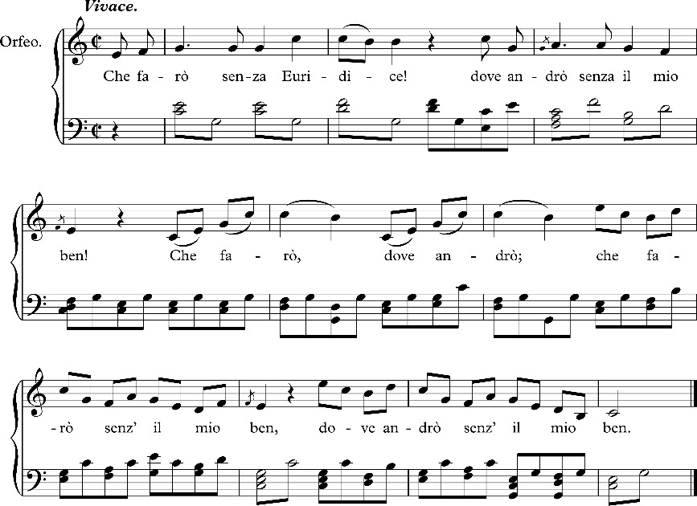

[III]
Vorwort.
V2.1An der achten Auflage (1891)
dieser zuerst im Jahre 1854 erschienenen Schrift war nichts weiter neu,
als das passendere Format und die geschmackvollere Ausstattung. Dasselbe gilt von
der
hier vorliegenden neuen Auflage. Auch dieser darf ich die Worte
anpassen, welche Fr. Th. Vischer
dem Wiederabdruck einer älteren
Abhandlung („der
Traum“) vorausschickte. 1
„Ich nehme,“
sagt Vischer,
„diese Studie in die gegenwärtige Sammlung auf, ohne sie gegen Angriffe,
die sie erfahren hat, zu schützen. Auch verbessernden Überarbeitens habe ich
mich enthalten, ausgenommen kleine unwichtige Nachhilfen. Ich würde jetzt
manches vielleicht anders sagen, mehr auseinandersetzen, gedeckter, beschirmter
hinstellen;
[IV] wem gefällt eine Arbeit ganz, wenn er sie nach
Jahren wieder liest? Allein man weiß auch, wie leicht mit nachbesserndem
Eingreifen mehr verderbt als besser gemacht wird.“
V2.2Wollte ich hier in Polemik eingehen, auf alle
Kritiken antwortend, welche meine Schrift hervorgerufen hat, so würde dies Büchlein
zu einem erschreckend starken Band anschwellen. Meine Überzeugungen sind dieselben
geblieben, desgleichen die Positionen und schroff sich gegenüberstehenden
Musikparteien der Gegenwart. Der Leser wird mir daher wohl auch die Wiederholung
einiger Bemerkungen gestatten, mit welchen ich das Erscheinen der dritten Auflage begleitet
habe. Der Mängel dieser Abhandlung bin ich mir sehr lebhaft bewußt. Demungeachtet
hat
das weit über Erwarten günstige Schicksal der früheren Auflagen und der mich
hocherfreuende Anteil, mit welchem bedeutende Fachmänner philosophischer wie
musikalischer Disziplin davon Akt nahmen, mich überzeugt, daß meine Ideen, auch in
der etwas scharfen und rhapsodischen Weise ihres ursprünglichen Auftretens auf gutes
Erdreich gefallen sind. Eine merkwürdige Übereinstimmung mit diesen Anschauungen fand
ich,
[V] aufs freudigste überrascht, in den erst nach dem Tode des
Dichters, erschienenen kleinen Aufsätzen und Aphorismen über Musik von
Grillparzer
. Einige der wertvollsten dieser Aussprüche habe ich in
dieser neuen Auflage zu citieren mir nicht versagen können; ausführlicher davon ist
in meinem Essay: „Grillparzer und die Musik“ gehandelt. 2
V2.3Leidenschaftliche Gegner haben mir mitunter eine vollständige Polemik gegen alles, was Gefühl heißt, aufgedichtet, während jeder unbefangene und aufmerksame Leser doch unschwer erkennt, daß ich nur gegen die falsche Einmischung der Gefühle in die Wissenschaft protestiere, also gegen jene ästhetischen Schwärmer kämpfe, die mit der Prätension, den Musiker zu belehren, nur ihre klingenden Opiumträume auslegen. Ich teile vollkommen die Ansicht, daß der letzte Wert des Schönen immer auf unmittelbarer Evidenz des Gefühls beruhen wird. Aber ebenso fest halte ich an der Überzeugung, daß man aus all den üblichen Appellationen an das Gefühl nicht ein einziges musikalisches Gesetz ableiten kann.
[VI]
V2.4Diese Überzeugung bildet den Einen, den negativen Hauptsatz dieser Untersuchung. Er wendet sich zuerst und vornehmlich gegen die allgemein verbreitete Ansicht, die Musik habe „Gefühle darzustellen“. Es ist nicht einzusehen, wie man daraus die „Forderung einer absoluten Gefühllosigkeit der Musik“ herleiten will. Die Rose duftet, aber ihr „Inhalt“ ist doch nicht „die Darstellung des Duftes“; der Wald verbreitet schattige Kühle, allein er stellt doch nicht „das Gefühl schattiger Kühle dar“. Es ist kein müßiges Wortgefecht, wenn ausdrücklich gegen den Begriff „darstellen“ vorgegangen wird, denn aus ihm sind die größten Irrtümer der musikalischen Ästhetik entsprungen. Etwas „darstellen“ involviert immer die Vorstellung von zwei getrennten, verschiedenen Dingen, deren eines erst ausdrücklich durch einen besonderen Akt auf das andere bezogen wird.
V2.5Emanuel Geibel
hat durch ein glückliches Bild dies Verhältnis anschaulicher und erfreulicher
ausgedrückt, als philosophische Analyse es vermochte, und zwar in den Distichen:
3
[VII]
„Warum glückt es dir nie, Musik mit Worten zu schildern? /
Weil sie, ein rein Element, Bild und Gedanken verschmäht. /
Selbst das Gefühl ist nur wie ein sanft durchscheinender Flußgrund, /
Drauf ihr klingender Strom schwellend und sinkend entrollt.“ /
Wenn dies schöne Sinngedicht obendrein unter dem nachhallenden Eindruck dieser
Schrift entstand, wie ich zu vermuten Anlaß habe, so muß sich meine, von poetischen
Gemütern zumeist verketzerte Anschauung doch auch mit wahrer Poesie leidlich
vertragen.
V2.6Jenem negativen Hauptsatz steht
korrespondierend der positive gegenüber: die Schönheit eines Tonstücks
ist spezifisch musikalisch, d. h. den Tonverbindungen ohne Bezug auf
einen fremden, außermusikalischen Gedankenkreis innewohnend. Es lag in der redlichen
Absicht des Verfassers, das „Musikalisch-Schöne“ als Lebensfrage unserer Kunst und
oberste Norm ihrer Ästhetik vollständig zu beleuchten. Wenn trotzdem das polemische,
negierende Element in der Ausführung ein Übergewicht erlangt, so wird man dieses in
Erwägung der besonderen Zeitumstände hoffentlich entschuldigen. Als ich diese
Abhandlung schrieb, waren die Wortführer der Zukunftsmusik eben am lautesten
[VIII] bei Stimme und mußten wohl Leute von meinem Glaubensbekenntnis zur
Reaktion reizen. Als ich die zweite Auflage
veranstaltete, waren eben Liszts Programm-Symphonien hinzugekommen, welche
vollständiger, als es bisher gelungen ist, die selbständige Bedeutung der Musik
abdanken, und diese dem Hörer nur mehr als gestaltentreibendes Mittel eingeben.
Seither besitzen wir nun auch Richard Wagners „Tristan,“ „Nibelungenring“ und
seine Lehre von der
„unendlichen Melodie“
, d. h. die zum Prinzip erhobene Formlosigkeit, den gesungenen und gegeigten
Opiumrausch, für dessen Kultus ja in Bayreuth ein eigener Tempel eröffnet worden ist.
V2.7Man möge es mir zu gute halten, wenn ich angesichts solcher Zeichen keine Neigung fühlte, den polemischen Teil meiner Schrift zu kürzen oder abzuschwächen, sondern im Gegenteil noch dringender auf das Eine und Unvergängliche in der Tonkunst, auf die musikalische Schönheit hinwies, wie sie unsere großen Meister verkörperten und echt musikalische Erfinder auch in aller Zukunft pflegen werden.
Ed. H.
[1]
I. Die Gefühlsästhetik.
1.1Die bisherige Behandlungsweise der musikalischen Ästhetik leidet fast durchaus an dem empfindlichen Mißgriff, daß sie sich nicht sowohl mit der Ergründung dessen, was in der Musik schön ist, als vielmehr mit der Schilderung der Gefühle abgiebt, die sich unser dabei bemächtigen. Diese Untersuchungen entsprechen vollständig dem Standpunkt jener älteren ästhetischen Systeme, welche das Schöne nur in Bezug auf die dadurch wachgerufenen Empfindungen betrachteten und bekanntlich auch die Philosophie des Schönen als eine Tochter der Empfindung (αίσϑησιϛ) aus der Taufe hoben.
1.2An und für sich unphilosophisch, bekommen solche
Ästhetiken in ihrer Anwendung auf die ätherischeste aller Künste geradezu etwas
Sentimentales
[2] das, so erquickend als möglich für schöne Seelen, dem
Lernbegierigen äußerst wenig Aufklärung bietet. Wer über das Wesen der Tonkunst
Belehrung sucht, der wünscht eben aus der dunklen Herrschaft des Gefühls
herauszukommen, und nicht – wie ihm in den meisten Handbüchern geschieht –
fortwährend auf das Gefühl verwiesen zu werden.
1.3Der Drang nach einer möglichst objektiven Erkenntnis der Dinge, wie er in unserer Zeit alle Gebiete des Wissens bewegt, muß notwendig auch an die Erforschung des Schönen rühren. Diese wird ihm nur dadurch genügen können, daß sie mit einer Methode bricht, welche vom subjektiven Gefühl ausgeht, um nach einem poetischen Spaziergang über die ganze Peripherie des Gegenstandes wieder zum Gefühl zurückzukehren. Sie wird, will sie nicht ganz illusorisch werden, sich der naturwissenschaftlichen Methode wenigstens so weit nähern müssen, daß sie versucht, den Dingen selbst an den Leib zu rücken, und zu forschen, was in diesen, losgelöst von den tausendfältig wechselnden Eindrücken, das Bleibende, Objektive sei.
1.4 & 1.5Die Poesie und die bildenden Künste sind in
ihrer ästhetischen Erforschung und Begründung dem
[3] gleichen Erwerb der
Tonkunst weit voraus. Ihre Gelehrten haben größtenteils den Wahn abgelegt, es könne
die Ästhetik einer bestimmten Kunst durch bloßes Anpassen des allgemeinen,
metaphysischen Schönheitsbegriffs (der doch in jeder Kunst eine Reihe neuer
Unterschiede eingeht) gewonnen werden. Die knechtische Abhängigkeit der
Spezial-Ästhetiken von dem obersten metaphysischen Prinzip einer allgemeinen
Ästhetik weicht immer mehr der Überzeugung, daß jede Kunst in ihren eigenen
technischen Bestimmungen gekannt, aus sich selbst heraus begriffen sein will. Das
„System“ macht allmählich der „Forschung“ Platz, und diese hält fest an dem
Grundsatz, daß die Schönheitsgesetze jeder Kunst untrennbar sind von den
Eigenthümlichkeiten ihres Materials, ihrer Technik. 4
[4]
1.6Sodann pflegen die Ästhetiken der redenden und der bildenden Künste, sowie ihre praktischen Ausläufer, die Kunstkritiken, bereits die Regel festzuhalten, daß in ästhetischen Untersuchungen vorerst das schöne Objekt und nicht das empfindende Subjekt zu erforschen ist.
1.8Die Tonkunst allein scheint diesen
sachlichen Standpunkt noch immer nicht erringen zu können. Sie scheidet streng ihre
theoretisch-grammatikalischen Regeln von den ästhetischen Untersuchungen und liebt
es, erstere so trocken verständig, letztere so lyrisch-sentimental als möglich zu
halten. Sich ihren Inhalt als eine selbständige Art des Schönen klar und scharf
gegenüber zu stellen, war der musikalischen Ästhetik bisher eine unerschwingliche
An
[5]strengung. Statt dessen treiben da die „Empfindungen“
den alten Spuk bei hellichtem Tage fort. Das musikalisch Schöne wird nach wie vor
nur
von Seite seines subjektiven Eindrucks angesehen, und in Büchern, Kritiken und
Gesprächen täglich bekräftigt, daß die Affekte die einzige ästhetische
Grundlage der Tonkunst und allein berechtigt seien, die Grenzen des Urteils über
dieselbe abzustecken.
1.9Die Musik – so wird uns gelehrt – kann nicht durch
Begriffe den Verstand unterhalten, wie die Dichtkunst, ebensowenig durch sichtbare
Formen das Auge wie die bildenden Künste, also muß sie den Beruf haben, auf die
Gefühle des Menschen zu wirken. „Die Musik hat es mit den Gefühlen zu
thun.“ Dieses „zu thun haben“ ist einer der charakteristischen Ausdrücke der
bisherigen musikalischen Ästhetik. Worin der Zusammenhang der Musik mit
den Gefühlen, bestimmter Musikstücke mit bestimmten Gefühlen bestehe, nach welchen
Naturgesetzen er wirke, nach welchen Kunstgesetzen er zu gestalten sei, darüber
ließen uns diejenigen vollkommen im Dunkeln, die eben damit „zu thun“ hatten. Erst
wenn man sein Auge ein wenig an dieses Dunkel gewöhnt hat, gelangt man dahin, zu
ent
[6]decken, daß in der herrschenden musikalischen
Anschauung die Gefühle eine doppelte Rolle spielen.
1.10Fürs erste wird als Zweck und Bestimmung der Musik aufgestellt, sie solle Gefühle oder „schöne Gefühle“ erwecken. Fürs zweite bezeichnet man die Gefühle als den Inhalt, welchen die Tonkunst in ihren Werken darstellt.
1.11Beide Sätze haben das Ähnliche, daß der eine genau so falsch ist, wie der andere.
1.12Die Widerlegung des ersteren, die meisten
musikalischen Handbücher einleitenden Satzes darf uns nicht lange aufhalten. Das
Schöne hat überhaupt keinen Zweck, denn es ist bloße Form,
welche zwar nach dem Inhalt, mit dem sie erfüllt wird, zu den
verschiedensten Zwecken verwandt werden kann, aber selbst keinen andern hat, als sich
selbst. Wenn aus der Betrachtung des Schönen angenehme Gefühle für den Betrachter
entstehen, so gehen diese das Schöne als solches nichts an. Ich kann wohl dem
Betrachter Schönes vorführen in der bestimmten Absicht, daß er daran Vergnügen finde,
allein diese Absicht hat mit der Schönheit des Vorgeführten selbst nichts zu
schaffen. Das Schöne ist und bleibt schön, auch wenn es keine
[7] Gefühle
erzeugt, ja wenn es weder geschaut noch betrachtet wird; also zwar nur
für das Wohlgefallen eines anschauenden Subjekts, aber nicht
durch dasselbe.
1.13Von einem Zweck kann also in diesem Sinn auch bei der Musik nicht gesprochen werden, und die Thatsache, daß diese Kunst in einem lebhaften Zusammenhang mit unseren Gefühlen steht, rechtfertigt keineswegs die Behauptung, es liege in diesem Zusammenhange ihre ästhetische Bedeutung.
1.14Um dieses Verhältnis näher zu untersuchen, müssen wir vorerst die Begriffe „Gefühl“ und „Empfindung“ – gegen deren Verwechselung im gewöhnlichen Sprachgebrauch nichts einzuwenden ist – hier streng unterscheiden.
1.15Empfindung ist das Wahrnehmen einer
bestimmten Sinnesqualität: eines Tons, einer Farbe. Gefühl das
Bewußtwerden einer Förderung oder Hemmung unseres Seelenzustandes, also eines
Wohlseins oder Mißbehagens. Wenn ich den Geruch oder Geschmack eines Dinges, dessen
Form, Farbe oder Ton mit meinen Sinnen einfach wahrnehme (perzipiere), so
empfinde ich diese Qualitäten; wenn Wehmut, Hoffnung, Frohsinn oder
[8] Haß mich bemerkbar über den gewöhnlichen Seelenzustand emporheben oder
unter denselben herabdrücken, so fühle ich. 5
1.16Das Schöne trifft zuerst unsere Sinne. Dieser Weg ist ihm nicht eigentümlich, es teilt ihn mit allem überhaupt Erscheinenden. Die Empfindung ist Anfang und Bedingung des ästhetischen Gefallens und bildet erst die Basis des Gefühls, welches stets ein Verhältnis und oft die kompliziertesten Verhältnisse voraussetzt. Empfindungen zu erregen bedarf es nicht der Kunst; ein einzelner Ton, eine einzelne Farbe kann das. Wie gesagt werden beide Ausdrücke willkürlich vertauscht, meistens aber in älteren Werken „Empfindung“ genannt, was wir als „Gefühl“ bezeichnen. Unsere Gefühle also, meinen jene Schriftsteller, solle die Musik erregen und uns abwechselnd mit Andacht, Liebe, Jubel, Wehmut erfüllen.
1.17Solche Bestimmung hat aber in Wahrheit
[9] weder diese,
noch eine andere Kunst. Die Kunst hat vorerst ein Schönes darzustellen.
Das Organ, womit das Schöne aufgenommen wird, ist nicht das Gefühl, 6 sondern die Phantasie, als die
Thätigkeit des reinen Schauens.
1.18Merkwürdig ist es, wie die Musiker und älteren
Ästhetiker sich nur in dem Kontrast von „Gefühl“ und „Verstand“ bewegen, als läge
nicht die Hauptsache gerade inmitten dieses angeblichen Dilemmas. Aus
der Phantasie des Künstlers entsteigt das Tonstück für die Phantasie des Hörers.
Freilich ist die Phantasie gegenüber dem Schönen nicht bloß ein Schauen,
sondern ein Schauen mit Verstand, d. i. Vorstellen und Urteilen,
letzteres natürlich mit solcher Schnelligkeit, daß die einzelnen Vorgänge uns gar
nicht zum Bewußtsein kommen, und die Täuschung entsteht, es geschehe
[10]
unmittelbar, was doch in Wahrheit von vielfach vermittelnden
Geistesprozessen abhängt. Das Wort „Anschauung“, längst von den Gesichtsvorstellungen
auf alle Sinneserscheinungen übertragen, entspricht überdies trefflich dem Akte des
aufmerksamen Hörens, welches ja in einem successiven Betrachten der Tonformen
besteht. Die Phantasie ist dabei keineswegs ein abgeschlossenes Gebiet: so wie sie
ihren Lebensfunken aus den Sinnesempfindungen zog, sendet sie wiederum ihre Radien
schnell an die Thätigkeit des Verstandes und des Gefühls aus. Dies sind für die echte
Auffassung des Schönen jedoch nur Grenzgebiete.
1.19In reiner Anschauung genießt der Hörer das erklingende Tonstück, jedes stoffliche Interesse muß ihm fern liegen. Ein solches ist aber die Tendenz, Affekte in sich erregen zu lassen. Ausschließliche Bethätigung des Verstandes durch das Schöne verhält sich logisch anstatt ästhetisch, eine vorherrschende Wirkung auf das Gefühl ist noch bedenklicher, nämlich gerade pathologisch.
1.20Alles das, von der allgemeinen Ästhetik längst
entwickelt, gilt gleichmäßig für das Schöne aller Künste. Behandelt man also die
Musik als Kunst,
[11] so muß man die Phantasie
und nicht das Gefühl als die ästhetische Instanz derselben erkennen. Der bescheidene
Vordersatz scheint uns darum rätlich, weil bei dem wichtigen Nachdruck, welcher
unermüdlich auf die durch Musik zu erzielende Sänftigung der menschlichen
Leidenschaften gelegt wird, man in der That oft nicht weiß, ob von der Tonkunst als
von einer polizeilichen, einer pädagogischen oder medizinischen Maßregel die Rede
ist.
1.21Die Musiker sind aber weniger in dem Irrtume befangen, alle Künste gleichmäßig den Gefühlen vindizieren zu wollen, als sie darin vielmehr etwas spezifisch der Tonkunst Eigentümliches sehen. Die Macht und Tendenz, beliebige Affekte im Hörer zu erwecken, sei es eben, was die Musik vor den übrigen Künsten charakterisiere. 7
[12]
1.22Allein so wenig wir diese Wirkung als die Aufgabe
der Künste überhaupt anerkannten, so wenig können wir in ihr das spezifische Wesen
der Musik erblicken. Einmal festgehalten, daß die Phantasie
das eigentliche Organ des Schönen ist, wird eine sekundäre Wirkung auf das Gefühl
in
jeder Kunst vorkommen. Bewegt uns nicht ein großes Geschichtsbild mit
der Kraft eines Erlebnisses? Stimmen uns Raphaels Madonnen nicht zur Andacht, Poussins
Landschaften nicht zu sehnsüchtiger Wanderlust? Bleibt etwa der Anblick des Straßburger Doms
ohne Wirkung auf unser Gemüt? Die Antwort kann nicht zweifelhaft sein. Sie gilt
ebenso von der Poesie, ja von mancher außerästhetischen Thätigkeit, z. B. religiöser
Erbauung, Eloquenz u. a. Wir sehen, daß die übrigen Künste ebenfalls stark genug auf
das Gefühl einwirken. Den angeblichen prinzipiellen Unterschied derselben von der
Musik müßte man daher auf ein Mehr oder Weniger dieser Wirkung basieren. Ganz
unwissenschaftlich an sich, hätte dieser Ausweg obendrein die Entscheidung, ob man
stärker und tiefer fühle bei einer Mozartschen Symphonie oder bei einem Trauerspiele
[13]
Shakespeares,
bei einem Gedicht von Uhland oder einem Hummelschen Rondo, füglich
jedermann selbst zu überlassen. Meint man aber, die Musik wirke „unmittelbar“ auf
das
Gefühl, die andern Künste erst durch die Vermittlung von Begriffen, so fehlt man nur
mit andern Worten, weil, wie wir gesehen, die Gefühle auch von dem
Musikalisch-Schönen nur in zweiter Linie beschäftigt werden sollen,
unmittelbar nur die Phantasie. Unzählige Mal wird in musikalischen
Abhandlungen die Analogie herbeigerufen, die zweifellos zwischen der Musik und der
Baukunst besteht. Ist aber je einem vernünftigen Architekten
beigefallen, die Baukunst habe den Zweck, Gefühle zu erregen, oder es
seien diese der Inhalt derselben?
1.23Jedes wahre Kunstwerk wird sich in
irgend eine Beziehung zu unserm Fühlen setzen, keines in eine
ausschließliche. Man sagt also gar nichts für das ästhetische Prinzip der Musik
Entscheidendes, wenn man sie nur ganz allgemein durch ihre Wirkung auf das Gefühl
charakterisiert. Ebenso wenig etwa, als man das Wesen des Weins ergründet, indem man
sich betrinkt. Es wird einzig auf die spezifische Art ankommen, wie
solche
[14] Affekte durch Musik hervorgerufen werden. Statt
also an der sekundären und unbestimmten Gefühlswirkung musikalischer Erscheinungen
zu
kleben, gilt es in das Innere der Werke zu dringen und die spezifische Kraft ihres
Eindrucks aus den Gesetzen ihres eigenen Organismus zu erklären. Ein Maler oder ein
Poet überredet sich kaum mehr, Rechenschaft von dem Schönen seiner Kunst abgelegt
zu
haben, wenn er untersuchte, welche „Gefühle“ seine Landschaft oder sein Drama
hervorruft: er wird der zwingenden Macht nachspüren, warum das Werk
gefällt und weshalb gerade in dieser und keiner andern Weise. Daß diese Untersuchung,
wie wir später sehen werden, in der Tonkunst viel schwieriger ist als in den andern
Künsten, ja daß das Erforschliche in ihr nur bis zu einer gewissen Tiefe hinabreicht,
berechtigt ihre Kritiker noch lange nicht, Gefühlsaffektionen und musikalische
Schönheit unmittelbar zu vermengen, statt sie in wissenschaftlicher Methode möglichst
getrennt darzustellen.
1.27Kann überhaupt das Gefühl keine Basis für
ästhetische Gesetze sein, so ist obendrein gegen die Sicherheit des musikalischen
Fühlens Wesentliches
[15] zu bemerken. Wir meinen hier nicht bloß die
konventionelle Befangenheit, die es ermöglicht, daß unser Fühlen und Vorstellen oft
durch Texte, Überschriften und andere bloß gelegentliche Gedankenverbindungen,
besonders in Kirchen-, Kriegs- und Theaterkompositionen eine Richtung erhält, welche
wir fälschlich dem Charakter der Musik an sich zuzuschreiben geneigt sind. Vielmehr
ist überhaupt der Zusammenhang eines Tonstückes mit der dadurch hervorgerufenen
Gefühlsbewegung kein unbedingt kausaler, sondern es wechselt diese Stimmung mit dem
wechselnden Standpunkt unserer musikalischen Erfahrungen und Eindrücke. Wir begreifen
heute oft kaum, wie unsere Großeltern diese Tonreihe für einen
entsprechenden Ausdruck gerade dieses Affekts ansehen konnten. Dafür ist
z. B. die außerordentliche Verschiedenheit ein Beweis, mit der viele Mozartsche,
Beethovensche und Webersche Kompositionen zur Zeit ihrer Neuheit im
Gegensatz zu heute auf die Herzen der Hörer wirkten. Wie viele Werke von Mozart
erklärte man zu ihrer Zeit für das leidenschaftlichste, feurigste und kühnste, was
überhaupt an musikalischen Stimmungsbildern möglich schien. Der Behaglichkeit und
dem
reinen
[16] Wohlsein, welches aus Haydns Symphonieen
ausströme, stellte man die Ausbrüche heftiger Leidenschaft, ernstester Kämpfe,
bitterer, schneidender Schmerzen in Mozarts 8 Musik gegenüber. Zwanzig bis dreißig Jahre später entschied man
genau so zwischen Beethoven und Mozart. Die Stelle Mozarts als Repräsentanten
der heftigen, hinreißenden Leidenschaft nahm Beethoven ein, und Mozart war zu
der olympischen Klassicität Haydns avanciert. Ähnliche Wandlungen seiner
Anschauung erfährt jeder aufmerksame Musiker im Laufe eines längeren Lebens an sich
selbst. Durch diese Verschiedenheit der Gefühlswirkung ist jedoch die
musikalische Schätzung vieler einst so aufregend wirkender Werke, der
ästhetische Genuß, den ihre Originalität und Schönheit uns heute noch
bereitet, an und für sich nicht alteriert. Der Zusammenhang musikalischer Werke mit
gewissen
[17] Stimmungen besteht also nicht immer, überall, notwendig, als
ein absolut Zwingendes, er ist vielmehr unvergleichlich wandelbarer als in jeder
andern Kunst.
1.29So besitzt denn die Wirkung der Musik auf das Gefühl weder die Notwendigkeit, noch die Ausschließlichkeit, noch die Stetigkeit, welche eine Erscheinung aufweisen müßte, um ein ästhetisches Prinzip begründen zu können.
1.30Die starken Gefühle selbst, welche die Musik aus
ihrem Schlummer wachsingt, und all die süßen wie schmerzlichen Stimmungen, in die
sie
uns Halbträumende einlullt: wir möchten sie nicht durchaus unterschätzen. Zu den
schönsten, heilsamsten Mysterien gehört es ja, daß die Kunst solche Bewegungen ohne
irdischen Anlaß, recht von Gottes Gnaden hervorzurufen vermag. Nur gegen die
unwissenschaftliche Verwertung dieser Thatsachen für ästhetische
Prinzipien legen wir Verwahrung ein. Lust und Trauer können durch Musik in
hohem Grade erweckt werden; das ist richtig. Nicht in noch höherem vielleicht durch
den Gewinnst des großen Treffers, oder durch die Todeskrankheit eines Freundes?
Solange man Anstand nimmt, deshalb
[18] ein Lotterielos den Symphonieen,
oder ein ärztliches Bulletin den Ouverturen beizuzählen, so lange darf man auch
faktisch erzeugte Affekte nicht als eine ästhetische Spezialität der Tonkunst oder
eines bestimmten Tonstücks behandeln. Es wird einzig auf die spezifische
Art ankommen, wie solche Affekte durch Musik hervorgerufen werden. Wir
werden im IV. und V. Kapitel den Einwirkungen
der Musik auf das Gefühl die aufmerksamste Betrachtung widmen, und die
positiven Seiten dieses merkwürdigen Verhältnisses untersuchen. Hier,
am Eingang unserer Schrift, konnte die negative Seite, als Protest gegen ein
unwissenschaftliches Prinzip, nicht zu scharf hervorgekehrt werden.
1.30.1Der erste, der meines Wissens diese
Gefühlsästhetik in der Musik angegriffen hat, ist Herbart (im 9. Kapitel
seiner Encyklopädie). Nachdem er sich gegen die „Deutelei“ von Kunstwerken erklärt
hat, sagt er:
„Die Traumdeuter und Astrologen haben sich Jahrtausende nicht wollen sagen
lassen, daß ein Mensch träume, weil er schläft, und daß die Gestirne sich bald
da bald dort zeigen, weil sie sich bewegen. So wiederholen
[19] bis
auf den heutigen Tag selbst gute Musikkenner den Satz, die Musik drücke Gefühle
aus, als ob das Gefühl, das etwa durch sie erregt wird und zu dessen Ausdruck
sie eben deshalb, wenn man will, sich gebrauchen läßt, den allgemeinen Regeln
des einfachen und doppelten Kontrapunktes zu Grunde läge, auf denen ihr wahres
Wesen beruht. Was mögen doch die alten Künstler, welche die möglichen Formen
der Fuge entwickelten, auszudrücken beabsichtigt haben? Gar nichts wollen sie
ausdrücken; ihre Gedanken gingen nicht hinaus, sondern in das
innere Wesen der Kunst hinein; diejenigen aber, die sich auf Bedeutungen
legen, verraten ihre Scheu vor dem innern und ihre Vorliebe für
den äußern Schein.“
Leider hat Herbart diese gelegentliche Opposition im einzelnen nicht näher begründet,
und neben dieser glänzenden finden sich bei ihm auch manche schiefe Bemerkungen über
Musik. Jedenfalls haben seine obigen Worte, wie wir sogleich sehen werden, nicht die
verdiente Beachtung gefunden.
1.31Anmerkung. Es dünkt uns für den
vorliegenden Zweck kaum notwendig, den Ansichten, deren Bekämpfung uns beschäftigt,
die Namen ihrer Autoren beizusetzen, da diese Ansichten weniger die Blüte
eigentümlicher Überzeugungen,
[20] als vielmehr
der Ausdruck einer allgemein gewordenen traditionellen Denkweise sind. Nur um einen
Einblick in die ausgebreitete Herrschaft dieser Grundsätze zu gewähren, mögen einige
Citate älterer und neuerer Musikschriftsteller aus der großen Menge derer, welche
dafür zu Gebote stehen, hier Platz finden.
- Mattheson: „Wir müssen bei jeder Melodie uns eine Gemütsbewegung (wo nicht mehr als eine) zum Hauptzweck setzen.“ (Vollkomm. Kapellmeister. S. 143.)
- Neidhardt: „Der Musik Endzweck ist, alle Affekte durch die bloßen Töne und deren Rhythmum, trotz dem besten Redner, rege zu machen.“ (Vorrede zur „Temperatur“.)
- J. N. Forkel versteht unter den „Figuren in der Musik“ „dasselbe, was sie in der Dichtkunst und Redekunst sind, nämlich der Ausdruck der unterschiedenen Arten, nach welchen sich Empfindungen und Leidenschaften äußern“ . (Über die Theorie der Musik. Göttingen 1777. S. 26.)
- I. Mosel definiert die Musik als „die Kunst, bestimmte Empfindungen durch geregelte Töne auszudrücken“ .
- C. F. Michaelis: „Musik ist die Kunst des Ausdrucks von Empfindungen durch Modulation der Töne. Sie ist die Sprache der Affekte“ etc. (Über den Geist der Tonkunst, 2. Versuch. 1800. S. 29.)
-
Marburg:
„Der Zweck, den der Komponist sich in seiner Arbeit vorsetzen soll, ist,
die Natur nachzuahmen … die Leidenschaften nach seinem Willen zu regen …
[21] die Bewegungen der Seele, die Neigungen des Herzens nach dem Leben zu schildern.“ (Krit. Musikus, 1. Band. 1750. 40. Stück.) - W. Heinse: „Der Hauptendzweck der Musik ist die Nachahmung oder vielmehr Erregung der Leidenschaften.“ (Musikal. Dialoge. 1805. S. 30.)
- J. J. Engel: „Eine Sinfonie, eine Sonate u. s. w. muß die Ausführung einer Leidenschaft, die aber in mannigfaltige Empfindungen ausbeugt, enthalten.“ (Über musik. Malerei. 1780. S. 29.)
- J. Ph. Kirnberger: „Ein melodischer Satz (Thema) ist ein verständlicher Satz aus der Sprache der Empfindung, der einen empfindsamen Zuhörer die Gemütslage, die ihn hervorgebracht hat, fühlen läßt.“ (Kunst des reinen Satzes, II. Teil. S. 152.)
- Pierers Universallexikon (2. Auflage): „Musik ist die Kunst, durch schöne Töne Empfindungen und Seelenzustände auszudrücken. Sie steht höher als die Dichtkunst, welche nur (!) mit dem Verstande erkennbare Stimmungen darzustellen vermag, da die Musik ganz unerklärliche Empfindungen und Ahnungen ausdrückt.“
- G. Schillings Universallexikon der Tonkunst bringt unter dem Artikel „Musik“ die gleiche Erklärung.
- Koch definiert die Musik als die „Kunst, ein angenehmes Spiel der Empfindungen durch Töne auszudrücken“ . (Musik. Lexikon: „Musik“.)
- A. André: „Musik ist die Kunst, Töne hervorzubringen, welche Empfindungen und Leidenschaften schildern, erregen und unterhalten.“ (Lehrbuch der Tonkunst I.)
[22]
- Sulzer: „Musik ist die Kunst, durch Töne unsere Leidenschaften auszudrücken, wie in der Sprache durch Worte.“ (Theorie der schönen Künste.)
- J. W. Böhm: „Nicht den Verstand, nicht die Vernunft, sondern nur das Gefühlsvermögen beschäftigen der Saiten harmonische Töne.“ (Analyse des Schönen der Musik. Wien 1830. S. 62.)
- Gottfried Weber: „Die Tonkunst ist die Kunst, durch Töne Empfindungen auszudrücken.“ (Theorie der Tonsetzkunst, 2. Aufl. I. Bd. S. 15.)
- F. Hand: „Die Musik stellt Gefühle dar. Jedes Gefühl und jeder Gemütszustand hat an sich und so auch in der Musik seinen besonderen Ton und Rhythmus.“ (Ästhetik der Tonkunst, I. Band. 1837. § 24.)
- Amadeus Autodidaktus: „Die Tonkunst entquillt und wurzelt nur in der Welt der geistigen Gefühle und Empfindungen. Musikalisch melodische Töne (!) erklingen nicht dem Verstande, welcher Empfindungen ja nur beschreibt und zergliedert, … sie sprechen zu dem Gemüt“ etc. (Aphorismen über Musik. Leipzig 1857. S. 329.)
- Fermo Bellini: „Musica è l’arte, che esprime i sentimenti e le passioni col mezzo di suoni.“ (Manuale di Musica. Milano, Ricordi. 1853.)
- Friedrich Thiersch: Allgemeine Ästhetik (Berlin 1846) § 18. S. 101: „Die Musik ist die Kunst, durch Wahl und Verbindung der Töne Gefühle und Stimmungen des Gemütes auszudrücken oder zu erregen.“
[23]
- A. v. Dommer: Elemente der Musik (Leipzig 1862): „Aufgabe der Tonkunst: Die Tonkunst soll Gefühle und durch das Gefühl Vorstellungen in uns erregen.“ (S. 174.)
- Rich. Wagner, „Das Kunstwerk der Zukunft“ (1850. Gesamm. Schr. III, 99 und ähnlich sonst): „Das Organ des Herzens ist der Ton, seine künstlerisch bewußte Sprache die Tonkunst.“ In den späteren Schriften freilich werden Wagners Definitionen noch nebelhafter; da ist ihm Musik gleich „Kunst des Ausdrucks“ überhaupt (in „Oper und Drama“, Ges. Schriften III, 343), die ihm als „Idee der Welt“ befähigt scheint, „das Wesen der Dinge in seiner unmittelbarsten Kundgebung zu erfassen“ u. s. w. („Beethoven“, 1870. S. 6 ff.).
[24]
II. Die „Darstellung von Gefühlen“ ist nicht der Inhalt der Musik.
2.1Teils als Konsequenz dieser Theorie, welche die Gefühle für das Endziel musikalischer Wirkung erklärt, teils als Korrektiv derselben, wird der Satz aufgestellt: die Gefühle seien der Inhalt, welchen die Tonkunst darzustellen habe.
2.2Die philosophische Untersuchung einer Kunst drängt
zu der Frage nach dem Inhalt derselben. Die Verschiedenheit des Inhalts
der Künste (untereinander) und die damit zusammenhängende Grundverschiedenheit ihrer
Gestaltung folgt mit Notwendigkeit aus der Verschiedenheit der Sinne, an
welche sie gebunden sind. Jeder Kunst eignet ein Kreis von Ideen, welche sie mit
ihren Ausdrucksmitteln als Ton, Wort, Farbe, Stein darstellt.
[25] Das
einzelne Kunstwerk verkörpert demnach eine bestimmte Idee als Schönes in sinnlicher
Erscheinung. Diese bestimmte Idee, die sie verkörpernde Form, und die Einheit beider
sind Bedingungen des Schönheitsbegriffs, von welchen keine wissenschaftliche
Ergründung irgend einer Kunst sich mehr trennen kann.
2.3Was Inhalt eines Werks der dichtenden oder bildenden Kunst sei, läßt sich mit Worten ausdrücken und auf Begriffe zurückführen. Wir sagen: dies Bild stellt ein Blumenmädchen vor, diese Statue einen Gladiator, jenes Gedicht eine That Rolands. Das mehr oder minder vollkommene Aufgehen des so bestimmten Inhalts in der künstlerischen Erscheinung begründet dann unser Urteil über die Schönheit des Kunstwerks.
2.4Als Inhalt der Musik hat man ziemlich
einverständlich die ganze Stufenleiter menschlicher Gefühle genannt,
weil man in diesen den Gegensatz zu begrifflicher Bestimmtheit und daher die richtige
Unterscheidung von dem Ideal der bildenden und dichtenden Kunst gefunden glaubte.
Demnach seien die Töne und ihr kunstreicher Zusammenhang bloß Material,
Ausdrucksmittel, wodurch der
[26] Komponist die Liebe, den Mut, die
Andacht, das Entzücken darstellt. Diese Gefühle in ihrer reichen Mannigfaltigkeit
seien die Idee, welche den irdischen Leib des Klanges angethan, um als musikalisches
Kunstwerk auf Erden zu wandeln. Was uns an einer reizenden Melodie, einer sinnigen
Harmonie ergötzt und erhebt, sei nicht diese selbst, sondern was sie bedeutet: das
Flüstern der Zärtlichkeit, das Stürmen der Kampflust.
2.5Um auf festen Boden zu gelangen, müssen wir vorerst solche altverbundene Metaphern schonungslos trennen: Das Flüstern? Ja; – aber keineswegs der „Sehnsucht“; das Stürmen? Allerdings, doch nicht der „Kampflust“. In der That besitzt die Musik das eine oder das andere; sie kann flüstern, stürmen, rauschen, – das Lieben und Zürnen aber trägt nur unser eigenes Herz in sie hinein.
2.6Die Darstellung eines bestimmten Gefühls oder Affektes liegt gar nicht in dem eigenen Vermögen der Tonkunst.
2.7Es stehen nämlich die Gefühle in der Seele nicht
isoliert da, so daß sie sich aus ihr gleichsam herausheben ließen von einer Kunst,
welcher die
[27] Darstellung der übrigen Geistesthätigkeiten verschlossen
ist. Sie sind im Gegenteil abhängig von physiologischen und pathologischen
Voraussetzungen, sind bedingt durch Vorstellungen, Urteile, kurz durch eben das ganze
Gebiet verständigen und vernünftigen Denkens, welchem man das Gefühl so gern als ein
Gegensätzliches gegenüberstellt.
2.8Was macht denn ein Gefühl zu diesem
bestimmten Gefühl? Zur Sehnsucht, Hoffnung, Liebe? Etwa die bloße Stärke
oder Schwäche, das Wogen der inneren Bewegung? Gewiß nicht. Diese kann bei
verschiedenen Gefühlen gleich sein und auch wieder bei demselben Gefühl, in mehreren
Individuen, zu andern Zeiten, verschieden. Nur auf Grundlage einer Anzahl – im
Momente starken Fühlens vielleicht unbewußter – Vorstellungen und Urteile kann unser
Seelenzustand sich zu eben diesem bestimmten Gefühl verdichten. Das Gefühl der
Hoffnung ist untrennbar von der Vorstellung eines glücklicheren Zustandes, welcher
kommen soll und mit dem gegenwärtigen verglichen wird. Die Wehmut vergleicht ein
vergangenes Glück mit der Gegenwart. Das sind ganz bestimmte Vorstellungen, Begriffe,
ohne sie, ohne
[28] diesen Gedankenapparat
kann man das gegenwärtige Fühlen nicht „Hoffnung“, nicht „Wehmut“ nennen, er macht
sie dazu. Abstrahiert man von ihm, so bleibt eine unbestimmte Bewegung, allenfalls
die Empfindung allgemeinen Wohlbefindens oder Mißbehagens. Die Liebe
kann ohne die Vorstellung einer geliebten Persönlichkeit, ohne den Wunsch und das
Streben nach der Beglückung, Verherrlichung, dem Besitz dieses Gegenstandes nicht
gedacht werden. Nicht die Art der bloßen Seelenbewegung, sondern ihr begrifflicher
Kern, ihr wirklicher, historischer Inhalt macht sie zur Liebe. Ihrer
Dynamik nach kann diese ebensogut sanft als stürmisch, ebensowohl
froh als schmerzlich auftreten und bleibt doch immer Liebe. Diese Betrachtung allein
reicht hin, zu zeigen, daß Musik nur jene verschiedenen begleitenden Adjektiva
ausdrücken könne, nie das Substantivum, die Liebe selbst. Ein bestimmtes Gefühl (eine
Leidenschaft, ein Affekt) existiert als solches niemals ohne einen wirklichen
historischen Inhalt, der eben nur in Begriffen dargelegt werden kann. Begriffe kann
die Musik als „unbestimmte Sprache“ zugestandener Weise nicht wiedergeben – ist da
[29] nicht die Folgerung psychologisch unablehnbar, daß sie auch
bestimmte Gefühle nicht auszudrücken vermag? Die Bestimmheit der Gefühle
ruht ja gerade in deren begrifflichem Kern.
2.9Wie es komme, daß Musik dennoch Gefühle, wie Wehmut,
Frohsinn u. dergl. erregen kann (nicht muß), das wollen wir
später, wo vom subjektiven Eindruck der Musik die Rede sein wird, untersuchen. Hier
mußte bloß theoretisch festgestellt werden, ob die Musik fähig sei, ein bestimmtes
Gefühl darzustellen. Die Frage war zu verneinen, da die Bestimmtheit der
Gefühle von konkreten Vorstellungen und Begriffen nicht getrennt werden kann, welche
letztere außer dem Gestaltungsbereich der Musik liegen. – Einen gewissen Kreis von
Ideen hingegen kann die Musik mit ihren eigensten Mitteln reichlichst
darstellen. Dies sind, entsprechend dem sie aufnehmenden Organ, unmittelbar alle
diejenigen Ideen, welche auf hörbare Veränderungen der Kraft, der Bewegung, der
Proportionen sich beziehen, also die Idee des Anschwellenden, des Absterbenden, des
Eilens, Zögerns, des künstlich Verschlungenen, des einfach Fortschreitenden u. dergl.
– Es kann
[30] ferner der ästhetische Ausdruck einer Musik anmutig genannt
werden, sanft, heftig, kraftvoll, zierlich, frisch: lauter Ideen, welche in
Tonverbindungen eine entsprechende sinnliche Erscheinung finden. Wir können diese
Eigenschaftswörter daher unmittelbar von musikalischen Bildungen
gebrauchen, ohne an die ethische Bedeutung zu denken, welche sie für das menschliche
Seelenleben haben, und die eine geläufige Ideenverbindung so schnell zur Musik
heranbringt, ja mit den rein musikalischen Eigenschaften unter der Hand zu
verwechseln pflegt.
2.10Die Ideen, welche der Komponist darstellt, sind vor
allem und zuerst rein musikalische. Seiner Phantasie erscheint eine
bestimmte schöne Melodie. Sie soll nichts anderes sein als sie selbst. Wie aber jede
konkrete Erscheinung auf ihren höheren Gattungsbegriff, auf die sie zunächst
erfüllende Idee hinweist, und so fort immer höher und höher bis zur absoluten Idee,
so geschieht es auch mit den musikalischen Ideen. So wird z. B. dieses
sanfte, harmonisch ausklingende Adagio die Idee des Sanften, Harmonischen
überhaupt zur schönen Erscheinung bringen. Die
[31]
allgemeine Phantasie, welche gern die Ideen der Kunst in Bezug zum eigenen,
menschlichen Seelenleben setzt, wird dies Ausklingen noch höher, z. B. als den
Ausdruck milder Resignation eines in sich versöhnten Gemütes auffassen, und
kann vielleicht sofort bis zur Ahnung eines ewigen jenseitigen
Friedens aufsteigen.
2.11Auch die Poesie und bildende Kunst stellen vorerst ein Konkretes dar. Erst mittelbar kann das Bild eines Blumenmädchens auf die allgemeinere Idee mädchenhafter Zufriedenheit und Anspruchslosigkeit, ein beschneiter Kirchhof auf die Idee der irdischen Vergänglichkeit hinweisen. Gerade so, nur mit ungleich unsicherer und willkürlicher Deutung, kann der Hörer in diesem Musikstück die Idee jugendlichen Genügens, in jenem die Idee der Vergänglichkeit heraushören; allein ebensowenig als in den genannten Bildern sind diese abstrakten Ideen der Inhalt des musikalischen Werkes: von einer Darstellung des „Gefühls der Vergänglichkeit“, des „Gefühls der jugendlichen Genügsamkeit“ kann nun vollends keine Rede sein.
2.12Es giebt Ideen, welche durch die Tonkunst
[32] vollkommen repräsentiert werden und trotzdem nicht als
Gefühl vorkommen, sowie umgekehrt Gefühle von solcher
Mischung das Gemüt bewegen können, daß sie in keiner durch Musik darstellbaren
Idee ihre entsprechende Bezeichnung finden.
2.13Was kann also die Musik von den Gefühlen darstellen, wenn nicht deren Inhalt?
2.14Nur das Dynamische derselben. Sie
vermag die Bewegung eines physischen Vorganges nach den Momenten: schnell, langsam,
stark, schwach, steigend, fallend nachzubilden. Bewegung ist aber nur eine
Eigenschaft, ein Moment des Gefühls, nicht dieses selbst. Gemeiniglich glaubt man,
das darstellende Vermögen der Musik genügend zu begrenzen, wenn man behauptet, sie
könne keineswegs den Gegenstand eines Gefühls bezeichnen, wohl aber das
Gefühl selbst, z. B. nicht das Objekt einer bestimmten Liebe, wohl aber „Liebe“. Sie
kann dies in Wahrheit ebensowenig. Nicht Liebe, sondern nur eine Bewegung kann sie
schildern, welche bei der Liebe oder auch einem andern Affekt vorkommen kann, immer
jedoch das Unwesentliche seines Charakters ist. „Liebe“ ist ein abstrakter Begriff,
so gut wie „Tugend“ und „Unsterblichkeit“. Die
[33] Versicherung
der Theoretiker, Musik habe keine abstrakten Begriffe darzustellen, ist überflüssig;
denn keine Kunst kann dies. Daß nur Ideen, d. i. lebendig
gewordene Begriffe Inhalt künstlerischer Verkörperung sind, versteht sich von selbst.
9 Aber auch die Ideen
der Liebe, des Zornes, der Furcht können Instrumentalwerke nicht zur Erscheinung
bringen, weil zwischen jenen Ideen und schönen Tonverbindungen kein notwendiger
Zusammenhang besteht. Welches Moment dieser Ideen istʼs denn also, dessen die Musik
sich in der That so wirksam zu bemächtigen weiß? Es ist die Bewegung
(natürlich in dem weiteren Sinne, der auch das Anschwellen und Abschwächen des
einzelnen Tones oder Akkordes als „Bewegung“ auffaßt). Sie bildet das Element,
welches die Tonkunst mit den Gefühlszuständen gemeinschaftlich hat, und das sie
schöpferisch in tausend Abstufungen und Gegensätzen zu gestalten vermag.
2.14.1Der Begriff der Bewegung ist bisher
in den
[34] Untersuchungen des Wesens und der Wirkung der Musik auffallend
vernachlässigt worden; er dünkt uns der wichtigste und fruchtbarste.
2.15Was uns außerdem in der Musik bestimmte Seelenzustände zu malen scheint, ist symbolisch.
2.16Wie die Farben, so besitzen nämlich die Töne schon von Haus aus und in ihrer Vereinzelung symbolische Bedeutung, welche außerhalb und vor aller künstlerischen Absicht wirkt. Jede Farbe atmet eigentümlichen Charakter: sie ist uns keine bloße Ziffer, welche durch den Künstler lediglich eine Stellung erhält, sondern eine Kraft, schon von Natur aus in sympathetischen Zusammenhang mit gewissen Stimmungen gesetzt. Wer kennt nicht die Farbendeutungen, wie sie in ihrer Einfachheit gang und gäbe, oder durch feinere Geister zu poetischem Raffinement gehoben werden? Wir verbinden Grün mit dem Gefühl der Hoffnung, Blau mit der Treue. Rosenkranz erkennt in Rotgelb „anmutige Würde“ , in Violett „philisterhafte Freundlichkeit“ u. s. w. (Psychologie, 2. Aufl. S. 102.)
2.17In ähnlicher Weise sind uns die elementaren Stoffe
der Musik: Tonarten, Akkorde und Klangfarben schon an sich Charaktere.
Wir haben auch
[35] eine nur zu geschäftige Auslegekunst für die Bedeutung
musikalischer Elemente; Schubarts Symbolik der Tonarten bietet in ihrer Art
ein Seitenstück zu Goethes Deutung der Farben. Es folgen jedoch diese
Elemente (Töne, Farben) in ihrer künstlerischen Verwendung ganz anderen Gesetzen,
als
jene Wirkung ihrer isolierten Erscheinung. So wenig auf einem Historienbild jedes
Rot
uns Freude, jedes Weiß Unschuld bedeutet, ebensowenig wird in einer Symphonie alles
As-dur uns eine schwärmerische, alles H-moll eine menschenfeindliche Stimmung
erwecken, oder jeder Dreiklang Befriedigung, jeder verminderte Septakkord
Verzweiflung. Auf ästhetischem Boden neutralisieren sich derlei elementare
Selbständigkeiten unter der Gemeinsamkeit höherer Gesetze. Von einem
Ausdrücken oder Darstellen ist solche Naturbeziehung
weit entfernt. „Symbolisch“ nannten wir sie, indem sie den Inhalt keineswegs
unmittelbar darstellt, sondern eine von diesem wesentlich verschiedene Form bleibt.
Wenn wir im Gelben Eifersucht, in G-dur Heiterkeit, in der Cypresse Trauer sehen,
so
hat diese Deutung einen physiologisch-psychologischen Zusammenhang mit Bestimmtheiten
dieser Gefühle, allein
[36] es hat ihn eben nur unsere Deutung, nicht die
Farbe, der Ton, die Pflanze an und für sich. Man kann daher weder von einem Akkord
an
sich sagen, er stelle ein bestimmtes Gefühl dar, noch weniger thut er das im
Zusammenhang des Kunstwerkes.
2.18Ein anderes Mittel für den angeblichen Zweck, außer der Analogie der Bewegung und der Symbolik der Töne, hat die Musik nicht.
2.19Läßt sich somit ihr Unvermögen, bestimmte Gefühle
darzustellen, leicht aus der Natur der Töne ableiten, so scheint es fast
unbegreiflich, daß es auf dem Erfahrungswege nicht noch viel schneller ins allgemeine
Bewußtsein gedrungen ist. Versuche jemand, dem noch so viele Gefühlssaiten aus einem
Instrumentalstück anklingen, mit klaren Gründen nachzuweisen, welcher
Affekt den Inhalt desselben bilde. Die Probe ist unerläßlich. – Hören wir z. B. Beethovens
Ouverture zu „Prometheus“. Was das
aufmerksame Ohr des Kunstfreundes in stetiger Folge aus ihr vernimmt, ist ungefähr
Folgendes: Die Töne des ersten Taktes perlen nach einem Fall in die Unterquarte rasch
und leise aufwärts, wiederholen sich genau im zweiten; der dritte und vierte Takt
führen denselben Gang in
[37] größerem Umfang weiter, die Tropfen des in
die Höhe getriebenen Springbrunnens perlen herab, um in den nächsten vier Takten
dieselbe Figur und dasselbe Figurenbild auszuführen. Vor dem geistigen Sinn des
Hörers erbaut sich also in der Melodie die Symmetrie zwischen dem ersten
und dem zweiten Takte, dann dieser beiden Takte zu den zwei folgenden, endlich der
vier ersten Takte als eines großen Bogens gegen den gleich großen korrespondierenden
der folgenden vier Takte. Der den Rhythmus markierende Baß bezeichnet
den Anfang der ersten drei Takte mit je einem Schlag, den vierten mit zwei Schlägen;
in gleicher Weise bei den folgenden vier Takten. Hier ist also der vierte Takt gegen
die drei ersten eine Verschiedenheit, welche durch die Wiederholung in den nächsten
vier Takten symmetrisch wird und das Ohr als ein Zug der Neuheit im alten
Gleichgewicht erfreut. Die Harmonie in dem Thema zeigt uns wieder das
Korrespondieren eines großen und zweier kleinen Bogen: dem C-dur-Dreiklang in den
vier ersten Takten entspricht der Sekundakkord im fünften und sechsten, dann der
Quintsextakkord im siebenten und achten Takt. Dies
[38] wechselseitige
Korrespondieren zwischen Melodie, Rhythmus und Harmonie erzeugt ein symmetrisches
und
doch abwechslungsvolles Bild, welches durch die Klangfarben der verschiedenen
Instrumente und den Wechsel der Tonstärke noch reichere Lichter und Schatten
erhält.
[39]
2.20Einen weiteren Inhalt als den eben angedeuteten vermögen wir durchaus nicht in dem Thema zu erkennen, am wenigsten ein Gefühl zu nennen, welches es darstellte oder im Hörer erwecken müßte. Solche Zergliederung macht freilich ein Gerippe aus blühendem Körper, geeignet, alle Schönheit, aber auch alle falsche Deutelei zu zerstören.
2.21 & 2.22Wie mit diesem ganz zufällig gewählten
Motiv geht es mit jedem andern Instrumentalthema. Eine große Klasse von Musikfreunden
hält es bloß für ein Charakteristikum der älteren „klassischen“ Musik, den Affekten
abhold zu sein, und giebt von vornherein zu, daß niemand in einer der 48 Fugen und
Präludien aus J. S. Bachs „wohltemperiertem Klavier“ ein Gefühl werde nachweisen können, das den Inhalt
derselben bilde. So dilettantisch und willkürlich diese Unterscheidung auch ist,
welche in dem Umstand, daß in der älteren Musik der Selbstzweck noch unverkennbarer,
die Deutbarkeit schwieriger und weniger verlockend erscheint, ihre Erklärung findet,
– der Beweis wäre dadurch schon hergestellt, daß die Musik nicht Gefühle erwecken
und
zum
[40] Gegenstand haben muß. Das ganze Gebiet der
Figuralmusik fiele hinweg. Müssen aber große, historisch wie ästhetisch begründete
Kunstgattungen ignoriert werden, um einer Theorie Haltbarkeit zu erschleichen, 10 dann ist diese falsch. Ein Schiff muß untergehen,
sobald es auch nur ein Leck hat. Wem dies nicht genügt, der mag ihr
immerhin den ganzen Boden ausschlagen. Er spiele das Thema irgend einer Mozartschen
oder Haydnschen Symphonie, eines Beethovenschen Adagios, eines Mendelssohnschen Scherzos,
eines Schumannschen oder Chopinschen Klavierstückes, den Stamm unserer
gehaltvollsten Musik; oder auch die populärsten Ouverturenmotive von Auber, Donizetti, Flotow. Wer
tritt hinzu und getraut sich, ein bestimmtes Gefühl als Inhalt dieser Themen
aufzuzeigen? Der eine wird „Liebe“ sagen. Möglich. Der andere meint „Sehnsucht“.
Vielleicht. Der dritte fühlt „Andacht“. Niemand kann das wieder
[41]legen. Und so fort. Heißt dies nun ein bestimmtes Gefühl
darstellen, wenn niemand weiß, was eigentlich
dargestellt wird? Über die Schönheit und Schönheiten des Musikstückes werden
wahrscheinlich alle übereinstimmend denken, von dem Inhalt jeder verschieden.
Darstellen heißt aber einen Inhalt klar, anschaulich produzieren, ihn
uns vor Augen „daher stellen“. Wie mag man nun dasjenige als das von einer Kunst
Dargestellte bezeichnen, welches, das ungewisseste vieldeutigste
Element derselben, einem ewigen Streit unterworfen ist?
2.23Wir haben absichtlich
Instrumentalsätze zu Beispielen gewählt. Denn nur was von der
Instrumentalmusik behauptet werden kann, gilt von der Tonkunst als solcher. Wenn
irgend eine allgemeine Bestimmtheit der Musik untersucht wird, etwas so ihr Wesen
und
ihre Natur kennzeichnen, ihre Grenzen und Richtung feststellen soll, so kann nur von
der Instrumentalmusik die Rede sein. Was die Instrumentalmusik nicht
kann, von dem darf nie gesagt werden, die Musik könne es; denn nur sie
ist reine, absolute Tonkunst. Ob man nun die Vokal-
[42]oder die Instrumentalmusik an Wert und Wirkung vorziehen wolle, – eine unwissenschaftliche
Prozedur, bei der meist dilettantische Einseitigkeit das Wort führt, – man wird stets
einräumen müssen, daß der Begriff „Tonkunst“ in einem auf Textworte komponierten
Musikstück nicht rein aufgehe. In einer Vokalkomposition kann die Wirksamkeit der
Töne nie so genau von jener der Worte, der Handlung, der Dekoration getrennt werden,
daß die Rechnung der verschiedenen Künste sich streng sondern ließe. Sogar Tonstücke
mit bestimmten Überschriften oder Programmen müssen wir ablehnen, wo es sich um den
„Inhalt“ der Musik handelt. Die Vereinigung mit der Dichtkunst erweitert die Macht
der Musik, aber nicht ihre Grenzen. 11
[43]
2.24Wir haben in der Vokalkomposition ein untrennbar
verschmolzenes Produkt vor uns, aus dem
[44] es nicht mehr möglich ist, die
Größe der einzelnen Faktoren zu bestimmen. Wenn es sich um die Wirkung der
Dichtkunst handelt, so wird es niemand einfallen, die
Oper als Beleg hervorzuheben; es braucht größerer Verleugnung, aber
nur derselben Einsicht, um bei den Grundbestimmungen musikalischer
Ästhetik ein Gleiches zu thun.
2.25Die Vokalmusik illuminiert die Zeichnung des
Gedichtes. 12 Wir haben in den musikalischen Ele
[45]menten Farben von größter Pracht und Zartheit erkannt, von symbolischer
Bedeutsamkeit obendrein. Sie werden vielleicht ein mittelmäßiges Gedicht zur
[46] innigsten Offenbarung des Herzens umwandeln. Trotzdem sind es die Töne
nicht, welche in einem Gesangstücke darstellen, sondern der Text. Die
Zeichnung, nicht das Kolorit bestimmt den dargestellten Gegenstand. Wir appellieren
an das Abstraktionsvermögen des Hörers, das sich irgend eine dramatisch wirksame
Melodie abgelöst von aller dichterischen Bestimmung rein musikalisch
vorstellen wolle. Man wird z. B. in einer sehr wirksamen dramatischen Melodie, welche
Zorn auszudrücken hat, an und für sich keinen weiteren psychischen
Ausdruck finden, als den einer raschen, leidenschaftlichen Bewegung. Worte einer
leidenschaftlich bewegten Liebe, also das gerade Gegenteil, werden
vielleicht gleich richtig durch dieselbe Melodie interpretiert sein.
2.26Als die Arie des Orpheus:
„J’ai perdu mon Euridice, /
Rien n’égale mon malheur“ /
Tausende (und darunter Männer wie J. J. Rousseau) zu Thränen
rührte, bemerkte ein Zeitgenosse Glucks,
Boyé
, daß man
dieser Melodie ebenso gut, ja weit richtiger die entgegengesetzten Worte unterlegen
könnte:
[47]
„J’ai trouvé mon Euridice, /
Rien n’égale mon bonheur.“ /
2.27Wir setzen den Anfang der Arie, der Kürze wegen mit Klavierbegleitung, doch genau nach der italienischen Originalpartitur her: 
[48]
2.28Wir sind zwar durchaus nicht der Meinung daß in diesem Falle der Komponist ganz freizusprechen sei, indem die Musik für den Ausdruck schmerzlichster Traurigkeit gewiß weit bestimmtere Töne besitzt. Allein wir wählen aus Hunderten gerade dies Beispiel, einmal weil es den Meister trifft, dem die größte Genauigkeit im dramatischen Ausdruck zugeschrieben wird, sodann weil mehrere Generationen an dieser Melodie das Gefühl höchsten Schmerzes bewunderten, welche die mit ihr verbundenen Worte aussprechen.
2.29Allein auch weit bestimmtere und ausdrucksvollere Gesangsstellen werden, losgelöst von ihrem Text, uns höchstens raten lassen, welches Gefühl sie ausdrücken. Sie gleichen Silhouetten, deren Original wir meistens erst erkennen, wenn man uns gesagt hat, wer das sei.
[49]
2.30Was hier an einzelnem gezeigt wurde, erweist sich
ebenso an Werken von größerem und größtem Umfang. Man hat ganzen Gesangstücken oft
andere Texte untergelegt. Wenn man in Wien
Meyerbeers
„Hugenotten“ mit Veränderung des
Schauplatzes, der Zeit, der Personen, der Begebenheit und der Worte als „Ghibellinen
in Pisa“ aufführt, so stört ohne Zweifel
die ungeschickte Mache einer solchen Umarbeitung, allein der rein musikalische
Ausdruck wird nicht im mindesten beleidigt. Und doch soll das religiöse Gefühl, der
Glaubensfanatismus geradezu die Springfeder der „Hugenotten“ bilden, welche in den „Ghibellinen“ ganz
entfällt. Der Choral
Luthers darf
hier nicht eingewendet werden; er ist ein Citat. Als Musik paßt er zu
jeder Konfession. – Hat der Leser nie das fugierte Allegro aus der Ouverture zur „Zauberflöte“ als Vokalquartett sich
zankender Handelsjuden gehört? Mozarts Musik, an der nicht eine Note geändert ist,
paßt zum Entsetzen gut auf den niedrigkomischen Text, und man kann sich in der Oper
nicht herzlicher an dem Ernst der Komposition erfreuen, als man hier über die Komik
derselben lachen muß. Derlei Belege für
[50] das weite
Gewissen jedes musikalischen Motivs und jedes menschlichen Affektes ließen sich
zahllos vorbringen. Die Stimmung religiöser Andacht gilt mit Recht für eine der
musikalisch am wenigsten vergreifbaren. Nun giebt es unzählige deutsche Dorf- oder Marktkirchen, wo zur heiligen
Wandlung das „Alphorn“ von Proch oder
die Schlußarie aus der „Sonnambula“ (mit
dem koketten Decimensprung
„in meine Arme“
) oder ähnliches auf der Orgel vorgetragen wird. Jeder Deutsche, der nach Italien kommt,
hört mit Staunen in den Kirchen die bekanntesten Opernmelodieen von Rossini, Bellini, Donizetti und Verdi. Diese
und noch weltlichere Stücke, wenn sie nur halbwegs sanften Charakters klingen, sind
weit entfernt, die Gemeinde in ihrer Andacht zu stören, im Gegenteil pflegt alles
aufs äußerste erbaut zu sein. Wäre die Musik an sich im stande, religiöse Andacht
als
Inhalt darzustellen, so würde solch ein quid pro quo ebenso unmöglich sein, als daß
der Prediger statt seiner Exhorte eine Tiecksche Novelle oder einen Parlamentsakt von der
Kanzel recitierte. Unsere größten Meister geistlicher Tonkunst bieten Beispiele in
Fülle für
[51] unsern Satz.
Namentlich
Händel
verfuhr hierin mit großartiger Ungeniertheit.
Winterfeld
hat nachgewiesen, daß viele der berühmtesten und ob ihres frommen Ausdrucks
bewundertsten Stücke im „Messias“ aus den
weltlichen, meist erotischen Duetten herübergenommen sind, welche Händel
(1711–1712) für die Kurprinzessin Caroline von Hannover auf
Madrigale von Mauro Ortensio
gesetzt hatte. Die Musik zu dem zweiten Duett:
„Nò, di voi non uoʼ fidarmi, /
Cieco amor, crudel beltà; /
Troppo siete menzognere /
Lusinghiere deità!“ /
13 verwendete Händel unverändert in Tonart und Melodie für den
Chor im ersten Teil des Messias:
„Denn uns ist ein Kind geboren“
. – Der dritte Satz desselben Duetts
„Sò per prova i vostri inganni“
hat dieselben Motive wie der Chor im zweiten Teil des Messias
„Wie Schafe gehen“
. Das Madrigal Nr. 16 (Duett für Sopran und Alt) ist im wesentlichen ganz
übereinstimmend
[52] mit dem Duett
im dritten Teil des Messias:
„O Tod, wo ist dein Stachel“
; – dort lautet der Text:
„Si tu non lasci amore /
Mio cor, ti pentirai, /
Lo so ben io!” /
2.31Von den zahlreichen anderen Beispielen bei Seb. Bach sei nur an sämtliche madrigalische Stücke des „Weihnachts-Oratoriums“ erinnert, die bekanntlich aus ganz verschiedenen weltlichen Gelegenheitskantaten arglos herübergenommen sind. Und Gluck , von dem uns gelehrt wird, er habe die hohe dramatische Wahrheit seiner Musik nur dadurch erreicht, daß er jede Note genau der bestimmten Situation anpaßte, ja seine Melodie aus dem Tonfall der Verse selbst zog, – Gluck hat in die „Armida“ nicht weniger als fünf Musikstücke aus seinen älteren italienischen Opern herübergenommen. (Vgl. m. „Moderne Oper“ S. 16.) Man sieht, daß die Vokalmusik, deren Theorie niemals das Wesen der Tonkunst bestimmen kann, auch praktisch nicht im stande ist, die aus dem Begriff der Instrumentalmusik gewonnenen Grundsätze Lügen zu strafen.
2.32Der von uns bekämpfte Satz ist übrigens so
[53] in Fleisch und Blut der gangbaren ästhetisch-musikalischen Anschauung
eingedrungen, daß auch alle seine Descendenten und Seitenverwandten sich gleicher
Unantastbarkeit erfreuen. Dazu gehört die Theorie von der Nachahmung sichtbarer oder
unmusikalisch hörbarer Gegenstände durch die Tonkunst. Mit besonderer Wohlweisheit
wird uns bei der Frage von der „Tonmalerei“ immer wieder versichert, die Musik könne
keineswegs die außer ihrem Bereich liegende Erscheinung selbst malen,
sondern nur das Gefühl, welches dadurch in uns erzeugt wird. Gerade
umgekehrt. Die Musik kann nur die äußere Erscheinung nachzuahmen trachten, niemals
aber das durch sie bewirkte, spezifische Fühlen. Das Fallen der Schneeflocken, das
Flattern der Vögel, den Aufgang der Sonne kann ich nur dadurch musikalisch malen,
daß
ich analoge, diesen Phänomenen dynamisch verwandte Gehörseindrücke hervorbringe. In
Höhe, Stärke, Schnelligkeit, Rhythmus der Töne bietet sich dem Ohr eine
Figur, deren Eindruck jene Analogie mit der bestimmten
Gesichtswahrnehmung hat, welche Sinnesempfindungen verschiedener Gattung
gegeneinander erreichen können. Wie es physio
[54]logisch ein
„Vicarieren“ eines Sinnes für den andern bis zu einer gewissen Grenze giebt, so auch
ästhetisch ein gewisses Vicarieren eines Sinneseindruckes für den andern. Da zwischen
der Bewegung im Raume und jener in der Zeit, zwischen der Farbe, Feinheit, Größe
eines Gegenstandes und der Höhe, Klangfarbe, Stärke eines Tones wohlbegründete
Analogie herrscht, so kann man in der That einen Gegenstand musikalisch malen, das
„Gefühl“ aber in Tönen schildern zu wollen, das der fallende Schnee, der krähende
Hahn, der zuckende Blitz in uns hervorbringt, ist einfach lächerlich.
2.33Obgleich, meines Erinnerns, alle musikalischen
Theoretiker auf dem Grundsatz, die Musik könnte bestimmte Gefühle darstellen,
stillschweigend folgern und weiter bauen, so hinderte doch manche ein richtiges
Gefühl, ihn geradezu anzuerkennen. Der Mangel begrifflicher Bestimmtheit
in der Musik störte sie und ließ sie den Satz dahin ändern: die Tonkunst habe nicht
etwa bestimmte, wohl aber „unbestimmte Gefühle“ zu erwecken und
darzustellen. Vernünftiger Weise kann man damit nur meinen, die Musik solle die
Bewegung des
[55] Fühlens, abgezogen von dem Inhalt
desselben, dem Gefühlten, enthalten; das also, was wir das Dynamische
der Affekte genannt und der Musik vollständig eingeräumt haben. Dies Element der
Tonkunst ist aber kein „Darstellen unbestimmter Gefühle“. Denn „Unbestimmtes“
„darstellen“ ist ein Widerspruch. Seelenbewegungen als Bewegungen an sich, ohne
Inhalt, sind kein Gegenstand künstlerischer Verkörperung, weil diese ohne die Frage:
was bewegt sich oder wird bewegt, nirgend Hand anlegen kann. Das Richtige an dem
Satz, nämlich die involvierte Forderung, Musik solle kein bestimmtes
Gefühl schildern, ist ein lediglich negatives Moment. Was aber ist das Positive, das
Schöpferische im musikalischen Kunstwerk? Ein unbestimmtes Fühlen als solches ist
kein Inhalt; soll eine Kunst sich dessen bemächtigen, so kommt alles
darauf an, wie es geformt wird. Jede Kunstthätigkeit
besteht aber im Individualisieren, in dem Prägen des Bestimmten aus dem
Unbestimmten, des Besondern aus dem Allgemeinen. Die Theorie der „unbestimmten
Gefühle“ verlangt das gerade Gegenteil. Man ist hier noch schlimmer daran, als bei
[56] dem früheren Satz, man soll glauben, daß die Musik etwas darstelle,
und weiß doch niemals was. Sehr einfach ist von hier der kleine Schritt zu der
Erkenntnis, daß die Musik gar keine, weder bestimmte noch unbestimmte
Gefühle schildert. Welcher Musiker hätte aber diese durch unvordenklichen Besitz
ersessene Reichsdomäne seiner Kunst aufgeben wollen? 14
2.34Unser Resultat ließe vielleicht noch der Meinung
Raum, daß die Darstellung bestimmter Gefühle für die Musik zwar ein Ideal sei, das
sie niemals ganz erreichen, dem sie sich aber immer
[57] mehr nähern könne
und solle. Die vielen großsprechenden Redensarten von der Tendenz der Musik, die
Schranken ihrer Unbestimmtheit zu durchbrechen und konkrete Sprache zu werden, die
beliebten Lobpreisungen solcher Kompositionen, an welchen man dies Bestreben
wahrnimmt, oder wahrzunehmen vermeint, zeugen von der wirklichen Verbreitung solcher
Ansicht.
2.35Allein noch entschiedener, als wir die Möglichkeit musikalischer Gefühlsdarstellung bekämpften, haben wir die Meinung abzuwehren, als könne diese jemals das ästhetische Prinzip der Tonkunst abgeben.
2.36Das Schöne in der Musik würde mit der Genauigkeit der Gefühlsdarstellung auch dann nicht kongruieren, wenn diese möglich wäre. Nehmen wir diese Möglichkeit für einen Moment an, um uns praktisch zu überzeugen.
2.37Offenbar können wir diese Fiktion nicht an der Instrumentalmusik versuchen, welche die Nachweisung bestimmter Affekte von selbst verwehrt, sondern nur an der Vokalmusik, der das Betonen vorgezeichneter Seelenzustände zukommt. 15
[58]
2.38Hier bestimmen die dem Komponisten vorliegenden
Worte das zu schildernde Objekt; die Musik hat die Macht es zu
beleben, zu kommentieren, ihm in mehr oder weniger hohem Grade den Ausdruck
individueller Innerlichkeit zu verleihen. Sie thut dies durch möglichste
Charakteristik der Bewegung und durch Verwertung der den Tönen innewohnenden
Symbolik. Faßt sie als Hauptgesichtspunkt den Text ins Auge, und nicht die eigene
ausgeprägte Schönheit, so kann sie es zu hoher Individualisierung, ja zu dem Scheine
bringen, sie allein stelle wirklich das Gefühl dar, welches in den Worten bereits
unverrückbar, wenngleich steigerungsfähig vorlag. Diese Tendenz erreicht in der
Wirkung etwas ähnliches mit dem vorgeblichen „Darstellen eines Affektes
als Inhalt des bestimmten Musikstücks“. Gesetzt den Fall, jene wirkliche und diese
angebliche Kraft der Tonkunst wären kongruent,
[59] die Gefühlsdarstellung
möglich und Inhalt der Musik, so würden wir folgerichtig solche Kompositionen die
vollkommensten nennen, welche die Aufgabe am bestimmtesten lösen. Allein
wer kennt nicht Tonwerke von höchster Schönheit ohne solchen Inhalt?
(wir erinnern an Bachs Fugen und Präludien). Umgekehrt giebt es Vokalkompositionen, welche
ein bestimmtes Gefühl aufs genaueste, innerhalb der eben erklärten Grenzen
abzukonterfeien suchen, und welchen die Wahrheit dieses Schilderns über
jedes andere Prinzip geht. Bei näherer Betrachtung gelangen wir zu dem Ergebnis, daß
das rücksichtslose Anschmiegen solcher musikalischen Schilderung meist in umgekehrtem
Verhältnis steht zu ihrer selbständigen Schönheit, daß also die
deklamatorisch-dramatische Genauigkeit und die musikalische
Vollendung nur die Hälfte Weges miteinander fortschreiten, dann aber sich
trennen.
2.39Am deutlichsten zeigt dies das
Rezitativ, als diejenige Form, welche am unmittelbarsten und bis auf
den Accent des einzelnen Wortes sich dem deklamatorischen Ausdruck anschmiegt, nicht
mehr anstrebend, als einen getreuen Abguß be
[60]stimmter, meist
rasch wechselnder Gemütszustände. Dies müßte, als wahre Verkörperung jener Lehre,
die
höchste, vollkommenste Musik sein; in der That aber sinkt diese im Rezitativ ganz
zur
Dienerin herab und verliert ihre selbständige Bedeutung. Ein Beweis, daß der Ausdruck
bestimmter Seelenvorgänge mit der Aufgabe der Musik nicht kongruiert, sondern in
letzter Konsequenz derselben hemmend entgegensteht. Man spiele ein längeres Rezitativ
mit Hinweglassung der Worte, und frage dann nach seinem musikalischen Wert und
Bedeuten. Diese Probe aber muß jede Musik aushalten, welcher
allein wir die hervorgebrachte Wirkung zuschreiben sollen.
2.40Keineswegs auf das Rezitativ beschränkt, können wir vielmehr an den höchsten und erfülltesten Kunstformen dieselbe Bestätigung finden, wie die musikalische Schönheit stets geneigt sei, dem speziell Auszudrückenden zu weichen, weil jene ein selbständiges Entfalten, dieses ein dienendes Verleugnen erheischt.
2.41Steigen wir empor vom deklamatorischen Prinzip im
Rezitativ zum dramatischen in der Oper. Die Musikstücke in Mozarts Opern
[61] stehen im vollen Einklang mit ihrem Text. Hört man selbst die kompliziertesten,
die Finales, ohne Text, so werden Mittelglieder etwa unklar bleiben, die Hauptpartien
und deren Ganzes aber an sich schöne Musik sein. Das gleichmäßige Genügen an die
musikalischen und die dramatischen Anforderungen gilt bekanntlich darum mit Recht
für
das Ideal der Oper. Daß jedoch das Wesen derselben eben dadurch ein steter
Kampf ist zwischen dem Prinzip der dramatischen Genauigkeit und dem
der musikalischen Schönheit, ein unaufhörliches Konzedieren des einen an das andere,
dies ist meines Wissens nie erschöpfend entwickelt worden. Nicht die Unwahrheit, das
sämtliche handelnde Personen singen, macht das Prinzip der Oper
schwankend und schwierig – solche Illusionen geht die Phantasie mit großer
Leichtigkeit ein – die unfreie Stellung aber, welche Musik und Text zu einem
fortwährenden Überschreiten oder Nachgeben zwingt, macht, daß die Oper wie ein
konstitutioneller Staat auf einem steten Kampfe zweier berechtigter Gewalten beruht.
Dieser Kampf, in dem der Künstler bald das eine, bald das andere Prinzip muß siegen
lassen, ist der Punkt, aus
[62] welchem alle Unzulänglichkeiten der Oper
entspringen, und alle Kunstregeln auszugehen haben, welche eben für die
Oper Entscheidendes sagen wollen. In ihre Konsequenzen verfolgt,
müssen das musikalische und das dramatische Prinzip einander notwendig
durchschneiden. Nur sind die beiden Linien lang genug, um dem menschlichen Auge eine
beträchtliche Strecke hindurch parallel zu scheinen.
2.42Ähnliches gilt vom Tanze, wie wir in
jedem Ballet beobachten können. Je mehr er die schöne Rhythmik seiner Formen verläßt,
um mit Gestikulation und Mimik sprechend zu werden, bestimmte Gedanken
und Gefühle auszudrücken, desto mehr nähert er sich der formlosen Bedeutsamkeit der
bloßen Pantomime. Die Steigerung des dramatischen Prinzips im Tanze wird im selben
Maß eine Verletzung seiner plastisch-rhythmischen Schönheit. Ganz wie
ein gesprochenes Drama oder ein reines Instrumentalwerk vermag eine Oper nicht
dazustehen. Darum wird das Augenmerk des echten Opernkomponisten wenigstens ein
stetes Verbinden und Vermitteln sein, niemals ein prinzipielles verhältnismäßiges
Vorherrschen des einen oder des andern Moments.
[63] Im Zweifel wird er
sich aber für die Bevorzugung der musikalischen Forderung entscheiden,
denn die Oper ist vorerst Musik, nicht Drama. Man kann dies leicht an der eigenen,
sehr verschiedenen Intention ermessen, mit der man ein Drama besucht, oder aber eine
Oper derselben Handlung. Die Vernachlässigung des musikalischen Teils wird uns immer
weit empfindlicher treffen. 16
[64]
2.43Die größte kunstgeschichtliche Bedeutung des
berühmten Streites zwischen den Gluckisten und den
Piccinisten liegt für uns darin, daß dabei der innere Konflikt der
Oper durch den Widerstreit ihrer beiden Faktoren, des musikalischen
und des dramatischen, zum erstenmal ausführlich zur Sprache kam. Freilich geschah
dies ohne ein wissenschaftliches Bewußtsein von der unermeßlichen prinzipiellen
Bedeutung des Entscheides. Wer sich die lohnende Mühe nicht gereuen läßt, auf die
Quellen jenes Musikstreites selbst zurückzugehen, 17 wird wahrnehmen, wie darin auf der reichen Skala
zwischen Grobheit und Schmeichelei die ganze witzige Fechtergewandtheit französischer
Polemik herrscht, zugleich aber eine solche Unmündigkeit in der Auffassung des
prinzipiellen Teiles, ein solcher Mangel an tieferem Wissen, daß für die musikalische
Ästhetik ein Resultat aus diesen langjährigen Debatten nicht zu Tage
steht. – Die bevorzugtesten Köpfe:
Suard
und
[65]
Abbé Arnaud
auf Glucks Seite,
Marmontel
und
La Harpe
wider ihn, gingen zwar wiederholt über die Kritik Glucks hinaus
zu einer Beleuchtung des dramatischen Prinzips in der Oper und seines
Verhältnisses zum musikalischen; allein sie behandelten dieses
Verhältnis wie eine Eigenschaft der Oper unter vielen, nicht aber als das innerste
Lebensprinzip derselben. Sie hatten keine Ahnung, daß von der Entscheidung dieses
Verhältnisses die ganze Existenz der Oper abhänge. Merkwürdig ist, wie ganz nahe
insbesondere Glucks Gegner einigemal dem Punkte sind, von dem aus der Irrtum des
dramatischen Prinzips vollkommen erschaut und besiegt werden mag. So sagt de la
Harpe
im Journal de Politique et de Littérature vom
5. Oktober 1777:
„On objecte, quiʼil nʼest pas naturel, de chanter un air de cette nature
dans une situation passionée, que cʼest un moyen dʼarrêter la scène et de nuir
à lʼeffet. Je trouve ces objections absolument illusoires. Dʼabord dès quʼon
admet le chant, il faut lʼadmettre le plus beau possible, et il nʼest pas plus
naturel de chanter mal, que de chanter bien. Tous les
[66] arts sont
fondées sur des conventions, sur des données. Quand je viens à lʼopéra, cʼest
pour entendre la musique. Je nʼignore pas, quʼ
Alceste
ne faisait ses Adieux à
Admète
en chantant un air; mais comme Alceste est sur le théâtre pour chanter, si je retrouve sa douleur et
son amour dans un air bien melodieux, je jouirai de son chant en mʼintéressant
à son infortune.“
Sollte man glauben, daß de la Harpe selbst nicht erkannte, wie prächtig er da auf
festem Boden stand? Denn bald darauf läßt er sich beikommen, das Duo zwischen Agamemnon und Achilles in der „Iphigenia“ aus dem Grunde zu bekämpfen,
„weil es sich durchaus nicht mit der Würde dieser beiden Helden vertrage,
daß sie zu gleicher Zeit redeten“
. Damit hatte er jenen festen Boden, das Prinzip der musikalischen
Schönheit, verlassen und verraten, das Prinzip des Gegners stillschweigend, unbewußt
anerkennend.
2.44Je konsequenter man das dramatische
Prinzip in der Oper rein halten will, ihr die Lebensluft der musikalischen Schönheit
entziehend, desto siecher schwindet sie dahin, wie ein Vogel unter
[67] der
Luftpumpe. Man muß notwendig bis zum rein gesprochenen Drama
zurückkommen, womit man wenigstens den Beweis hat, daß die Oper wirklich
unmöglich ist, wenn man nicht dem musikalischen Prinzip
(mit vollem Bewußtsein seiner realitätfeindlichen Natur) die Oberherrschaft in der
Oper einräumt. In der wirklichen künstlerischen Ausübung ist diese Wahrheit auch
niemals geleugnet worden, und selbst der strengste Dramatiker, Gluck, stellt zwar die
falsche Theorie auf, die Opernmusik habe nichts anderes zu sein als eine gesteigerte
Deklamation – in der Ausübung bricht aber die musikalische Natur des
Mannes oft genug durch, und stets zum großen Vorteil seines Werkes. Dasselbe gilt
von
Richard Wagner
. Für unseren Zusammenhang ist nur scharf hervorzuheben, daß
der Hauptgrundsatz Wagners, wie er ihn im ersten Band von „Oper und Drama“
ausspricht:
„Der Irrtum der Oper als Kunstgenre besteht darin, daß ein Mittel (die
Musik) zum Zweck, der Zweck (das Drama) aber zum Mittel gemacht wird,“
– auf falschem Boden steht. Denn eine Oper, in der die Musik immer und
wirklich nur als Mittel zum dramatischen
[68] Ausdruck
gebracht wird, ist ein musikalisches Unding. 18
[69]
2.44.1Eine Konsequenz des
Wagner
schen
Satzes (von Mittel und Zweck) wäre u. a. auch, daß alle Komponisten schweres Unrecht
gethan haben, wenn
[70] sie zu mittelmäßigen Texten und Situationen mehr
als mittelmäßige Musik zu machen suchten, und wir ebenso schweres Unrecht begehen,
jene Musik zu lieben.
2.45Die Verbindung der Poesie mit der Musik und der Oper ist eine Ehe zur linken Hand. Je näher wir diese morganatische Ehe betrachten, welche die musikalische Schönheit mit dem ihr bestimmt vorgeschriebenen Inhalt eingeht, desto trügerischer dünkt uns ihre Unauflöslichkeit.
2.46Wie kommt es, daß wir in jedem Gesangstück manche
kleine Änderung vornehmen können,
[71] welche die Richtigkeit des
Gefühlsausdrucks nicht im mindesten schwächend, doch die Schönheit des Motivs
sogleich vernichtet? Das wäre unmöglich, wenn die letztere in der ersten läge. Wie
kommt es, daß manches Gesangstück, welches seinen Text tadellos ausdrückt, uns
unleidlich schlecht erscheint? Vom Standpunkt des Gefühlsprinzips kann man ihm nicht
beikommen. Was bleibt also das Prinzip des Schönen in der Tonkunst, nachdem wir die
Gefühle, als dafür unzureichend, abgelehnt?
2.47Ein ganz anderes selbständiges Element, das wir sogleich näher betrachten wollen.
[72]
III. Das Musikalisch-Schöne.
3.1Wir sind bisher negativ zu Werke gegangen und haben lediglich die irrige Voraussetzung abzuwehren gesucht, daß das Schöne der Musik in dem Darstellen von Gefühlen bestehen könne.
3.2Nun haben wir den positiven Gehalt zu jenem Umriß hinzuzubringen, indem wir die Frage beantworten, welcher Natur das Schöne der Tondichtung sei.
3.3Es ist ein spezifisch Musikalisches.
Darunter verstehen wir ein Schönes, das unabhängig und unbedürftig eines von außen
her kommenden Inhalts, einzig in den Tönen und ihrer künstlerischen Verbindung liegt.
Die sinnvollen Beziehungen in sich reizvoller Klänge, ihr Zusammenstimmen und
Widerstreben, ihr Fliehen
[73] und sich
Erreichen, ihr Aufschwingen und Ersterben, – dies ist, was in freien Formen vor unser
geistiges Anschauen tritt und als schön gefällt.
3.4Das Urelement der Musik ist Wohllaut, ihr Wesen Rhythmus. Rhythmus im großen, als die Übereinstimmung eines symmetrischen Baues, und Rhythmus im kleinen, als die wechselnd-gesetzmäßige Bewegung einzelner Glieder im Zeitmaß. Das Material, aus dem der Tondichter schafft, und dessen Reichtum nicht verschwenderisch genug gedacht werden kann, sind die gesammten Töne, mit der in ihnen ruhenden Möglichkeit zu verschiedener Melodie, Harmonie und Rhythmisierung. Unausgeschöpft und unerschöpflich waltet vor allem die Melodie, als Grundgestalt musikalischer Schönheit; mit tausendfachem Verwandeln, Umkehren, Verstärken bietet die Harmonie immer neue Grundlagen; beide vereint bewegt der Rhythmus, die Pulsader musikalischen Lebens, und färbt der Reiz mannigfaltiger Klangfarben.
3.5Fragt es sich nun, was mit diesem Tonmaterial
ausgedrückt werden soll, so lautet die Antwort: Musikalische Ideen. Eine
vollständig zur Erscheinung gebrachte musikalische Idee
[74] aber ist
bereits selbständiges Schöne, ist Selbstzweck und keineswegs erst wieder Mittel oder
Material zur Darstellung von Gefühlen und Gedanken.
3.6Der Inhalt der Musik sind tönend bewegte Formen.
3.7In welcher Weise uns die Musik schöne
Formen ohne den Inhalt eines bestimmten Affektes bringen kann, zeigt uns
entfernt bereits ein Zweig der Ornamentik in der bildenden Kunst: die
Arabeske. Wir erblicken geschwungene Linien, hier sanft sich neigend, dort
kühn emporstrebend, sich findend und loslassend, in kleinen und großen Bogen
korrespondierend, scheinbar inkommensurabel, doch immer wohlgegliedert, überall ein
Gegen- oder Seitenstück begrüßend, eine Sammlung kleiner Einzelheiten und doch ein
Ganzes. Denken wir uns nun eine Arabeske nicht tot und ruhend, sondern in
fortwährender Selbstbildung vor unsern Augen entstehend. Wie die starken und feinen
Linien einander verfolgen, aus kleiner Biegung zu prächtiger Höhe sich heben, dann
wieder senken, sich erweitern, zusammenziehen und in sinnigem Wechsel von Ruhe und
Anspannung das Auge
[75] stets neu überraschen! Da wird das Bild schon
höher und würdiger. Denken wir uns vollends diese lebendige Arabeske als thätige
Ausströmung eines künstlerischen Geistes, der die ganze Fülle seiner Phantasie
unablässig in die Adern, dieser Bewegung ergießt, – wird dieser Eindruck dem
musikalischen nicht einigermaßen nahekommend sein?
3.8Jeder von uns hat als Kind sich wohl an dem
wechselnden Farben- und Formenspiel eines Kaleidoskops ergötzt. Ein
solches Kaleidoskop jedoch auf unmeßbar höherer idealer Erscheinungsstufe ist Musik.
Sie bringt in stets sich entwickelnder Abwechselung schöne Formen und Farben, sanft
übergehend, scharf kontrastierend, immer zusammenhängend und doch immer neu, in sich
abgeschlossen und von sich selbst erfüllt. Der Hauptunterschied ist, daß solch unserm
Ohr vorgeführtes Tonkaleidoskop sich als unmittelbare Emanation eines
künstlerisch schaffenden Geistes giebt, jenes sichtbare aber als ein
sinnreich-mechanisches Spielzeug. Will man nicht bloß im Gedanken, sondern in
Wirklichkeit die Erhebung der Farbe zur Musik vollziehen, und die Mittel der einen
Kunst in die Wirkungen der andern einbetten, so gerät man
[76] auf die
abgeschmackte Spielerei des „Farbenklaviers“ oder der „Augenorgel“, deren Erfindung
jedoch beweist, wie die formelle Seite beider Erscheinungen auf gleicher Basis
ruht.
3.9Sollte irgend ein gefühlvoller Musikfreund unsere Kunst durch Analogien wie die obige herabgewürdigt finden, so entgegnen wir, es handle sich bloß darum, ob die Analogien richtig seien oder nicht. Herabgewürdigt wird nichts dadurch, daß man es besser kennen lernt. Will man auf die Eigenschaft der Bewegung, der zeitlichen Entwicklung, wodurch das Beispiel vom Kaleidoskop besonders treffend wird, verzichten, so kann man allerdings für das Musikalisch-Schöne eine höhere Analogie etwa in der Architektur, dem menschlichen Körper, oder einer Landschaft finden, die auch eine primitive Schönheit der Umrisse und Farben (abgesehen von der Seele, dem geistigen Ausdruck) haben.
3.10Wenn man die Fülle von Schönheit nicht zu erkennen
verstand, die im rein Musikalischen lebt, so trägt die Unterschätzung des
Sinnlichen viel Schuld, welcher wir in älteren Ästhetiken zu Gunsten der
Moral und des Gemüts,
[77] in Hegel zu Gunsten der „Idee“ begegnen. Jede Kunst
geht vom Sinnlichen aus und webt darin. Die „Gefühlstheorie“ verkennt dies, sie
übersieht das Hören gänzlich und geht unmittelbar ans
Fühlen. Die Musik schaffe für das Herz, meinen sie, das Ohr sei ein
triviales Ding.
3.11Ja, was sie eben Ohr nennen – für das „Labyrinth“ oder „Trommelfell“ dichtet kein Beethoven. Aber die Phantasie, die auf Gehörsempfindungen organisiert ist und welcher der Sinn etwas ganz anderes bedeutet, als ein bloßer Trichter an die Oberfläche der Erscheinungen, sie genießt in bewußter Sinnlichkeit die klingenden Figuren, die sich aufbauenden Töne und lebt frei und unmittelbar in deren Anschauung.
3.12Es ist von außerordentlicher Schwierigkeit, dies
selbständige Schöne in der Tonkunst, dies spezifisch Musikalische zu schildern. Da
die Musik kein Vorbild in der Natur besitzt und keinen begrifflichen Inhalt
ausspricht, so läßt sich von ihr nur mit trocknen technischen Bestimmungen, oder mit
poetischen Fiktionen erzählen. Ihr Reich ist in der That „nicht von dieser Welt“.
All
die phantasiereichen Schilderungen, Charakteristiken,
[78] Umschreibungen
eines Tonwerks sind bildlich oder irrig. Was bei jeder andern Kunst noch
Beschreibung, ist bei der Tonkunst schon Metapher. Die Musik will nun einmal als
Musik aufgefaßt sein, und kann nur aus sich selbst verstanden, in sich selbst
genossen werden.
3.13Keineswegs ist das „Spezifisch-Musikalische“ als
bloß akustische Schönheit oder proportionale Symmetrie zu verstehen, – Zweige, die
es
als untergeordnet in sich begreift, – noch weniger kann von einem „ohrenkitzelnden
Spiel in Tönen“ die Rede sein und ähnlichen Bezeichnungen, womit der Mangel an
geistiger Beseelung hervorgehoben zu werden pflegt. Dadurch, daß wir auf musikalische
Schönheit dringen, haben wir den geistigen Gehalt nicht ausgeschlossen, sondern ihn
vielmehr bedingt. Denn wir anerkennen keine Schönheit ohne jeglichen Anteil von
Geist. Indem wir aber das Schöne in der Musik wesentlich in Formen
verlegt haben, ist schon angedeutet, daß der geistige Gehalt in engstem Zusammenhange
mit diesen Tonformen steht. Der Begriff der „Form“ findet in der Musik eine ganz
eigentümliche Verwirklichung. Die Formen, welche sich
[79] aus
Tönen bilden, sind nicht leer, sondern erfüllte, nicht bloße
Linienbegrenzung eines Vakuums, sondern sich von innen heraus gestaltender Geist.
Der
Arabeske gegenüber ist demnach die Musik in der That ein Bild, allein
ein solches, dessen Gegenstand wir nicht in Worte fassen und unsern Begriffen
unterordnen können. In der Musik ist Sinn und Folge, aber musikalische;
sie ist eine Sprache, die wir sprechen und verstehen, jedoch zu
übersetzen nicht im stande sind. Es liegt eine tiefsinnige Erkenntnis
darin, daß man auch in Tonwerken von „Gedanken“ spricht, und wie in der Rede
unterscheidet da das geübte Urteil leicht echte Gedanken von bloßen Redensarten.
Ebenso erkennen wir das vernünftig Abgeschlossene einer Tongruppe, indem wir sie
einen „Satz“ nennen. Fühlen wir doch so genau wie bei jeder logischen
Periode, wo ihr Sinn zu Ende ist, obgleich die Wahrheit beider ganz inkommensurabel
dasteht.
3.14Das befriedigend Vernünftige, das an und für sich
in musikalischen Formbildungen liegen kann, beruht in gewissen primitiven
Grundgesetzen, welche die Natur in die Organisation des Menschen und in die äußeren
Lauterscheinungen gelegt hat.
[80] Das Urgesetz der „harmonischen
Progression“ ist es vorzugsweise, welches, analog der Kreisform bei den bildenden
Künsten, den Keim der wichtigsten Weiterbildung und die – leider fast unerklärte –
Erklärung der verschiedenen musikalischen Verhältnisse in sich trägt.
3.15Alle musikalischen Elemente stehen unter sich in geheimen, auf Naturgesetze gegründeten Verbindungen und Wahlverwandtschaften. Diese der Rhythmus, die Melodie und Harmonie unsichtbar beherrschenden Wahlverwandtschaften verlangen in der menschlichen Musik ihre Befolgung und stempeln jede ihnen widersprechende Verbindung zu Willkür und Häßlichkeit. Sie leben, wenngleich nicht in der Form wissenschaftlichen Bewußtseins, instinktiv in jedem gebildeten Ohr, welches demnach das Organische, Vernunftgemäße einer Tongruppe, oder das Widersinnige, Unnatürliche derselben durch bloße Anschauung empfindet, ohne daß ein logischer Begriff den Maßstab oder das tertium comparationis hierzu abgäbe. 19
[81]
3.16In dieser negativen, inneren Vernünftigkeit, welche dem Tonsystem durch Naturgesetze innewohnt, wurzelt dessen weitere Fähigkeit zur Aufnahme positiven Schönheitsgehalts.
3.17Das Komponieren ist ein Arbeiten des Geistes in
geistfähigem Material. So reichhaltig wir dies musikalische Material befunden haben,
so elastisch und durchdringbar erweist es sich für die künstlerische Phantasie. Diese
baut nicht wie der Architekt aus rohem, schwerfälligem Gestein, sondern auf der
Nachwirkung vorher verklungener Töne. Geistigerer, feinerer Natur als jeder andere
Kunststoff, nehmen die Töne willig jedwede Idee des Künstlers in sich auf. Da nun
die
Tonverbindungen, in deren Verhältnissen das musikalisch Schöne ruht, nicht durch
mechanisches Aneinander
[82]reihen, sondern durch freies Schaffen
der Phantasie gewonnen werden, so prägt sich die geistige Kraft und Eigentümlichkeit
dieser bestimmten Phantasie dem Erzeugnis als Charakter auf. Als
Schöpfung eines denkenden und fühlenden Geistes hat demnach eine musikalische
Komposition in hohem Grade die Fähigkeit, selbst geist- und gefühlvoll zu sein.
Diesen geistigen Gehalt werden wir in jedem musikalischen Kunstwerk fordern, doch
darf er in kein anderes Moment desselben verlegt werden, als in die
Tonbildungen selbst. Unsere Ansicht über den Sitz des Geistes und
Gefühls einer Komposition verhält sich zu der gewöhnlichen Meinung wie die Begriffe
Immanenz und Transcendenz. Jede Kunst hat zum Ziel,
eine in der Phantasie des Künstlers lebendig gewordene Idee zur äußeren Erscheinung
zu bringen. Dies Ideelle in der Musik ist ein tonliches, nicht ein
begriffliches, welches erst in Töne zu übersetzen wäre. Nicht der Vorsatz, eine
bestimmte Leidenschaft musikalisch zu schildern, sondern die Erfindung einer
bestimmten Melodie ist der springende Punkt, aus welchem jedes weitere Schaffen des
Komponisten seinen Ausgang nimmt. Durch jene primitive,
[83] geheimnisvolle
Macht, in deren Werkstätte das Menschenauge nun und nimmermehr dringen wird, erklingt
in dem Geist des Komponisten ein Thema, ein Motiv. Hinter die Entstehung dieses
ersten Samenkorns können wir nicht zurückgehen, wir müssen es als
einfache Thatsache hinnehmen. Ist es einmal in die Phantasie des Künstlers gefallen,
so beginnt sein Schaffen, welches, von diesem Hauptthema ausgehend und sich stets
darauf beziehend, das Ziel verfolgt, es in allen seinen Beziehungen darzustellen.
Das
Schöne eines selbständigen einfachen Themas kündigt sich in dem ästhetischen Gefühl
mit jener Unmittelbarkeit an, welche keine andere Erklärung duldet, als höchstens
die
innere Zweckmäßigkeit der Erscheinung, die Harmonie ihrer Teile, ohne Beziehung auf
ein außerhalb existierendes Drittes. Es gefällt uns an sich, wie die Arabeske, die
Säule, oder wie Produkte des Naturschönen, wie Blatt und Blume.
3.18Nichts irriger und häufiger, als die Anschauung,
welche „schöne Musik“ mit und ohne geistigen Gehalt unterscheidet. Sie faßt den
Begriff des Schönen in der Musik viel zu eng und stellt sich die kunstreich
zusammengefügte Form
[84] als etwas für sich selbst Bestehendes, die
hineingegossene Seele gleichfalls als etwas Selbständiges vor und teilt nun
konsequent die Kompositionen in gefüllte und leere Champagnerflaschen. Der
musikalische Champagner hat aber das Eigentümliche, er wächst mit der
Flasche.
3.19Ein bestimmter musikalischer Gedanke ist ohne
weiteres durch sich geistvoll, der andere gemein; diese abschließende Kadenz klingt
würdig, durch Veränderung von zwei Noten wird sie platt. Mit voller Richtigkeit
bezeichnen wir ein musikalisches Thema als großartig, graziös, innig, geistlos,
trivial; all diese Ausdrücke bezeichnen aber den musikalischen Charakter
der Stelle. Zur Charakterisierung dieses musikalischen Ausdrucks eines Motivs wählen
wir häufig Begriffe aus unserem Gemütsleben, als „stolz, mißmutig,
zärtlich, beherzt, sehnend“. Wir können die Bezeichnungen aber auch aus anderen
Erscheinungskreisen nehmen, und eine Musik: „duftig, frühlingsfrisch, nebelhaft,
frostig“ nennen. Gefühle sind also zur Bezeichnung musikalischen Charakters nur
Phänomene wie andere, welche Ähnlichkeiten dafür bieten. Derlei
Epitheta mag man im Bewußtsein ihrer Bildlichkeit
[85] brauchen, ja man
kann ihrer nicht entraten, nur hüte man sich zu sagen: diese Musik
schildert Stolz u. s. f.
3.20Die genaue Betrachtung aller musikalischen Bestimmtheiten eines Themas überzeugt uns aber, daß es – bei aller Unerforschlichkeit der letzten, ontologischen Gründe – doch eine Anzahl näherliegender Ursachen giebt, mit welchen der geistige Ausdruck einer Musik in genauem Zusammenhang steht. Jedes einzelne musikalische Element (d. h. jedes Intervall, jede Klangfarbe, jeder Akkord, jeder Rhythmus u. s. f.) hat seine eigentümliche Physiognomie, seine bestimmte Art zu wirken. Unerforschlich ist der Künstler, erforschlich das Kunstwerk.
3.21Dasselbe Thema klingt anders über dem Dreiklang,
als über einem Sextakkord; ein Melodienschritt in die Septime trägt ganz anderen
Charakter als in die Sexte, der Rhythmus, der ein Motiv begleitet, ob laut oder
leise, von dieser oder jener Klanggattung, ändert dessen spezifische Färbung: kurz
jeder einzelne Faktor einer Stelle trägt dazu mit Notwendigkeit bei, daß sie gerade
diesen geistigen Ausdruck annimmt, so und nicht
[86] anders
auf den Hörer wirkt. Was die
Halévy
sche Musik bizarr, die
Auber
sche graziös macht, was die Eigentümlichkeit bewirkt, an der wir
sogleich
Mendelssohn
,
Spohr
erkennen, dies alles läßt sich auf
rein musikalische Bestimmungen zurückführen, ohne Berufung auf das
rätselhafte Gefühl.
3.22Warum die häufigen Quintsext-Akkorde, die engen, diatonischen Themen bei Mendelssohn , die Chromatik und Enharmonik bei Spohr , die kurzen, zweiteiligen Rhythmen bei Auber u. s. w. gerade diesen bestimmten, unvermischbaren Eindruck erzeugen – dies kann freilich weder die Psychologie, noch die Physiologie beantworten.
3.23Wenn man jedoch nach der nächsten
bestimmenden Ursache fragt, – und darauf kommt es ja in der Kunst vorzüglich an, –
so
liegt die leidenschaftliche Einwirkung eines Themas nicht in dem vermeintlich
übermäßigen Schmerz des Komponisten, sondern in dessen übermäßigen Intervallen, nicht
in dem Zittern seiner Seele, sondern im Tremolo der Pauken, nicht in seiner
Sehnsucht, sondern in der Chromatik. Der Zusammenhang beider soll
keineswegs ignoriert, vielmehr bald
[87] näher betrachtet werden;
festzuhalten ist aber, daß der wissenschaftlichen Untersuchung über die Wirkung eines
Themas nur jene musikalischen Faktoren unwandelbar und objektiv
vorliegen, niemals die vermutliche Stimmung, welchen den Komponisten dabei erfüllte.
Will man von dieser unmittelbar auf die Wirkung des Werkes folgern, oder diese aus
jener erklären, so kann der Schlußsatz vielleicht richtig ausfallen,
aber das wichtigste Mittelglied der Deduktion, nämlich die Musik selbst,
wurde übersprungen.
3.24Die praktische Kenntnis des Charakters
jedes musikalischen Elements hat der tüchtige Komponist, sei es in mehr instinktiver
oder bewußter Weise, inne. Zur wissenschaftlichen Erklärung der verschiedenen
musikalischen Wirkungen und Eindrücke gehört jedoch eine theoretische
Kenntnis der genannten Charaktere, von ihrer reichsten Zusammensetzung bis in das
letzte unterscheidbare Element. Der bestimmte Eindruck, mit welchem eine Melodie
Macht über uns gewinnt, ist nicht schlechthin „rätselhaftes, geheimnisvolles Wunder“,
das wir nur „fühlen und ahnen“ dürfen, sondern unausbleibliche Konsequenz der
musikalischen Faktoren, welche in
[88] dieser bestimmten Verbindung wirken.
Ein knapper oder weiter Rhythmus, diatonische oder chromatische Fortschreitung, –
alles hat seine charakteristische Physiognomie und besondere Art uns anzusprechen;
darum wird es dem gebildeten Musiker eine ungleich deutlichere Vorstellung von dem
Ausdruck eines ihm fremden Tonstückes geben, daß z. B. zu viel verminderte
Septakkorde und Tremolo darin vorherrschen, als die poetischeste Schilderung der
Gefühlskrisen, welche der Referent dabei durchgemacht.
3.25Die Erforschung der Natur jedes einzelnen
musikalischen Elementes, seines Zusammenhanges mit einem bestimmten Eindruck, – nur
der Thatsache, nicht des letzten Grundes, – endlich die Zurückführung dieser
speziellen Beobachtungen auf allgemeine Gesetze: das wäre jene „philosophische
Begründung der Musik“, welche so viele Autoren ersehnen, ohne uns nebenbei
mitzuteilen, was sie darunter eigentlich verstehen. Die psychische und physische
Einwirkung jedes Akkords, jedes Rhythmus, jedes Intervalls wird aber nimmermehr
erklärt, indem man sagt: dieser ist Rot, jener Grün, oder dieser Hoffnung, jener
Mißmut, sondern nur
[89] durch Subsumierung der spezifisch musikalischen
Eigenschaften unter allgemeine ästhetische Kategorien und dieser unter Ein oberstes
Prinzip. Wären dergestalt die einzelnen Faktoren in ihrer Isolierung erklärt, so
müßte weiter gezeigt werden, wie sie einander in den verschiedensten Kombinationen
bestimmen und modifizieren. Der Harmonie und der
kontrapunktischen Begleitung haben die meisten Tongelehrten eine
vorzügliche Stellung zu dem geistigen Gehalt der Komposition eingeräumt.
Nur ging man in dieser Vindikation viel zu oberflächlich und atomistisch zu Werke.
Man bestimmte die Melodie als Eingebung des Genies, als Trägerin der
Sinnlichkeit und des Gefühls – bei dieser Gelegenheit erhielten die Italiener ein
gnädiges Lob; im Gegensatz zur Melodie wurde die Harmonie
als Trägerin des gediegenen Gehalts aufgeführt, als erlernbar und Produkt des
Nachdenkens. Es ist seltsam, wie lange man sich mit einer so dürftigen
Anschauungsweise zufrieden stellen konnte. Beiden Behauptungen liegt ein Richtiges
zu
Grunde, doch gelten sie weder in dieser Allgemeinheit, noch kommen sie in solcher
Isolierung vor. Der Geist ist Eins und die musikalische Erfindung eines
[90] Künstlers gleichfalls. Melodie und Harmonie eines Themas entspringen zugleich in
einer Rüstung aus dem Haupt des Tondichters. Weder das Gesetz der
Unterordnung noch des Gegensatzes trifft das Wesen des Verhältnisses der
Harmonie zur Melodie. Beide können hier gleichzeitige Entfaltungskraft ausüben, dort
sich einander freiwillig unterordnen, – in dem einen wie dem andern Fall kann die
höchste geistige Schönheit erreicht werden. Istʼs etwa die (ganz fehlende)
Harmonie in den Hauptmotiven zu Beethovens Coriolan- und Mendelssohns Hebriden-Ouverture, was ihnen den Ausdruck
gedankenreichen Tiefsinns verleiht? Wird man Rossinis Thema „O,
Mathilde“ oder ein neapolitanisches Volkslied mit mehr Geist erfüllen, wenn man einen
basso continuo, oder komplizierte Akkordenfolgen an die Stellen des notdürftigen
Harmoniegeländes setzt? Diese Melodie mußte mit dieser Harmonie zugleich
erdacht werden, mit diesem Rhythmus und dieser
Klanggattung. Der geistige Gehalt kommt nur dem Verein aller zu, und die
Verstümmlung eines Gliedes verletzt den Ausdruck auch der übrigen. Das
Vorherrschen der Melodie oder der Harmonie oder des
[91]
Rhythmus kommt dem Ganzen zu Gute, und hier allen Geist in den Akkorden, dort alle
Trivialität in deren Mangel zu finden, ist bare Schulmeisterei. Die Kamelie kommt
duftlos zu Tage, die Lilie farblos, die Rose prangt für beide Sinne – da läßt sich
nichts übertragen, und ist doch jede von ihnen schön!
3.26So hätte die „philosophische Begründung der Musik“ vorerst zu erforschen, welche notwendigen geistigen Bestimmtheiten mit jedem musikalischen Element verbunden sind, und wie sie miteinander zusammenhängen. Die doppelte Forderung eines streng wissenschaftlichen Gerippes und einer höchst reichhaltigen Kasuistik machen die Aufgabe zu einer sehr schwierigen, aber kaum unüberwindlichen, es wäre denn, daß man das Ideal einer „exakten“ Musikwissenschaft, nach dem Muster der Chemie oder Physiologie, erstrebte!
3.27Die Art, wie der Akt des Schaffens im
instrumentalen Tondichter vorgeht, giebt uns den sichersten Einblick in das
Eigentümliche des musikalischen Schönheitsprinzips. Eine musikalische
Idee entspringt primitiv in des Tondichters Phantasie, er spinnt sie weiter, – es
schießen immer
[92] mehr und mehr Krystalle an, bis unmerklich die Gestalt
des ganzen Gebildes in ihren Hauptformen vor ihm steht und nur die künstlerische
Ausführung, prüfend, messend, abändernd, hinzuzutreten hat. An die Darstellung eines
bestimmten Inhaltes denkt der instrumentale Tonsetzer nicht. Thut er es, so stellt
er
sich auf einen falschen Standpunkt, mehr neben als in der Musik. Seine Komposition
wird die Übersetzung eines Programms in Töne, welche dann ohne jenes
Programm unverständlich bleiben. Wir verkennen weder, noch unterschätzen wir Berliozʼ
glänzendes Talent, wenn wir an dieser Stelle seinen Namen nennen. Ihm ist
Liszt
mit seinen weit schwächeren „symphonischen Dichtungen“
nachgefolgt.
3.28Wie aus dem gleichen Marmor der eine Bildhauer
bezaubernde Formen, der andere eckiges Ungeschick heraushaut, so gestaltet sich die
Tonleiter unter verschiedenen Händen zur Beethovenschen Ouverture, oder zur Verdischen. Was
unterscheidet die beiden? Etwa, daß die eine höhere Gefühle, oder dieselben Gefühle
richtiger darstellt? Nein, sondern daß sie schönere Tonformen bildet. Nur dies macht
eine Musik gut oder schlecht, daß
[93] ein Komponist ein geistsprühendes
Thema einsetzt, der andere ein gemeines, daß der erstere es nach allen Beziehungen
immer neu und bedeutend entwickelt, der letztere seines womöglich immer schlechter
macht, die Harmonie des einen wechselvoll und originell sich entfaltet, während die
zweite vor Armut nicht vom Flecke kommt, der Rhythmus hier ein lebenswarm hüpfender
Puls ist, dort ein Zapfenstreich.
3.29Es giebt keine Kunst, welche so bald und so viele
Formen verbraucht, wie die Musik. Modulationen, Kadenzen,
Intervallenfortschreitungen, Harmonienfolgen nutzen sich in fünfzig, ja dreißig
Jahren dergestalt ab, daß der geistvolle Komponist sich deren nicht mehr bedienen
kann und fortwährend zur Erfindung neuer, rein musikalischer Züge gedrängt wird. Man
kann von einer Menge Kompositionen, die hoch über dem Alltagstand ihrer Zeit stehen,
ohne Unrichtigkeit sagen, daß sie einmal schön waren. Die Phantasie des
geistreichen Künstlers wird aus den geheim-ursprünglichen Beziehungen der
musikalischen Elemente und ihrer unzählbar möglichen Kombinationen die feinsten,
verborgensten entdecken, sie wird Tonformen
[94] bilden, die aus freiester
Willkür erfunden und doch zugleich durch ein unsichtbar feines Band mit der
Notwendigkeit verknüpft erscheinen. Solche Werke oder Einzelheiten derselben werden
wir ohne Bedenken „geistreich“ nennen. Hiermit berichtigt sich leicht Oulibicheffs
mißverständliche Ansicht, eine Instrumentalmusik könne nicht geistreich sein, indem
„für einen Komponisten der Geist einzig und allein in einer gewissen
Anwendung seiner Musik auf ein direktes oder indirektes
Programm bestehe“
. Es wäre unserer Ansicht nach ganz richtig, das berühmte dis in dem Allegro
der „Don Juan“-Ouverture oder den
absteigenden Unisonogang darin einen geistreichen Zug zu nennen, – nun und nimmermehr
hat aber das erstere (wie Oulibicheff meint)
„die feindliche Stellung Don Juans gegen das
Menschengeschlecht“
, und letzterer die Väter, Gatten, Brüder und Liebhaber der von Don Juan verführten Frauen vorgestellt. Sind alle diese
Deutungen an sich schon vom Übel, so werden sie es doppelt bei
Mozart
, welcher – die musikalischste Natur, welche die
Kunstgeschichte aufweist – alles, was er nur berührt hat, in Musik verwandelte.
Oulibicheff
sieht auch in der
[95]
G-moll-Symphonie die Geschichte einer
leidenschaftlichen Liebe in vier verschiedenen Phrasen genau ausgedrückt. Die G-moll-Symphonie ist Musik und weiter
nichts. Das ist jedenfalls genug. Man suche nicht die Darstellung bestimmter
Seelenprozesse oder Ereignisse in Tonstücken, sondern vor allem Musik,
und man wird rein genießen, was sie vollständig giebt. Wo das Musikalisch-Schöne
fehlt, wird das Hineinklügeln einer großartigen Bedeutung es nie ersetzen; und dies
ist unnütz, wo jenes existiert. Auf alle Fälle bringt es die musikalische Auffassung
in eine ganz falsche Richtung. Dieselben Leute, welche der Musik eine vorragende
Stellung unter den Offenbarungen des menschlichen Geistes vindizieren wollen, welche
sie nicht hat und nie erlangen wird, weil sie nicht im stande ist,
Überzeugungen mitzuteilen, – dieselben Leute haben auch den Ausdruck
„Intention“ in Schwang gebracht. In der Tonkunst giebtʼs keine „Intention“, welche
die fehlende „Invention“ ersetzen könnte. Was nicht zur Erscheinung kommt, ist in
der
Musik gar nicht da, was aber zur Erscheinung gekommen ist, hat aufgehört bloße
Intention zu sein. Der Ausspruch: „Er hat Intentionen“,
[96] wird meist in
lobender Absicht angewandt, – mir scheint er eher ein Tadel, welcher in trockenes
Deutsch übersetzt etwa lauten würde: der Künstler möchte wohl, allein er kann nicht.
Kunst kommt aber von Können; wer nichts kann, – hat
„Intentionen“.
3.30Wie das Schöne eines Tonstücks lediglich in dessen musikalischen Bestimmungen wurzelt, so folgen auch die Gesetze seiner Konstruktion nur diesen. Es herrschen darüber eine Menge schwankender, irriger Ansichten, von welchen hier nur eine angeführt werden mag.
3.31aDies ist nämlich die aus der Gefühlsanschauung
hervorgegangene landläufige Theorie der Sonate und
Symphonie. Der Tonsetzer, heißt es, habe vier voneinander
verschiedene Seelenzustände, die aber miteinander (wie?) zusammenhängen,
in den einzelnen Sätzen der Sonate darzustellen. Um den unleugbaren Zusammenhang der
Sätze zu rechtfertigen und ihre verschiedene Wirkung zu erklären, zwingt man
ordentlich den Zuhörer, ihnen bestimmte Gefühle als Inhalt unterzulegen. Die Deutung
paßt manchmal, öfter auch nicht, niemals mit Notwendigkeit. Dies aber
[97]
wird immer mit Notwendigkeit passen, daß vier Tonsätze zu einem Ganzen verbunden
sind, welche nach musikalisch-ästhetischen Gesetzen sich abzuheben und
zu steigern haben.
3.31bWir verdanken dem phantasiereichen Maler M. v. Schwind eine sehr anziehende Illustration der Klavierphantasie op. 80 von Beethoven , deren einzelne Sätze der Künstler als zusammenhängende Ereignisse derselben Hauptpersonen auffaßte und bildlich darstellte. Gerade so wie der Maler Scenen und Gestalten aus den Tönen heraussieht, so legt der Zuhörer Gefühle und Ereignisse hinein. Beides hat damit einen gewissen Zusammenhang, aber keinen notwendigen, und nur mit diesem haben es wissenschaftliche Gesetze zu thun.
3.32Man pflegt oft anzuführen, daß Beethoven beim Entwurf
mancher seiner Kompositionen sich bestimmte Ereignisse oder Seelenzustände gedacht
haben soll. Wo Beethoven oder irgend ein anderer Tonsetzer diesen Vorgang beobachtet hat,
benützte er ihn bloß als Hülfsmittel, sich durch den Zusammenhang eines objektiven
Ereignisses das Festhalten der musikalischen Einheit zu erleichtern. Wenn Berlioz, Liszt u. a.
mehr als dies an der Dich
[98]tung, dem Titel
oder dem Erlebnis zu haben glaubten, so ist es eine Selbsttäuschung. Die Einheit der
musikalischen Stimmung istʼs, was die vier Sätze einer Sonate als
organisch verbunden charakterisiert, nicht aber der Zusammenhang mit dem vom
Komponisten gedachten Objekte. Wo sich dieser solch poetisches
Gängelband versagte, und rein musikalisch erfand, da wird man keine andere Einheit
der Teile finden, als eine musikalische. Es ist ästhetisch gleichgültig, ob sich Beethoven
allenfalls bei seinen sämtlichen Kompositionen bestimmte Vorwürfe gewählt; wir kennen
sie nicht, sie sind daher für das Werk nicht existierend. Dieses selbst, ohne allen
Kommentar, istʼs, was vorliegt, und wie der Jurist aus der Welt hinausfingiert, was
nicht in den Akten liegt, so ist für die ästhetische Beurteilung nicht vorhanden,
was
außerhalb des Kunstwerks lebt. Erscheinen uns die Sätze einer Komposition als
einheitlich, so muß diese Zusammengehörigkeit in musikalischen
Bestimmungen ihren Grund haben. 20
[99]
3.33Einem möglichen Mißverstehen wollen wir schließlich
dadurch begegnen, daß wir unsern Begriff des „Musikalisch-Schönen“ nach drei Seiten
[100] feststellen. Das „Musikalisch-Schöne“ in dem von uns angenommenen
spezifischen Sinn beschränkt sich nicht auf das „Klassische“, noch enthält es eine
Bevorzugung desselben vor dem „Romantischen“. Es gilt sowohl in der einen als der
andern Richtung, beherrscht Bach so gut wie Beethoven, Mozart so gut wie Schumann.
Unsere Thesis also enthält auch nicht die Andeutung einer Parteinahme. Der
[101] ganze Verlauf der gegenwärtigen Untersuchung spricht überhaupt kein
Sollen aus, sondern betrachtet nur ein Sein; kein
bestimmtes musikalisches Ideal läßt sich daraus als das wahrhaft Schöne deduzieren,
sondern bloß nachweisen, was in jeder, auch in den entgegengesetztesten Schulen in
gleicher Weise das Schöne ist.
3.34Es ist nicht lange her, seit man angefangen hat,
Kunstwerke im Zusammenhang mit den Ideen und Ereignissen der Zeit zu betrachten,
welche sie erzeugte. Dieser unleugbare Zusammenhang besteht wohl auch für die Musik.
Eine Manifestation des menschlichen Geistes, muß sie wohl auch in Wechselbeziehung
zu
dessen übrigen Thätigkeiten stehen: zu den gleichzeitigen Schöpfungen der dichtenden
und bildenden Kunst, den poetischen, sozialen, wissenschaftlichen Zuständen ihrer
Zeit, endlich den individuellen Erlebnissen und Überzeugungen des Autors. Die
Betrachtung und Nachweisung dieses Zusammenhangs an einzelnen Tonkünstlern und
Tonwerken ist demnach wohl berechtigt und dankenswert. Doch muß man dabei sich stets
in Erinnerung halten, daß ein solches Parallelisieren künstlerischer Spezialitäten
mit
[102] bestimmten historischen Zuständen ein
kunstgeschichtlicher, keineswegs ein rein ästhetischer
Vorgang ist. So notwendig die Verbindung der Kunstgeschichte mit der Ästhetik von
methodologischem Standpunkt erscheint, so muß doch jede dieser beiden Wissenschaften
ihr eigenstes Wesen vor einer unfreien Verwechselung mit der andern rein erhalten.
Mag der Historiker, eine künstlerische Erscheinung im großen und ganzen auffassend,
in
Spontini
den „Ausdruck des französischen Kaiserreichs“, in
Rossini
die „politische Restauration“ erblicken, – der Ästhetiker
hat sich lediglich an die Werke dieser Männer zu halten, zu untersuchen, was daran
schön sei und warum. Die ästhetische Untersuchung weiß nichts und mag nichts wissen
von den persönlichen Verhältnissen und der geschichtlichen Umgebung des Komponisten;
nur was das Kunstwerk selbst ausspricht, wird sie hören und glauben. Sie wird demnach
in Beethovens
Symphonien, auch ohne Namen und Biographie des Autors zu kennen, ein Stürmen, Ringen,
unbefriedigtes Sehnen, kraftbewußtes Trotzen herausfinden, allein daß der Komponist
republikanisch gesinnt, unverheiratet, taub gewesen, und all die
[103]
andern Züge, welche der Kunsthistoriker beleuchtend hinzuhält, wird jene nimmermehr
aus den Werken lesen und zur Würdigung derselben verwerten dürfen. Die
Verschiedenheit der Weltanschauung eines
Bach
,
Mozart
,
Haydn
zu vergleichen, und den Kontrast
ihrer Kompositionen darauf zurückzuführen, mag für eine höchst anziehende,
verdienstliche Unternehmung gelten, doch sie ist unendlich kompliziert und wird
Fehlschlüssen um so ausgesetzter sein, je strenger sie den Kausalnexus darlegen will.
Die Gefahr der Übertreibung ist bei Annahme dieses Prinzips außerordentlich groß.
Man
kann da leicht den losesten Einfluß der Gleichzeitigkeit als eine innere
Notwendigkeit darstellen und die ewig unübersetzbare Tonsprache deuten, wie manʼs
eben braucht. Es wird rein auf die schlagfertige Durchführung desselben Paradoxons
ankommen, daß es im Munde des geistreichen Mannes eine Weisheit, in jenem des
schlichten ein Unsinn erscheint.
3.35Auch
Hegel
hat in
Besprechung der Tonkunst oft irregeführt, indem er seinen vorwiegend
kunstgeschichtlichen Standpunkt unmerklich mit dem rein ästhetischen
verwechselt und in der Musik
[104] Bestimmtheiten nachweist, die sie an
sich niemals hatte. „Einen Zusammenhang“ hat der Charakter jedes Tonstückes mit dem
seines Autors gewiß, allein er steht für den Ästhetiker nicht zu Tage; – die Idee
des
notwendigen Zusammenhangs aller Erscheinungen kann in ihrer konkreten
Nachweisung bis zur Karikatur übertrieben werden. Es gehört heutzutage ein wahrer
Heroismus dazu, dieser pikanten, geistreich repräsentierten Richtung entgegenzutreten
und auszusprechen, daß das „historische Begreifen“ und das „ästhetische Beurteilen“
verschiedene Dinge sind. 21 Objektiv aber steht fest: erstens, daß die
Verschiedenartigkeit, des Ausdrucks der verschiedenen Werke und Schulen auf einer
durchgreifend verschiedenen Stellung der musikalischen Elemente beruhe,
und zweitens, daß, was an einer Komposition, sei es die strengste
Bach
sche Fuge, oder das träumerischste Notturno von
Chopin
, mit Recht gefällt, musikalisch schön ist.
3.36Noch weniger als mit dem Klassischen kann
[105] das „Musikalisch-Schöne“ mit dem Architektonischen
zusammenfallen, das jenes als Zweig in sich faßt. Die starre Erhabenheit übereinander
getürmter Figuration, die kunstreiche Verschlingung vieler Stimmen, von denen
keine frei und selbständig ist, weil es alle sind, haben
ihre unvergängliche Berechtigung. Doch sind jene großartig düstern Stimmpyramiden
der
alten Italiener und Niederländer ebensosehr nur ein kleiner Bezirk auf dem Gebiete
der musikalischen Schönheit, als die vielen zierlich ausgearbeiteten Gestalten in
den
Suiten und Concerten von Sebastian Bach.
3.37Viele Ästhetiker halten den musikalischen Genuß
durch das Wohlgefallen am Regelmäßigen und Symmetrischen
für ausreichend erklärt, worin doch niemals ein Schönes, vollends ein
Musikalisch-Schönes bestand. Das abgeschmackteste Thema kann vollkommen symmetrisch
gebaut sein. „Symmetrie“ ist ja nur ein Verhältnisbegriff und läßt die Frage offen:
Was ist es denn, das hier symmetrisch erscheint? – Die regelmäßige
Anordnung geistloser, abgenützter Teilchen wird sich gerade in den allerschlechtesten
Kompositionen
[106] nachweisen lassen. Der musikalische Sinn verlangt immer
neue symmetrische Bildungen. 22
[107]
3.38Zuletzt hat für die Musik die Platonische Ansicht Oerstedt an dem Beispiel des Kreises entwickelt, dem er positive Schönheit vindiziert. Sollte er niemals die Entsetzlichkeit einer ganz kreisrunden Komposition an sich erlebt haben?
3.39Vorsichtiger vielleicht als notwendig, sei endlich
noch hinzugefügt, daß die musikalische Schönheit mit dem Mathematischen
nichts zu thun hat. Die Vorstellung, welche Laien (darunter auch gefühlvolle
Schriftsteller) von der Rolle hegen, welche die Mathematik in der musikalischen
Komposition spielt, ist eine merkwürdig vage. Nicht
[108] zufrieden damit,
daß die Schwingungen der Töne, der Abstand der Intervalle, das Konsonieren und
Dissonieren sich auf mathematische Verhältnisse zurückführen lassen, sind sie
überzeugt, auch das Schöne einer Tondichtung gründe sich auf Zahlen. Das
Studium der Harmonielehre und des Kontrapunkts gilt für eine Art Kabbala, welche die
„Berechnung“ der Komposition lehre.
3.40 & 3.41Wenn für die Erforschung des
physikalischen Teils der Tonkunst die Mathematik einen unentbehrlichen Schlüssel
liefert, so möge im fertigen Tonwerk hingegen ihre Bedeutung nicht überschätzt
werden. In einer Tondichtung, sei sie die schönste oder die schlechteste, ist gar
nichts mathematisch berechnet. Schöpfungen der Phantasie sind keine Rechenexempel.
Alle Monochordexperimente, Klangfiguren, Intervallproportionen u. dgl. gehören nicht
hierher, der ästhetische Bereich fängt erst an, wo jene
Elementarverhältnisse in ihrer Bedeutung aufgehört haben. Die Mathematik regelt bloß
den elementaren Stoff zu geistfähiger Behandlung und spielt verborgen in den
einfachsten Verhältnissen, aber der musikalische Gedanke kommt ohne sie ans Licht.
Wenn
Oerstedt
fragt:
„Sollte wohl die
[109] Lebenszeit mehrerer Mathematiker
hinreichen, alle Schönheiten einer
Mozart
schen
Symphonie zu berechnen?“
23 , so bekenne ich, daß ich das nicht verstehe. Was soll
denn oder kann berechnet werden? Etwa das Schwingungsverhältnis jedes Tones zum
nächstfolgenden, oder die Längen der einzelnen Perioden gegeneinander? Was eine Musik
zur Tondichtung macht und sie aus der Reihe physikalischer Experimente hebt, ist ein
Freies, Geistiges, daher unberechenbar. Am musikalischen Kunstwerk hat
die Mathematik einen ebenso kleinen oder ebenso großen Anteil, wie an den
Hervorbringungen der übrigen Künste. Denn Mathematik muß am Ende auch die Hand des
Malers und Bildhauers führen, Mathematik webt im Gleichmaß der Vers- und
Strophenlängen, Mathematik im Bau des Architekten, in den Figuren des Tänzers. In
jeder genauen Kenntnis muß die Anwendung der Mathematik, als Vernunftthätigkeit, eine
Stelle finden. Nur eine wirklich positive, schaffende Kraft muß man ihr nicht
einräumen wollen, wie dies manche Musiker,
[110] diese Konservativen der
Ästhetik, gern möchten. Es ist mit der Mathematik ähnlich, wie mit der Erzeugung der
Gefühle im Zuhörer, – sie findet bei allen Künsten statt, aber großer Lärm darüber
ist bloß bei der Musik.
3.42 & 3.43Auch mit der Sprache hat
man die Musik häufig zu parallelisieren und die Gesetze der ersteren für die letztere
aufzustellen versucht. Die Verwandtschaft des Gesanges mit der Sprache
lag nahe genug, mochte man sich nun an die Gleichheit der physiologischen Bedingungen
halten oder an den gemeinsamen Charakter als Entäußerung des Innern durch die
menschliche Stimme. Die analogen Beziehungen sind zu auffällig, als daß wir hier
darauf einzugehen hätten; es sei demnach nur ausdrücklich eingeräumt, daß, wo es sich
bei der Musik wirklich bloß um die subjektive Entäußerung eines inneren Dranges
handelt, in der That die Gesetzlichkeit des sprechenden Menschen
teilweise maßgebend für den singenden sein wird. Daß der in Leidenschaft
Geratende mit der Stimme steigt, während die Stimme des sich beruhigenden Redners
fällt; daß Sätze besonderen Gewichtes langsam, gleichgültige Nebensachen schnell
gesprochen
[111] werden: dies und ähnliches wird der Gesangskomponist,
insbesondere der dramatische, nicht unbeachtet lassen dürfen. Allein man
hat sich mit diesen begrenzten Analogien nicht begnügt, sondern die
Musik selbst als eine (unbestimmtere oder feinere)
Sprache aufgefaßt und nun ihre Schönheitsgesetze aus der Natur der
Sprache abstrahieren wollen. Jede Eigenschaft und Wirkung der Musik wurde auf
Ähnlichkeiten mit der Sprache zurückgeführt. Wir sind der Ansicht, daß, wo es sich
um
das Spezifische einer Kunst handelt, ihre Unterschiede von verwandten Gebieten
wichtiger sind als die Ähnlichkeiten. Unbeirrt durch diese oft verlockenden, aber
das
eigentliche Wesen der Musik gar nicht treffenden Analogien muß die ästhetische
Untersuchung unablässig zu dem Punkte vordringen, wo Sprache und Musik sich
unversöhnlich scheiden. Nur aus diesem Punkte werden der Tonkunst wahrhaft
fruchtbringende Bestimmungen sprießen können. Der wesentliche Grundunterschied
besteht aber darin, daß in der Sprache der Ton nur ein Zeichen d. h.
Mittel zum Zweck eines diesem Mittel ganz fremden Auszudrückenden
ist, während in der Musik der Ton eine Sache ist d. h.
als Selbstzweck
[112] auftritt. Die selbständige Schönheit der Tonformen hier und die
absolute Herrschaft des Gedankens über den Ton als bloßes Ausdrucksmittel dort,
stehen sich so ausschließend gegenüber, daß eine Vermischung der beiden Prinzipe eine
logische Unmöglichkeit ist.
3.44Der Schwerpunkt des Wesens liegt also ganz wo anders bei der Sprache und bei der Musik, und um diesen Schwerpunkt gruppieren sich alle übrigen Eigentümlichkeiten. Alle spezifisch musikalischen Gesetze werden sich um die selbständige Bedeutung und Schönheit der Töne drehen, alle sprachlichen Gesetze um die korrekte Verwendung des Lautes zum Zweck des Ausdrucks.
3.45Die schädlichsten und verwirrendsten Anschauungen
sind aus dem Bestreben hervorgegangen, die Musik als eine Art Sprache aufzufassen;
sie weisen uns täglich praktische Folgen auf. So mußte es hauptsächlich Komponisten
von schwacher Schöpferkraft geeignet erscheinen, die ihnen unerreichbare selbständige
musikalische Schönheit als ein falsches, sinnliches Prinzip anzusehen, und die
charakteristische Bedeutsamkeit der Musik dafür auf den Schild zu heben. Ganz
abgesehen von Richard Wagners
[113] Opern, findet man in den
kleinsten Instrumentalsächelchen oft Unterbrechungen des melodischen Flusses durch
abgerissene Kadenzen, rezitativische Sätze u. dgl., welche, den Hörer befremdend,
sich anstellen, als bedeuteten sie etwas Besonderes, während sie in der
That nichts bedeuten als Unschönheit. Von modernen Kompositionen, welche fortwährend
den großen Rhythmus durchbrechen, um mysteriöse Zusätze oder gehäufte Kontraste
vorzudrängen, pflegt man zu rühmen, es strebe darin die Musik ihre engen Grenzen zu
durchbrechen und zur Sprache sich zu erheben. Uns ist ein solches Lob
immer sehr zweideutig erschienen. Die Grenzen der Musik sind durchaus nicht eng, aber
recht genau fest gesteckt. Die Musik kann sich niemals „zur Sprache erheben“ –
herablassen müßte man eigentlich vom musikalischen Standpunkt sagen –, indem die
Musik ja offenbar eine gesteigerte Sprache sein müßte. 24
[114]
3.46Das vergessen auch unsere Sänger, welche in
Momenten größten Affekts Worte, ja Sätze sprechend herausstoßen und
damit die höchste
[115] Steigerung der Musik gegeben zu haben glauben. Sie
übersehen, daß der Übergang vom Singen zum Sprechen stets ein Sinken ist, so wie der
[116] höchste normale Sprechton noch immer tiefer klingt als selbst die
tieferen Gesangstöne desselben Organes. Ebenso schlimm als diese praktischen Folgen,
ja noch schlimmer, weil nicht allsogleich durch das Experiment geschlagen, sind die
Theorien, welche der Musik die Entwickelungs- und
Konstruktionsgesetze der Sprache aufdringen wollen, wie es in älterer Zeit zum Teil
von
Rousseau
und
Rameau
, in neuerer Zeit von den Jüngern
R. Wagners versucht wird. Es wird dabei das wahrhafte Herz der Musik, die in sich
selbst befriedigte Formschönheit, durchstoßen und dem Phantom der „Bedeutung“
nachgejagt. Eine Ästhetik der Tonkunst müßte es daher zu ihren wichtigsten Aufgaben
zählen, die Grundverschiedenheit zwischen dem Wesen der Musik und dem der Sprache
unerbittlich darzulegen, und in allen Folgerungen das Prinzip festzuhalten, daß, wo
es sich um Spezifisch-Musikalisches handelt, die Analogien mit der Sprache jede
Anwendung verlieren.
[117]
IV. Analyse des subjektiven Eindruckes der Musik.
4.1 & 4.2Erachten wir es auch als Prinzip und erste Aufgabe der musikalischen Ästhetik daß sie die, usurpierte Herrschaft des Gefühls unter die berechtigte der Schönheit stelle – da nicht das Gefühl, sondern die Phantasie, als Thätigkeit des reinen Schauens, das Organ ist, aus welchem und für welches alles Kunstschöne zunächst entsteht – so behaupten doch die affirmativen Äußerungen des Fühlens im praktischen Musikleben eine zu auffallende und wichtige Rolle, um durch bloße Unterordnung abgethan zu werden.
4.3So sehr die ästhetische Betrachtung sich nur an das
Kunstwerk selbst zu halten hat, so erweist sich doch in der Wirklichkeit dieses
selbständige Kunstwerk
[118] als wirksame Mitte zwischen zwei lebendigen
Kräften: seinem Woher und seinem Wohin, d. i. dem
Komponisten und dem Hörer. In dem Seelenleben dieser beiden kann die künstlerische
Thätigkeit der Phantasie nicht so zu reinem Metall ausgeschieden sein,
wie sie in dem fertigen, unpersönlichen Kunstwerk vorliegt – vielmehr wirkt sie dort
stets in enger Wechselbeziehung mit Gefühlen und Empfindungen. Das Fühlen wird somit
vor und nach dem fertigen Kunstwerk, vorerst im
Tondichter, dann im Hörer eine Bedeutung behaupten, der wir unsere Aufmerksamkeit
nicht entziehen dürfen.
4.4Betrachten wir den Komponisten. Ihn
wird während des Schaffens eine gehobene Stimmung erfüllen, wie sie zur Befreiung
des
Schönen aus dem Schacht der Phantasie kaum entbehrlich gedacht werden kann. Daß diese
gehobene Stimmung, nach der Individualität des Künstlers, mehr oder minder die
Färbung des werdenden Kunstwerkes annehmen, daß sie bald hoch, bald mäßiger fluten
wird, nie aber bis zum überwältigenden Affekte, der das künstlerische Hervorbringen
vereitelt, daß die klare Besinnung hierbei wenigstens gleiche Wichtigkeit behauptet
mit der Begeisterung, –
[119] das sind bekannte, der allgemeinen Kunstlehre
angehörige Bestimmungen. Was speziell das Schaffen des Tonsetzers
betrifft, so muß festgehalten werden, daß es ein stetes Bilden ist, ein
Formen in Tonverhältnissen. Nirgend erscheint die Souveränität des Gefühls, welche
man so gern der Musik andichtet, schlimmer angebracht, als wenn man sie im
Komponisten während des Schaffens voraussetzt und dieses als ein begeistertes
Extemporieren auffaßt. Die schrittweis vorgehende Arbeit, durch welche ein
Musikstück, das dem Tondichter anfangs nur in Umrissen vorschwebte, bis in die
einzelnen Takte zur bestimmten Gestalt ausgemeißelt wird, allenfalls gleich in der
empfindlichen vielgestaltigen Form des Orchesters, ist so besonnen und kompliziert,
daß sie kaum verstehen kann, wer nicht selbst einmal Hand daran gelegt. Nicht bloß
etwa fugierte oder kontrapunktische Sätze, in welchen wir abmessend Note gegen Note
halten, auch das fließendste Rondo, die melodiöseste Arie erfordert, wie es unsere
Sprache bedeutsam nennt, ein „Ausarbeiten“ ins kleinste. Die Thätigkeit des
Komponisten ist eine in ihrer Art plastische und jener des bildenden
Künstlers vergleichbar. Ebensowenig als dieser darf
[120] der Tondichter
seinem Stoff unfrei verwachsen sein, denn gleich ihm hat er ja sein (musikalisches)
Ideal objektiv hinzustellen, zur reinen Form zu gestalten.
4.5Das dürfte von
Rosenkranz
vielleicht übersehen worden sein, wenn er den Widerspruch bemerkt, aber
ungelöst läßt, warum die Frauen, welche doch von Natur vorzugsweise auf
das Gefühl angewiesen sind, in der Komposition nichts leisten? 25 Der Grund
liegt – außer den allgemeinen Bedingungen, welche Frauen von geistigen
Hervorbringungen ferner halten – eben in dem plastischen Moment des Komponierens,
das
eine Entäußerung der Subjektivität nicht minder, wenngleich in
verschiedener Richtung erheischt, als die bildenden Künste. Wenn die Stärke und
Lebendigkeit des Fühlens wirklich maßgebend für das Tondichten wäre, so würde der
gänzliche Mangel an Komponistinnen neben so zahlreichen Schriftstellerinnen und
Malerinnen schwer zu erklären sein. Nicht das Gefühl komponiert, sondern die speziell
musikalische, künstlerisch geschulte Begabung. Ergötzlich klingt es daher, wenn F. L.
Schubart
die
„meister
[121]haften
Andantes“
des Komponisten
Stanitz
ganz ernsthaft als eine natürliche
„Folge seines gefühlvollen Herzens“
hinstellt, 26 oder Christian
Rolle
uns versichert,
„ein leutseliger, zärtlicher Charakter mache uns geschickt, langsame Sätze
zu Meisterstücken zu bilden“
. 27
4.6Ohne innere Wärme ist nichts Großes noch Schönes im Leben vollbracht worden. Das Gefühl wird beim Tondichter, wie bei jedem Poeten, sich reich entwickelt vorfinden, nur ist es nicht der schaffende Faktor in ihm. Selbst wenn ein starkes, bestimmtes Pathos ihn gänzlich erfüllt, so wird dasselbe Anlaß und Weihe manches Kunstwerks werden, allein – wie wir aus der Natur der Tonkunst wissen, welche einen bestimmten Affekt darzustellen weder die Fähigkeit noch den Beruf hat – niemals dessen Gegenstand.
4.7Ein inneres Singen, nicht ein bloßes inneres Fühlen treibt den musikalisch Talentierten zur Erfindung eines Tonstücks.
[122]
4.8Wir haben die Thätigkeit des Komponierens als ein
Bilden aufgefaßt; als solches ist sie durchaus objektiv.
Der Tonsetzer formt ein selbständiges Schöne. Der unendlich ausdrucksfähige, geistige
Stoff der Töne läßt es zu, daß die Subjektivität des in ihnen Bildenden sich in der
Art seines Formens auspräge. Da schon den einzelnen musikalischen Elementen ein
charakteristischer Ausdruck eignet, so werden vorherrschende Charakterzüge des
Komponisten: Sentimentalität, Energie, Heiterkeit u. s. w. sich durch die konsequente
Bevorzugung gewisser Tonarten, Rhythmen, Übergänge recht wohl nach den
allgemeinen Momenten ausdrücken, welche die Musik wiederzugeben fähig
ist. Einmal vom Kunstwerk aufgesogen, interessieren aber diese Charakterzüge nunmehr
als musikalische Bestimmtheiten, als Charakter der Komposition, nicht des
Komponisten. 28 Was der gefühlvolle
[123] und was der geistreiche Komponist bringt, der graziöse oder der
erhabene, ist zuerst und vor allem Musik, objektives Gebilde. Ihre Werke
werden sich voneinander durch unverkennbare Eigentümlichkeiten unterscheiden und als
Gesamtbild die Individualität ihrer Schöpfer abspiegeln; doch wurden sie alle, die
einen wie die andern, als selbständiges Schöne rein musikalisch um ihretwillen
erschaffen.
4.9Nicht das thatsächliche Gefühl des Komponisten, als
eine bloß subjektive Affektion, ist es, was die gleiche Stimmung in den Hörern
wachruft. Räumt man der Musik solch eine zwingende Macht ein, so anerkennt man
dadurch deren Ursache als etwas Objektives in ihr, denn nur dieses
zwingt in allem Schönen. Dies Objektive sind hier die
musikalischen Bestimmtheiten eines Tonstücks. Streng ästhetisch
können wir von irgend einem Thema sagen, es klinge stolz oder trübe,
nicht aber, es sei ein Ausdruck der stolzen oder der trüben Gefühle des Komponisten.
Noch ferner liegen dem Charakter eines Tonwerkes als solchem
[124] die
sozialen und politischen Verhältnisse, welche seine Zeit beherrschen. Jener
musikalische Ausdruck des Themas ist notwendige Folge seiner so und
nicht anders gewählten Tonfaktoren; daß diese Wahl aus psychologischen oder
kulturgeschichtlichen Ursachen hervorging, müßte an dem bestimmten Werke (nicht bloß
aus Jahreszahl und Geburtsort) nachgewiesen werden, und nachgewiesen wäre dieser
Zusammenhang, wie interessant auch immer, zunächst eine lediglich historische oder
biographische Thatsache. Die ästhetische Betrachtung kann sich auf keine
Umstände stützen, die außerhalb des Kunstwerks selbst liegen.
4.10So gewiß die Individualität des Komponisten in seinen Schöpfungen einen symbolischen Ausdruck finden wird, so irrig wäre es, aus diesem persönlichen Moment Begriffe ableiten zu wollen, die ihre wahrhafte Begründung nur in der Objektivität des künstlerischen Bildens finden. Dahin gehört der Begriff des Stils. 29
[125]
4.11Wir möchten den Stil in der Tonkunst von Seite seiner musikalischen Bestimmtheiten aufgefaßt wissen, als die vollendete Technik, wie sie im Ausdruck des schöpferischen Gedankens als Gewöhnung erscheint. Der Meister bewährt „Stil“, indem er, die klar erfaßte Idee verwirklichend, alles Kleinliche, Unpassende, Triviale wegläßt und so in jeder technischen Einzelheit die künstlerische Haltung des Ganzen übereinstimmend wahrt. Mit Vischer (Ästhetik § 527) würden wir das Wort „Stil“ auch in der Musik absolut gebrauchen und, absehend von den historischen oder individuellen Einteilungen, sagen: dieser Komponist hat Stil, in dem Sinne wie man von jemand sagt: er hat Charakter.
4.12Die architektonische Seite des
Musikalisch-Schönen tritt bei der Stilfrage recht deutlich in den Vordergrund. Eine
höhere Gesetzlichkeit, als die der bloßen Proportion, wird der Stil
eines Tonstücks durch einen einzigen Takt verletzt, der, an sich untadelhaft, nicht
zum Ausdruck des Ganzen
[126] stimmt. Genau so wie eine unpassende Arabeske
im Bauwerk, nennen wir stillos eine Kadenz oder Modulation, welche als Inkonsequenz
aus der einheitlichen Durchführung des Grundgedankens abspringt. Natürlich ist diese
Einheit im weiteren, höheren Sinne zu nehmen, wonach sie unter Umständen den
Kontrast, die Episode und manche Freiheiten in sich begreift.
4.13In der Komposition eines Musikstückes findet daher eine Entäußerung des eigenen, persönlichen Affektes nur insoweit statt, als es die Grenzen einer vorherrschend objektiven, formenden Thätigkeit zulassen.
4.14Der Akt, in welchem die unmittelbare Ausströmung eines Gefühls in Tönen vor sich gehen kann, ist nicht sowohl die Erfindung eines Tonwerkes, als vielmehr die Reproduktion, die Aufführung, desselben. Daß für den philosophischen Begriff das komponierte Tonstück, ohne Rücksicht auf dessen Aufführung, das fertige Kunstwerk ist, darf uns nicht hindern, die Spaltung der Musik in Komposition und Reproduktion, eine der folgenreichsten Spezialitäten unserer Kunst, überall zu beachten, wo sie zur Erklärung eines Phänomens beiträgt.
[127]
4.15In der Untersuchung des subjektiven Eindrucks der
Musik macht sie sich ganz vorzugsweise geltend. Dem Spieler ist es
gegönnt, sich von dem Gefühl, das ihn eben beherrscht, unmittelbar durch sein
Instrument zu befreien und in seinen Vortrag das wilde Stürmen, das sehnliche Glühen,
die heitere Kraft und Freude seines Innern zu hauchen. Schon das
körperlich Innige, das durch meine Fingerspitzen die innere Bebung
unvermittelt an die Saite drückt oder den Bogen reißt oder gar im Gesange
selbsttönend wird, macht den persönlichsten Erguß der Stimmung im Musizieren recht
eigentlich möglich. Eine Subjektivität wird hier unmittelbar in Tönen
tönend wirksam, nicht bloß stumm in ihnen formend. Der Komponist
schafft langsam, unterbrochen, der Spieler in unaufhaltsamen Flug; der Komponist für
das Bleiben, der Spieler für den erfüllten Augenblick. Das Tonwerk wird geformt, die
Aufführung erleben wir. So liegt denn das gefühlsentäußernde und
erregende Moment der Musik im Reproduktionsakt, welcher den elektrischen Funken aus
dunkelm Geheimnis lockt und in das Herz der Zuhörer überspringen macht. Freilich kann
der Spieler nur das bringen,
[128] was die Komposition enthält, allein
diese erzwingt wenig mehr als die Richtigkeit der Noten. „Der Geist des
Tondichters sei es ja nur, den der Spieler errate und offenbare“ –
wohl, aber eben diese Aneignung im Moment des Wiederschaffens ist sein, des Spielers,
Geist. Dasselbe Stück belästigt oder entzückt, je nachdem es zu tönender Wirklichkeit
belebt wird. Es ist, wie derselbe Mensch, einmal in seiner verklärendsten
Begeisterung, das andere Mal in mißmutiger Alltäglichkeit aufgefaßt. Die künstliche
Spieluhr kann das Gefühl des Hörers nicht bewegen, doch der einfachste Musikant wird
es, wenn er mit voller Seele bei seinem Liede ist.
4.16Zur höchsten Unmittelbarkeit befreit sich die
Offenbarung eines Seelenzustandes durch Musik, wo Schöpfung und Ausführung in einen
Akt zusammenfallen. Dies geschieht in der freien Phantasie. Wo diese
nicht mit formell künstlerischer, sondern mit vorwiegend subjektiver Tendenz
(pathologisch in höherem Sinn) auftritt, da kann der Ausdruck, welchen der Spieler
den Tasten entlockt, ein wahres Sprechen werden. Wer dies censurfreie Sprechen, dies
entfesselte Sichselbstgeben
[129] mitten in strengem Bannkreise je an sich
selbst erlebt hat, der wird ohne weiteres wissen, wie da Liebe, Eifersucht, Wonne
und
Leid unverhüllt und doch unfahndbar hinausrauschen aus ihrer Nacht, ihre Feste
feiern, ihre Sagen singen, ihre Schlachten schlagen, bis der Meister sie zurückruft,
beruhigt, beunruhigend.
4.17Durch die entbundene Bewegung des Spielens teilt sich der Ausdruck des Gespielten dem Hörer mit. Wenden wir uns zu diesem.
4.18Wir sehen ihn oft von einer Musik ergriffen, froh oder wehmütig bewegt, weit über das bloß ästhetische Wohlgefallen hinaus im Innersten emporgetragen oder erschüttert. Die Existenz dieser Wirkungen ist unleugbar, wahrhaft und echt, oft die höchsten Grade erreichend, zu bekannt endlich, als daß wir ihr ein beschreibendes Verweilen zu widmen brauchten. Es handelt sich hier nur um zweierlei: – worin im Unterschied von andern Gefühlsbewegungen der spezifische Charakter dieser Gefühlserregung durch Musik liege, und wieviel von dieser Wirkung ästhetisch sei.
4.19Müssen wir auch das Vermögen, auf die Gefühle zu
wirken, allen Künsten ausnahmslos
[130] zuerkennen, so ist
doch der Art und Weise, wie die Musik es ausübt, etwas Spezifisches, nur
ihr Eigentümliches nicht abzusprechen. Musik wirkt auf den
Gemütszustand rascher und intensiver als irgend ein anderes Kunstschöne. Mit wenigen
Akkorden können wir einer Stimmung überliefert sein, welche ein Gedicht erst durch
längere Exposition, ein Bild durch anhaltendes Hineindenken erreichen würde, obgleich
diesen beiden, im Vorteil gegen die Tonkunst, der ganze Kreis der Vorstellungen
dienstbar ist, von welchen unser Denken die Gefühle von Lust und Schmerz abhängig
weiß. Nicht nur rascher, auch unmittelbarer und intensiver ist die Einwirkung der
Töne. Die andern Künste überreden, die Musik überfällt uns. Diese ihre eigentümliche
Gewalt auf unser Gemüt erfahren wir am stärksten, wenn wir uns in einem Zustand
größerer Aufregung oder Herabstimmung befinden.
4.20In Gemütszuständen, wo weder Gemälde noch Gedichte,
weder Statuen noch Bauten mehr im stande sind, uns zu teilnehmender Aufmerksamkeit
zu
reizen, wird Musik noch Macht über uns haben, ja gerade heftiger als
sonst. Wer in
[131] schmerzhaft aufgeregter Stimmung Musik hören oder
machen muß, dem schwingt sie wie Essig in der Wunde. Keine Kunst kann da so tief und
scharf in unsere Seele schneiden. Form und Charakter des Gehörten verlieren dann ganz
ihre Bedeutung, sei es nächtigtrübes Adagio oder ein hellfunkelnder Walzer, wir
können uns nicht loswinden von seinen Klängen, – nicht mehr das Tonstück fühlen wir,
sondern die Töne selbst, die Musik als gestaltlos dämonische Gewalt, wie sie glühend
an die Nerven unseres ganzen Leibes rückt.
4.21Als
Goethe
in hohem Alter noch einmal die Gewalt der Liebe erfuhr, da erwachte in ihm
zugleich eine nie gekannte Empfänglichkeit für Musik. Er schreibt über jene
wunderbaren Marienbader Tage (1823) an
Zelter
:
„Die ungeheure Gewalt der Musik auf mich in diesen Tagen! Die Stimme der
Milder, das Klangreiche der Szymanowska, ja sogar die öffentliche
Exhibition des hiesigen Jägercorps falten mich auseinander, wie man eine
geballte Faust freundlich flach läßt. Ich bin völlig überzeugt, daß ich im
ersten Takte Deiner Singakademie den Saal verlassen müßte.“
Zu einsichtsvoll, um nicht den
[132] großen Anteil
nervöser Aufregung in dieser Erscheinung zu erkennen, schließt Goethe mit
den Worten:
„Du würdest mich von einer krankhaften Reizbarkeit heilen, die denn doch
eigentlich als die Ursache jenes Phänomens anzusehen ist.“
30 Diese Beobachtungen müssen uns schon
aufmerksam machen, daß in den musikalischen Wirkungen auf das Gefühl häufig ein
fremdes, nicht rein ästhetisches Element mit im Spiele sei. Eine rein ästhetische
Wirkung wendet sich an die volle Gesundheit des Nervenlebens und zählt auf kein
krankhaftes Mehr oder Weniger desselben.
4.22Die intensivere Einwirkung der Musik auf unser
Nervensystem vindiziert ihr in der That einen Machtüberschuß vor den anderen Künsten.
Wenn wir aber die Natur dieses Machtüberschusses untersuchen, so erkennen wir, daß
er
ein qualitativer sei und daß die eigentümliche Qualität auf
physiologischen Bedingungen ruhe. Der sinnliche Faktor, der bei jedem
Schönheitsgenuß den geistigen trägt, ist bei der Tonkunst größer als in den andern
Künsten. Die Musik, durch
[133] ihr körperloses Material die geistigste,
von Seite ihres gegenstandlosen Formspiels die sinnlichste Kunst, zeigt in dieser
geheimnisvollen Vereinigung zweier Gegensätze ein lebhaftes Assimilationsbestreben
mit den Nerven, diesen nicht minder rätselhaften Organen des
unsichtbaren Telegraphendienstes zwischen Leib und Seele.
4.23Die intensive Wirkung der Musik auf das Nervenleben ist als Thatsache von der Psychologie wie von der Physiologie vollständig anerkannt. Leider fehlt noch eine ausreichende Erklärung derselben. Es vermag die Psychologie nimmermehr das Magnetisch-Zwingende des Eindrucks zu ergründen, den gewisse Akkorde, Klangfarben und Melodien auf den ganzen Organismus des Menschen üben, weil es dabei zuvörderst auf eine spezifische Reizung der Nerven ankommt. Ebensowenig hat die im Triumph fortschreitende Wissenschaft der Physiologie etwas Entscheidendes über unser Problem gebracht.
4.24Was die musikalischen Monographien dieses
Zwittergegenstandes betrifft, so ziehen sie es fast durchgängig vor, die Tonkunst
durch Ausbreitung glänzender Schaustücke in einen imposanten Nimbus
[134]
von Wunderthätigkeit zu bringen, als in wissenschaftlicher Forschung den Zusammenhang
der Musik mit unserm Nervenleben auf sein Wahres und Notwendiges zurückzuführen. Dies
allein aber thut uns not, und weder die Überzeugungstreue eines Doktor
Albrecht
, welcher seinen Patienten Musik als schweißtreibendes Mittel
verschrieb, noch der Unglaube Oerstedts, der das Heulen eines Hundes bei gewissen
Tonarten durch rationelle Prügel erklärt, mittelst welcher derselbe zum Heulen
abgerichtet worden sei. 31
4.25Manchem Musikfreunde dürfte es unbekannt sein, daß wir eine ganze Litteratur über die körperlichen Wirkungen der Musik und deren Anwendung zu Heilzwecken besitzen. An interessanten Kuriositäten reich, doch in der Beobachtung unzuverlässig, in der Erklärung unwissenschaftlich, suchen die meisten dieser Musiko-Mediziner eine sehr zusammengesetzte und beiläufige Eigenschaft der Tonkunst zu selbständiger Wirksamkeit aufzustelzen.
4.26Von
Pythagoras
, der
zuerst Wunderkuren durch Musik verrichtet haben soll, bis auf unsere
[135]
Tage, taucht zeitweilig immer wieder, mehr durch neue Beispiele als durch neue Ideen
bereichert, die Lehre auf, man könne die aufregende oder lindernde Wirkung der Töne
auf den körperlichen Organismus als Heilmittel gegen zahlreiche Krankheiten in
Anwendung bringen. Peter
Lichtenthal
erzählt uns ausführlich in
seinem „Musikalischen
Arzt“, wie durch die Macht der Töne Gicht, Hüftweh,
Epilepsie, Starrsucht, Pest,
Fieberwahnsinn, Konvulsionen, Nervenfieber,
ja sogar „Dummheit“ (stupiditas) geheilt worden sei. 32
4.27Rücksichtlich der Begründung ihrer Theorie lassen sich diese Schriftsteller in zwei Klassen teilen.
4.28Die einen argumentieren vom Körper aus
und gründen die Heilkraft der Musik auf die physische Einwirkung der Schallwellen,
welche sich
[136] durch den Gehörnerv den übrigen Nerven mitteile und durch
solch allgemeine Erschütterung eine heilsame Reaktion des gestörten Organismus
hervorrufe. Die Affekte, welche zugleich sich bemerkbar machten, seien nur eine Folge
dieser nervösen Erschütterung, indem Leidenschaften nicht bloß gewisse körperliche
Veränderungen hervorrufen, sondern diese auch ihrerseits die ihnen entsprechenden
Leidenschaften zu erzeugen vermögen.
4.29Nach dieser Theorie, welcher (unter dem Vortritt des Engländers Webb ) Nikolai , Schneider , Lichtenthal , J. J. Engel , Sulzer u. a. anhängen, würden wir durch die Tonkunst nicht anders bewegt, als etwa unsere Fenster und Thüren, die bei einer starken Musik zu zittern beginnen. Als unterstützend werden Beispiele angeführt, wie der Bediente Boyle’s, dem die Zähne zu bluten anfingen, sobald er eine Säge wetzen hörte, oder viele Personen, welche beim Kratzen einer Messerspitze auf Glas Konvulsionen bekommen.
4.30Das ist nur keine Musik. Daß Musik mit
jenen so heftig auf die Nerven wirkenden Erscheinungen dasselbe Substrat, den Schall
teilt, wird
[137] uns für spätere Folgerungen wichtig genug werden, hier
ist – einer materialistischen Ansicht gegenüber – lediglich hervorzuheben, daß die
Tonkunst erst da anfange, wo jene isolierten Klangwirkungen aufhören, übrigens auch
die Wehmut, in welche ein Adagio den Hörer versetzen kann, mit der körperlichen
Empfindung eines schrillen Mißklangs gar nicht zu vergleichen ist.
4.31Die andere Hälfte unserer Autoren (unter ihnen
Kausch
und die meisten Ästhetiker) erklärt die heilkräftigen
Wirkungen der Musik von der psychologischen Seite aus. Musik – so
argumentieren sie – erzeugt Affekte und Leidenschaften in der Seele, Affekte haben
heftige Bewegungen im Nervensystem zur Folge, heftige Bewegungen im Nervensystem
verursachen eine heilsame Reaktion im kranken Organismus. Dieses Raisonnement, auf
dessen Sprünge gar nicht erst hingedeutet zu werden braucht, wird von der genannten
idealen „psychologischen“ Schule gegen die frühere materielle so standhaft
verfochten, daß sie, unter der Autorität des Engländers
Whytt
, sogar
aller Physiologie zu Trotz den Zusammenhang des Gehörnervs mit den übrigen Nerven
leugnet, wonach eine
[138]
körperliche Übertragung des durch das Ohr empfangenen Reizes auf den
Gesamtorganismus freilich unmöglich wird.
4.32Der Gedanke, durch Musik bestimmte Affekte als Liebe, Wehmut, Zorn, Entzücken, in der Seele zu erregen, welche den Körper, durch wohlthätige Aufregung heilen, klingt so übel nicht. Uns fällt dabei stets das köstliche Parere ein, welches einer unserer berühmtesten Naturforscher über die sogenannten „Goldbergerschen elektromagnetischen Ketten“ abgab. Er sagte: es sei nicht ausgemacht, ob ein elektrischer Strom gewisse Krankheiten zu heilen vermöge, – das aber sei ausgemacht, daß die „Goldbergerschen Ketten“ keinen elektrischen Strom zu erzeugen im stande sind. Auf unsere Tondoktoren angewandt, heißt dies: Es ist möglich, daß bestimmte Gemütsaffekte eine glückliche Krisis in leiblichen Krankheiten herbeiführen, – allein es ist nicht möglich, durch Musik jederzeit beliebige Gemütsaffekte hervorzubringen.
4.33Darin kommen beide Theorien, die psychologische und
die physiologische, überein, daß sie aus bedenklichen Voraussetzungen noch
bedenklichere Ableitungen folgern und endlich die bedenklichste
[139]
praktische Schlußfolgerung daraus ziehen. Logische Ausstellungen mag
sich eine Heilmethode etwa gefallen lassen, aber daß sich bis jetzt noch immer kein
Arzt bewogen findet, seine Typhuskranken in Meyerbeers „Propheten“ zu schicken, oder statt der Lanzette ein
Waldhorn herauszuziehen, ist unangenehm.
4.34Die körperliche Wirkung der Musik ist weder an sich so stark, noch so sicher, noch von psychischen und ästhetischen Voraussetzungen so unabhängig, noch endlich so willkürlich behandelbar, daß sie als wirkliches Heilmittel in Betracht kommen könnte.
4.35Jede mit Beihilfe von Musik vollführte Kur trägt
den Charakter eines Ausnahmefalles, dessen Gelingen niemals der Musik allein
zuzuschreiben war, sondern zugleich von speziellen, vielleicht von ganz individuellen
körperlichen und geistigen Bedingungen abhing. Es ist sehr bemerkenswert, daß die
einzige Anwendung von Musik, welche wirklich in der Medizin vorkommt, nämlich in der
Behandlung von Irrsinnigen, vorzugsweise auf die geistige Seite der musikalischen
Wirkung reflektiert. Die moderne Psychiatrie verwendet bekanntlich Musik in vielen
Fällen und mit glücklichem Erfolge.
[140] Dieser beruht aber weder auf der
materiellen Erschütterung des Nervensystems, noch auf der Erregung der
Leidenschaften, sondern auf dem besänftigend aufheiternden Einfluß, welchen das halb
zerstreuende, halb fesselnde Tonspiel auf ein verdüstertes oder überreiztes Gemüt
auszuüben vermag. Lauscht der Geisteskranke auch dem Sinnlichen, nicht dem
Künstlerischen des Tonstücks, so steht er doch, wenn er mit Aufmerksamkeit hört,
schon auf einer, wenngleich untergeordneten Stufe ästhetischer Auffassung.
4.36Was nun alle diese musikalisch-medizinischen Werke
für die richtige Erkenntnis der Tonkunst beitragen? Die Bestätigung einer von jeher
beobachteten starken physischen Erregung bei allen durch Musik hervorgerufenen
„Affekten“ und „Leidenschaften“. Steht einmal fest, daß ein integrierender Teil der
durch Musik erzeugten Gemütsbewegung physisch ist, so folgt weiter, daß
dies Phänomen, als wesentlich in unserm Nervenleben vorkommend, auch von dieser
seiner körperlichen Seite erforscht werden müsse. Es kann demnach der Musiker über
dies Problem sich keine wissenschaftliche Überzeugung bilden, ohne sich mit den
Ergebnissen
[141] bekannt zu machen, bei welchen der gegenwärtige
Standpunkt der Physiologie in Untersuchung des Zusammenhangs der Musik
mit den Gefühlen hält.
4.37Verfolgen wir den Gang, welchen eine Melodie nehmen
muß, um auf unsere Gemütsstimmung zu wirken, so finden wir ihren Weg vom vibrierenden
Instrument bis zum Gehörnerv, besonders nach den epochemachenden Bereicherungen
dieses Gebiets durch Helmholtz’ „Lehre von den
Tonempfindungen“ hinreichend aufgeklärt. Die Akustik weist genau die äußeren
Bedingungen nach, unter welchen wir einen Ton überhaupt, unter welchen wir diesen
oder jenen bestimmten Ton vernehmen; die Anatomie deckt uns unter Mithilfe des
Mikroskops den Bau des Gehörorgans bis ins Innerste und Feinste auf; die Physiologie
endlich kann zwar an diesem überaus kleinen und zarten, tief verborgenen Wunderbau
keine direkten Versuche anstellen, hat aber doch dessen Wirkungsweise zum Teil mit
Sicherheit ermittelt, zum Teil durch eine, von Helmholtz aufgestellte
Hypothese so klar gelegt, daß uns jetzt der ganze Vorgang der Tonempfindung
physiologisch verständlich ist. Selbst darüber
[142] hinaus, auf dem
Gebiete, in dem sich bereits die Naturwissenschaft eng mit der Ästhetik berührt,
haben uns die Forschungen von Helmholtz über die Konsonanz und die Verwandtschaft
der Töne viel Licht gegeben, wo noch bis vor kurzem viel Dunkel herrschte. Aber damit
freilich stehen wir auch am Ende unserer Kenntnis. Das für uns Wichtigste ist und
bleibt unerklärt: der Nervenprozeß, durch welchen nun die Empfindung des
Tones zum Gefühl, zur Gemütsstimmung wird. Die Physiologie
weiß, daß das, was wir als Ton empfinden, eine Molekularbewegung in der
Nervensubstanz ist, und zwar wenigstens eben so gut als im Akustikus in den
Centralorganen. Sie weiß, daß die Fasern des Gehörnervs mit den anderen Nerven
zusammenhängen, und seine Reize auf sie übertragen, daß das Gehör namentlich mit dem
kleinen und großen Gehirn, dem Kehlkopf, der Lunge, dem Herzen in Verbindung steht.
Unbekannt ist ihr aber die spezifische Art, wie Musik auf diese Nerven wirkt, noch
mehr die Verschiedenheit, mit welcher bestimmte musikalische Faktoren, Akkorde,
Rhythmen, Instrumente auf verschiedene Nerven wirken. Verteilt sich eine musikalische
[143]
Gehörsempfindung auf alle mit dem Akustikus zusammenhängende Nerven, oder nur auf
einige? Mit welcher Intensität? Von welchen musikalischen Elementen wird das Gehirn,
von welchen werden die zum Herzen oder zur Lunge führenden Nerven am meisten
affiziert? Unleugbar ist, daß Tanzmusik in jungen Leuten, deren natürliches
Temperament nicht durch die Civilisation ganz zurückgehalten wird, ein Zucken im
Körper, namentlich in den Füßen hervorruft. Es wäre einseitig, den
physiologischen Einfluß von Marsch- und Tanzmusik zu leugnen, und ihn
lediglich auf psychologische Ideenassociation reduzieren zu wollen. Was
daran psychologisch ist, – die wachgerufene Erinnerung an das schon bekannte
Vergnügen des Tanzes, – entbehrt nicht der Erklärung, allein diese reicht für sich
keineswegs aus. Nicht weil sie Tanzmusik ist, hebt sie die Füße, sondern sie ist
Tanzmusik, weil sie die Füße hebt. Wer in der Oper ein wenig um sich blickt, wird
bald bemerken, wie bei lebhaften, faßlichen Melodien die Damen unwillkürlich mit dem
Kopfe hin- und herschaukeln, nie wird man dies aber bei einem Adagio sehen, sei es
noch so ergreifend oder melodisch. Läßt sich
[144] daraus
schließen, daß gewisse musikalische, namentlich rhythmische Verhältnisse auf
motorische Nerven wirken, andere nur auf Empfindungsnerven? Wann ist das erstere,
wann das letzere der Fall? 33 Erleidet das Solargeflecht,
welches traditionell für einen vorzugsweisen Sitz des Empfindens gilt, bei der Musik
eine besondere Affektion? Erleiden sie etwa die „sympathischen Nerven“ – an denen,
wie
Purkinje
mir einst bemerkte, ihr Name das Schönste ist –? Warum ein Klang schrillend,
widerwärtig, ein anderer rein und wohllautend erscheine, das wird auf akustischem
Wege durch die Gleichförmigkeit und Ungleichförmigkeit der
[145] aufeinander
folgenden Luftstöße – warum mehrere zusammenklingende Töne konsonieren oder
dissonieren, wird durch ihren ungestörten, gleichmäßigen oder gestörten,
ungleichmäßigen Abfluß erklärt. 34 Diese
Erklärungen mehr oder minder einfacher Gehörsempfindungen können aber
dem Ästhetiker nicht genügen; er verlangt nach der Erklärung des Gefühls
und fragt: wie kommt es, daß die eine Reihe von wohlklingenden Tönen den Eindruck
der
Trauer, eine zweite von gleichfalls wohlklingenden den Eindruck der Freude macht?
Woher die entgegengesetzten, oft mit zwingender Kraft auftretenden Stimmungen, welche
verschiedene Akkorde oder Instrumente von gleich reinem, wohlklingendem Ton dem Hörer
unmittelbar einflößen?
4.38Dies alles kann – soweit unser Wissen und Urteil
reicht – die Physiologie nicht beantworten. Wie sollte sie auch? Weiß sie doch nicht,
wie der Schmerz die Thräne erzeugt, wie die Freude das Lachen, – weiß sie doch nicht,
was Schmerz und Freude sind! Hüte sich deshalb jeder, von einer
[146] Wissenschaft Aufschlüsse zu verlangen, die sie nicht geben kann. 35
4.39Freilich muß der Grund jedes durch Musik
hervorgerufenen Gefühls vorerst in einer bestimmten Affektionsweise der Nerven durch
einen Gehörseindruck liegen. Wie aber eine Reizung des Gehörnervs, die wir nicht
einmal bis zu dessen Ursprungsstelle verfolgen können, als bestimmte
Empfindungsqualität ins Bewußtsein fällt, wie der körperliche Eindruck zum
Seelenzustand, die Empfindung endlich zum Gefühle wird, – das liegt jenseits der
dunkeln Brücke, die von keinem Forscher überschritten ward. Es sind tausend
[147]fältige Umschreibungen des einen Urrätsels: vom Zusammenhang
des Leibes mit der Seele. Diese Sphinx wird sich niemals vom Felsen stürzen. 36
4.40Was die Physiologie der Musikwissenschaft bietet, ist von höchster Wichtigkeit für unsere Erkenntnis der Gehörseindrücke als solcher; in dieser Beziehung kann durch sie noch mancher Fortschritt geschehen: in der musikalischen Hauptfrage wird dies kaum je der Fall sein.
4.44Aus diesem Resultate ergiebt sich für die Ästhetik
der Tonkunst die Betrachtung, daß diejenigen Theoretiker, welche das Prinzip des
Schönen in der Musik auf Gefühlswirkungen bauen, wissenschaftlich verloren sind, weil
sie über das Wesen dieses Zusammenhanges nichts wissen können, also besten Falls nur
darüber zu raten oder zu phantasieren vermögen. Vom Standpunkte des Gefühls wird eine
künstlerische oder wissenschaftliche Bestimmung der Musik niemals ausgehen können.
Mit der Schilderung der subjektiven Bewegungen,
[148] welche den Kritiker
bei Anhörung einer Symphonie überkommen, wird er deren Wert und Bedeutung nicht
begründen, ebensowenig kann er von den Affekten ausgehend den Kunstjünger etwas
lehren. Letzteres ist wichtig. Denn stünde der Zusammenhang bestimmter Gefühle mit
gewissen musikalischen Ausdrucksweisen so zuverlässig da, als man geneigt ist zu
glauben, und als er dastehen müßte, um die ihm vindizierte Bedeutung zu behaupten,
so
wäre es ein Leichtes, den angehenden Komponisten bald zur Höhe ergreifendster
Kunstwirkung zu leiten. Man wollte dies auch wirklich.
Mattheson
lehrt
im dritten Kapitel seines „vollkommenen Kapellmeisters“, wie Stolz, Demut und
alle Leidenschaften zu komponieren seien, indem er z. B. sagt, die
„Erfindungen zur Eifersucht müssen alle was Verdrießliches,
Grimmiges und Klägliches haben“
. Ein anderer Meister des vorigen Jahrhunderts,
Heinchen
, giebt
in seinem „Generalbaß“ acht Bogen Notenbeispiele, wie die Musik
„rasende, zankende, prächtige, ängstliche oder verliebte
Empfindungen“
ausdrücken solle. 37 Es fehlt nur noch,
[149] daß derlei Vorschriften mit der
Kochbuchformel „Man nehme“ anhüben, oder mit der medizinischen Signatur m. d. s.
endigten. Es holt sich aus solchen Bestrebungen die lehrreichste Überzeugung, wie
spezielle Kunstregeln immer zugleich zu eng und zu weit sind.
4.45Diese an sich bodenlosen Regeln für die
musikalische Erweckung bestimmter Gefühle gehören aber um so weniger in die Ästhetik,
als die erstrebte Wirkung keine rein ästhetische, sondern ein unausscheidbarer Anteil
daran körperlich ist. Das ästhetische Rezept müßte lehren,
wie der Tonkünstler das Schöne in der Musik erzeuge, nicht aber beliebige Affekte
im
Auditorium. Wie ganz ohnmächtig diese Regeln wirklich sind, das zeigt am
schönsten die Erwägung, wie zaubermächtig sie sein müßten. Denn wäre die
Gefühlswirkung jedes musikalischen Elements eine notwendige und
[150]
erforschbare, so könnte man auf dem Gemüt des Hörers, wie auf einer Klaviatur
spielen. Und falls man es vermöchte – würde die Aufgabe der Kunst dadurch gelöst?
So
nur lautet die berechtigte Frage und verneint sich von selbst. Musikalische
Schönheit allein ist die wahre Kraft des Tonkünstlers. Auf ihren Schultern
schreitet er sicher durch die reißenden Wogen der Zeit, in denen das Gefühlsmoment
ihm keinen Strohhalm bietet vor dem Ertrinken.
4.46Man sieht, unsere beiden Fragen – nämlich, welches spezifische Moment die Gefühlswirkung durch Musik auszeichne, und ob dies Moment wesentlich ästhetischer Natur sei – erledigen sich durch die Erkenntnis ein und desselben Faktors: der intensiven Einwirkung auf das Nervensystem. Auf dieser beruht die eigentümliche Stärke und Unmittelbarkeit, mit welcher die Musik im Vergleich mit jeder andern nicht durch Töne wirkenden Kunst Affekte aufzuregen vermag.
4.47Je stärker aber eine Kunstwirkung körperlich
überwältigend, also pathologisch auftritt, desto geringer ist ihr
ästhetischer Anteil; ein Satz, der sich freilich nicht umkehren läßt.
Es muß darum in
[151] der musikalischen Hervorbringung und Auffassung ein
anderes Element hervorgehoben werden, welches das unvermischt Ästhetische dieser
Kunst repräsentiert und als Gegenbild zu der spezifisch musikalischen Gefühlserregung
sich den allgemeinen Schönheitsbedingungen der übrigen Künste annähert. Dies ist die
reine Anschauung. Ihre besondere Erscheinungsform in der Tonkunst,
sowie die vielgestaltigen Verhältnisse, welche sie in der Wirklichkeit zum
Gefühlsleben eingeht, wollen wir im folgenden Abschnitt betrachten.
[152]
V. Das ästhetische Aufnehmen der Musik gegenüber dem pathologischen.
5.1aNichts hat die wissenschaftliche Entwicklung der
musikalischen Ästhetik so empfindlich gehemmt als der übermäßige Wert, welchen man
den Wirkungen der Musik auf die Gefühle beilegte. Je auffallender sich diese
Wirkungen zeigten, desto höher pries man sie als Herolde musikalischer Schönheit.
Wir
haben im Gegenteil gesehen, daß gerade den überwältigendsten Eindrücken der Musik
ein
stärkster Anteil körperlicher Erregung von Seite des Hörers beigemischt
ist. Von Seite der Musik liegt diese heftige Eindringlichkeit in das Nervensystem
nicht sowohl in ihrem künstlerischen Moment, das ja aus dem Geiste kommt
und an den Geist sich wendet, als vielmehr in ihrem
[153]
Material, dem die Natur jene unergründliche physiologische
Wahlverwandtschaft eingeboren hat. Das Elementarische der Musik, der
Klang und die Bewegung ist es, was die wehrlosen Gefühle
so vieler Musikfreunde in Ketten schlägt, mit denen sie gar gerne klirren. Weit sei
es von uns, die Rechte des Gefühls an die Musik verkürzen zu wollen. Allein dies
Gefühl, welches sich thatsächlich mehr oder minder mit der reinen Anschauung paart,
kann nur dann als künstlerisch gelten, wenn es sich seiner ästhetischen Herkunft
bewußt bleibt, d. h. der Freude an einem und zwar gerade diesem bestimmten
Schönen.
5.1bFehlt dies Bewußtsein, fehlt die freie Anschauung
des bestimmten Kunstschönen und fühlt das Gemüt sich nur von der Naturgewalt der Töne
befangen, so kann die Kunst sich solchen Eindruck um so weniger zu Gute
schreiben, je stärker er auftritt. Die Zahl derer, welche auf solche Art Musik hören
oder eigentlich fühlen, ist sehr bedeutend. Indem sie das Elementarische der Musik
in
passiver Empfänglichkeit auf sich wirken lassen, geraten sie in eine vage, nur durch
den ganz allgemeinen Charakter des Tonstücks bestimmte
[154] übersinnlich
sinnliche Erregung. Ihr Verhalten gegen die Musik ist nicht anschauend, sondern
pathologisch; ein stetes Dämmern, Fühlen, Schwärmen, ein Hangen und
Bangen in klingendem Nichts. Lassen wir an dem Gefühlsmusiker mehrere Tonstücke
gleichen, etwa rauschend fröhlichen Charakters, vorbeiziehen, so wird er in dem Banne
desselben Eindrucks verbleiben. Nur was diesen Stücken gleichartig ist, also die
Bewegung des rauschend Fröhlichen, assimiliert sich seinem Fühlen, während das
Besondere jeder Tondichtung, das künstlerisch Individuelle, seiner Auffassung
entschwindet. Gerade umgekehrt wird der musikalische Zuhörer verfahren. Die
eigentümliche künstlerische Gestaltung einer Komposition, das, was sie unter einem
Dutzend ähnlich wirkender zum selbständigen Kunstwerk stempelt, erfüllt sein
Aufmerken so vorherrschend, daß er ihrem gleichen oder verschiedenen Gefühlsausdruck
nur geringes Gewicht beilegt. Das isolierte Aufnehmen eines abstrakten Gefühlsinhalts
anstatt der konkreten Kunsterscheinung ist in solcher Ausbildung der Musik ganz
eigentümlich. Nur die Gewalt einer besonderen Beleuchtung erscheint ihr nicht selten
analog, wenn sie manchen so ergreift,
[155] daß er über die beleuchtete
Landschaft selbst sich gar keine Rechenschaft zu geben vermag. Eine unmotivierte und
darum desto eindringlichere Totalempfindung wird in Bausch und Bogen eingesaugt.
38
5.2Halbwach in ihren Fauteuil geschmiegt, lassen jene
Enthusiasten von den Schwingungen der Töne sich tragen und schaukeln, statt sie
scharfen Blickes zu betrachten. Wie das stark und stärker anschwillt, nachläßt,
aufjauchzt oder auszittert, das versetzt sie in einen unbestimmten
Empfindungszustand, den sie für rein geistig zu halten so unschuldig sind. Sie bilden
das „dankbarste“ Publikum und dasjenige, welches geeignet ist, die Würde der Musik
am
sichersten zu diskreditieren. Das ästhetische Merkmal des geistigen
Genusses geht ihrem Hören
[156] ab; eine feine Cigarre, ein pikanter
Leckerbissen, ein laues Bad leistet ihnen unbewußt, was eine Symphonie. Vom
gedankenlos gemächlichen Dasitzen der einen bis zur tollen Verzückung der andern ist
das Prinzip dasselbe: die Lust am Elementarischen der Musik. Die neue
Zeit hat übrigens eine herrliche Entdeckung gebracht, welche für Hörer, die ohne alle
Geistesbethätigung nur den Gefühlsniederschlag der Musik suchen, diese Kunst weit
überbietet. Wir meinen den Schwefeläther, das Chloroform. In der That zaubern uns
diese Mittel einen, den ganzen Organismus süßtraumhaft durchbebenden Rausch – ohne
die Gemeinheit des Weintrinkens, welches auch nicht ohne musikalische Wirkung
ist.
5.3Die Werke der Tonkunst reihen sich für solche Auffassung zu den Naturprodukten, deren Genuß uns entzücken, aber nicht zwingen kann zu denken, einem bewußt schaffenden Geiste nachzudenken. Der süße Atem eines Akazienbaumes läßt sich auch geschlossenen Auges, träumend einsaugen. Hervorbringungen menschlichen Geistes verwehren das durchaus, wenn sie nicht eben auf die Stufe sinnlicher Naturreize herabsinken sollen.
[157]
5.4In keiner andern Kunst ist dies so hohen Grades möglich, wie in der Musik, deren sinnliche Seite einen geistlosen Genuß wenigstens zuläßt. Schon das Verrauschen derselben, während die Werke der übrigen Künste bleiben, gleicht in bedenklicher Weise dem Akt des Verzehrens.
5.5Ein Bild, eine Kirche, ein Drama lassen sich nicht schlürfen, eine Arie sehr wohl. Darum giebt auch der Genuß keiner andern Kunst sich zu solch accessorischem Dienst her. Die besten Kompositionen können als Tafelmusik gespielt werden, und die Verdauung der Fasane erleichtern. Musik ist die zudringlichste und auch wieder die nachsichtigste Kunst. Die jämmerlichste Drehorgel, so sich vor unser Haus postiert, muß man hören, aber zuhören braucht man selbst einer Mendelssohnschen Symphonie nicht.
5.5.1Die gerügte Art des Musikhörens ist übrigens nicht
etwa identisch mit der in jeder Kunst vorkommenden Freude des naiven Publikums an
dem
bloß sinnlichen Teil derselben, während der ideale Gehalt nur von dem gebildeten
Verständnis erkannt wird. Diese unkünstlerische Auffassung eines Musikstückes zieht
nicht den eigentlich sinnlichen Teil, die
[158] reiche Mannigfaltigkeit der
Tonreihen an sich, sondern deren abstrakte, als bloßes Gefühl empfundene Totalidee.
Dadurch wird die höchst eigentümliche Stellung ersichtlich, welche in der Musik der
geistige Gehalt zu den Kategorien der Form und des
Inhalts einnimmt. Man pflegt nämlich das ein Tonstück durchwehende
Gefühl als den Inhalt, die Idee, den geistigen Gehalt desselben anzusehen; die
künstlerisch geschaffenen, bestimmten Tonfolgen hingegen als die bloße
Form, das Bild, die sinnliche Einkleidung jenes Übersinnlichen. Allein gerade der
„spezifisch-musikalische“ Teil ist die Schöpfung des künstlerischen Geistes, mit
welchem der anschauende Geist sich verständnisvoll vereinigt. In diesen konkreten
Tonbildungen liegt der geistige Gehalt der Komposition, nicht in dem vagen
Totaleindruck eines abstrahierten Gefühls. Die dem Gefühl, als vermeintlichem Inhalt,
gegenübergestellte bloße Form (das Tongebilde) ist gerade der wahre
Inhalt der Musik, ist die Musik selbst; während das erzeugte Gefühl
weder Inhalt noch Form heißen kann, sondern faktische Wirkung. Ebenso ist das
vermeintliche Materielle, Darstellende, gerade das vom Geiste Gebildete,
während das angeblich
[159] Dargestellte, die Gefühlswirkung, der
Materie des Tons innewohnt und zur guten Hälfte
physiologischen Gesetzen folgt.
5.6Aus den obigen Betrachtungen ergiebt sich leicht die richtige Wertschätzung für die sogenannten „moralischen Wirkungen“ der Musik, die als glänzendes Seitenstück zu den vorher erwähnten „physischen“ von älteren Autoren mit so viel Vorliebe herausgestrichen werden. Da hierbei die Musik nicht im entferntesten als ein Schönes genossen, sondern als rohe Naturgewalt empfunden wird, die bis zu besinnungslosem Handeln treibt, so stehen wir an dem geraden Widerspiel alles Ästhetischen. Überdies liegt das Gemeinschaftliche dieser angeblich „moralischen“ Wirkungen mit den anerkannt physischen zu Tage.
5.7 & 5.8Der drängende Gläubiger, der durch die
Töne seines Schuldners bewogen wird, ihm die ganze Summe zu schenken, 39 ist dazu nicht anders angetrieben als der Ruhende, den
ein Walzermotiv plötzlich zum Tanz begeistert. Der erstere wird
[160] mehr
durch die geistigeren Elemente: Harmonie und Melodie, der zweite durch den
sinnlicheren Rhythmus bewegt. Keiner von beiden handelt aber aus freier
Selbstbestimmung, keiner überwältigt durch geistige Überlegenheit oder ethische
Schönheit, sondern infolge befördernder Nervenreize. Die Musik löst ihm die Füße oder
das Herz, gerade so wie der Wein die Zunge. Solche Siege predigen nur die Schwäche
des Besiegten. Ein Erleiden unmotivierter ziel- und stoffloser Affekte durch eine
Macht, die in keinem Rapport zu unserem Wollen und Denken steht, ist des
Menschengeistes unwürdig. Wenn vollends Menschen in so hohem Grade von dem
Elementarischen einer Kunst sich hinreißen lassen, daß sie ihres freien Handelns
nicht mehr mächtig sind, so scheint uns dies weder ein Ruhm für die Kunst, noch viel
weniger für die Helden selbst.
5.9Die Musik hat diese Bestimmung keineswegs, allein ihr intensives Gefühlsmoment macht es möglich, daß sie in solcher Tendenz genossen werde. Dies ist der Punkt, in welchem die ältesten Anklagen gegen die Tonkunst ihre Wurzel haben; daß sie entnerve, verweichliche, erschlaffe.
[161]
5.10Wo man Musik macht als ein Erregungsmittel „unbestimmter Affekte“, als Nahrung des „Fühlens“ an sich, da wird jener Vorwurf nur zu wahr. Beethoven verlangte, die Musik solle dem Mann „Feuer aus dem Geiste schlagen“. Wohlgemerkt: „soll“. Ob aber nicht selbst ein Feuer, das durch Musik erzeugt und genährt wird, die willensstarke, denkkräftige Entwickelung des Mannes hemmend zurückhält?
5.11Jedenfalls scheint uns diese Anklage des musikalischen Einflusses würdiger als dessen übermäßige Lobpreisung. Sowie die physischen Wirkungen der Musik im geraden Verhältnis stehen zu der krankhaften Gereiztheit des ihnen entgegenkommenden Nervensystems, so wächst der moralische Einfluß der Töne mit der Unkultur des Geistes und Charakters. Je kleiner der Widerhall der Bildung, desto gewaltiger das Dreinschlagen solcher Macht. Die stärkste Wirkung übt Musik bekanntlich auf Wilde.
5.12Das schreckt unsere Musik-Ethiker nicht ab. Sie
beginnen, gleichsam präludierend, am liebsten mit zahlreichen Beispielen, „wie sogar
die Tiere“ sich der Macht der Tonkunst beugen. Es ist wahr
[162] der Ruf
der Trompete erfüllt das Pferd mit Mut und Schlachtbegier, die Geige begeistert den
Bären zu Balletversuchen, die zarte Spinne und der plumpe Elefant bewegen sich
horchend bei den geliebten Klängen. Ist es denn aber wirklich so ehrenvoll, in
solcher Gesellschaft Musikenthusiast zu sein?
5.13Auf die Tierproduktionen folgen die menschlichen Kabinetstücke. Sie sind meist im Geschmack Alexanders des Großen, welcher durch das Flötenspiel des Timotheus zuerst wütend gemacht, hierauf durch Gesang wieder besänftigt wurde. So ließ der minder bekannte König von Dänemark Ericus bonus, um sich von der gepriesenen Gewalt der Musik zu überzeugen, einen berühmten Musikus spielen und zuvor alles Gewehr entfernen. Der Künstler versetzte durch die Wahl seiner Modulationen alle Gemüter zuerst in Traurigkeit, dann in Frohsinn. Letzteren wußte er bis zur Raserei zu steigern. „Selbst der König brach durch die Thür, griff zum Degen und brachte von den Umstehenden vier ums Leben.“ (Albert Krantzius, Dan. lib. V., cap. 3.) Und das war noch der „gute Erich “.
5.14Wären solche „moralische Wirkungen“
der
[163] Musik noch an der Tagesordnung, so käme man wahrscheinlich vor
innerer Empörung gar nicht dazu, sich über die Hexenmacht vernünftig auszusprechen,
welche in souveräner Exterritorialität den Menschengeist unbekümmert um dessen
Gedanken und Entschlüsse bezwingt und verwirrt.
5.15Die Betrachtung jedoch, daß die berühmtesten dieser musikalischen Trophäen dem grauen Altertum angehören, macht wohl geneigt, der Sache einen historischen Standpunkt abzugewinnen.
5.16Es leidet gar keinen Zweifel, daß die Musik bei den
alten Völkern eine weit unmittelbarere Wirkung äußerte als gegenwärtig; weil die
Menschheit eben in ihren primitiven Bildungsstufen dem Elementarischen
viel verwandter und preisgegebener ist als später, wo Bewußtsein und Selbstbestimmung
in ihr Recht treten. Dieser natürlichen Empfänglichkeit kam der eigentümliche Zustand
der Musik im griechischen Altertum
hilfreich entgegen. Sie war nicht Kunst in unserem Sinn.
Klang und Rhythmus wirkten in fast vereinzelter
Selbständigkeit und vertraten in dürftigem Vordrängen die Stelle der reichen,
geisterfüllten Formen, welche die gegenwärtige Tonkunst bilden,
[164]
Alles, was von der Musik jener Zeiten bekannt ist, läßt mit Gewißheit auf ein bloß
sinnliches, dafür aber in dieser Beschränkung verfeinertes Wirken derselben
schließen. Musik in der modernen, künstlerischen Bedeutung gabʼs nicht im klassischen
Altertum, sonst hätte sie für die spätere Entwickelung ebensowenig verloren gehen
können, als die klassische Dichtkunst, Plastik und Architektur verloren gegangen
sind. Die Vorliebe der Griechen für ein gründliches Studium ihrer ins Subtilste
zugespitzten Tonverhältnisse gehört als rein wissenschaftliche nicht hierher.
5.17Der Mangel an Harmonie, die Befangenheit der
Melodie in den engsten Grenzen rezitativischen Ausdrucks, endlich die
Entwickelungsunfähigkeit des alten Tonsystems zu wahrhaft musikalischem
Gestaltenreichtum machten eine absolute Bedeutung der Musik als Tonkunst im
musikalischen Sinne unmöglich; sie ward auch fast niemals selbständig, sondern stets
in Verbindung mit Poesie, Tanz und Mimik angewendet, mithin als eine Ergänzung der
andern Künste. Musik hatte nur den Beruf, durch rhythmischen Pulsschlag und
Verschiedenheit der Klangfarben zu beleben; endlich
[165] als intensive
Steigerung rezitierender Deklamation Worte und Gefühle zu kommentieren.
Die Tonkunst wirkte daher hauptsächlich nach ihrer sinnlichen und ihrer
symbolischen Seite. Auf diese Faktoren hingedrängt, mußte sie
dieselben durch solche Konzentration zu großer, ja raffinierter Wirksamkeit
ausbilden. Die Zuspitzung des melodischen Materials bis zur Anwendung der Vierteltöne
und des „enharmonischen Tongeschlechts“ hat die heutige Tonkunst ebensowenig mehr
aufzuweisen, als den charakteristischen Sonderausdruck der Tonarten und ihr enges
Anschmiegen an das gesprochene oder gesungene Wort.
5.18Diese gesteigerten tonlichen Verhältnisse fanden
für ihren engen Kreis überdies eine viel größere Empfänglichkeit in den
Hörern vor. Wie das griechische Ohr unendlich feinere Intervallenunterschiede zu fassen fähig
war, als es das unsere in der schwebenden Temperatur auferzogene ist, so war auch
das
Gemüt jener Völker der wechselnden Umstimmung durch Musik weit zugänglicher und
begehrlicher als wir, die an dem künstlerischen Bilden der Tonkunst ein
kontemplatives Gefallen hegen, das deren elementarischen
[166] Einfluß
paralysiert. So erscheint denn eine intensivere Wirkung der Musik im Altertum wohl
begreiflich.
5.19Desgleichen ein bescheidener Teil der Historien,
die uns von der spezifischen Wirkung der verschiedenen Tonarten bei den
alten überliefert sind. Sie gewinnen einen Erklärungsgrund in der strengen Scheidung,
mit welcher die einzelnen Tonarten zu bestimmten Zwecken gewählt und unvermischt
erhalten wurden. Die dorische Tonart brauchten die Alten für ernste, namentlich
religiöse Anlässe; mit der phrygischen feuerten sie die Heere an; die lydische
bedeutete Trauer und Wehmut, und die äolische erklang, wo es in Liebe oder Wein
lustig herging. Durch diese strenge, bewußte Trennung von vier Haupttonarten für eben
so viele Klassen von Seelenzuständen, sowie durch ihre konsequente Verbindung mit
nur zu dieser Tonart passenden Gedichten mußten Ohr und Gemüt
unwillkürlich eine entschiedene Tendenz gewinnen, beim Erklingen einer Musik gleich
das ihrer Tonart entsprechende Gefühl zu reproduzieren. Auf der Grundlage dieser
einseitigen Ausbildung war nun die Musik unentbehrliche, fügsame Begleiterin aller
[167] Künste, war Mittel zu pädagogischen, politischen und anderen
Zwecken, sie war alles, nur keine selbständige Kunst. Wenn es bloß
einiger phrygischen Klänge bedurfte, um den Soldaten mutig gegen den Feind zu
treiben, und die Treue der Strohwitwen, durch dorische Lieder gesichert war, so mag
der Untergang des griechischen
Tonsystems von Feldherren und Ehegatten betrauert werden, – der Ästhetiker und der
Komponist werden es sich nicht zurückwünschen.
5.20Wir setzen jenem pathologischen Ergriffenwerden das
bewußte reine Anschauen eines Tonwerks entgegen. Diese kontemplative
ist die einzig künstlerische, wahre Form des Hörens; ihr gegenüber fällt der rohe
Affekt des Wilden und der schwärmende des Musik-Enthusiasten in Eine Klasse. Dem
Schönen entspricht ein Genießen, kein Erleiden, wie ja das
Wort „Kunstgenuß“ sinnig ausdrückt. Die Gefühlvollen halten es freilich für Ketzerei
gegen die Allmacht der Musik, wenn jemand von den Herzens-Revolutionen und -Krawallen
Umgang nimmt, welche sie in jedem Tonstück antreffen und redlich mitmachen. Man ist
dann offenbar „kalt“, „gemütlos“, „Verstandes
[168]natur“.
Immerhin. Edel und bedeutend wirkt es, dem schaffenden Geist zu folgen, wie er
zauberisch eine neue Welt von Elementen vor uns aufschließt, diese in alle denkbaren
Beziehungen zu einander lockt, und so fortan aufbaut, niederreißt, hervorbringt und
vernichtet, den ganzen Reichtum eines Gebietes beherrschend, welches das Ohr zum
feinsten und ausgebildetsten Sinneswerkzeug adelt. Nicht eine angeblich geschilderte
Leidenschaft reißt uns in Mitleidenschaft. Freudigen Geistes, in affektlosen, doch
innig-hingebendem Genießen sehen wir das Kunstwerk an uns vorüberziehen und feiner
erkennend, was
Schelling
so schön
„die erhabene Gleichgültigkeit des Schönen“
nennt. 40 Dieses Sich-Erfreuen mit wachem Geiste
ist die würdigste, heilvollste und nicht die leichteste Art, Musik zu hören.
5.21Der wichtigste Faktor in dem Seelenvorgang, welcher
das Auffassen eines Tonwerks begleitet und zum Genusse macht, wird am häufigsten
übersehen. Es ist die geistige Befriedigung, die der Hörer darin findet, den
Absichten des Komponisten
[169] fortwährend zu folgen und voranzueilen,
sich in seinen Vermutungen hier bestätigt, dort angenehm getäuscht zu finden. Es
versteht sich, daß dieses intellektuelle Hinüber- und Herüberströmen, dieses
fortwährende Geben und Empfangen, unbewußt und blitzschnell vor sich geht. Nur solche
Musik wird vollen künstlerischen Genuß bieten, welche dies geistige Nachfolgen,
welches ganz eigentlich ein Nachdenken der Phantasie genannt werden
könnte, hervorruft und lohnt. Ohne geistige Thätigkeit giebt es überhaupt keinen
ästhetischen Genuß. Der Musik aber ist diese Form von
Geistesthätigkeit darum vorzüglich eigen, weil ihre Werke nicht unverrückbar und mit
Einem Schlag dastehen, sondern sich successiv am Hörer abspinnen, daher sie von
diesem kein, ein beliebiges Verweilen und Unterbrechen zulassendes
Betrachten, sondern ein in schärfster Wachsamkeit unermüdliches
Begleiten fordern. Diese Begleitung kann bei verwickelten
Kompositionen sich bis zur geistigen Arbeit steigern. Wie viele einzelne
Individuen, so können auch manche Nationen sich ihr nur
sehr schwer unterziehen. Die singende Alleinherrschaft der Oberstimme bei den
Italienern hat einen Hauptgrund
[170] in der geistigen Bequemlichkeit
dieses Volkes, welchem das ausdauernde Durchdringen unerreichbar ist, womit der
Nordländer einem künstlichen Gewebe von harmonischen und kontrapunktischen
Verschlingungen zu folgen liebt. Dafür wird Hörern, deren geistige Thätigkeit gering
ist, der Genuß leichter, und solche Musikbolde können Massen von Musik
verzehren, vor welchen der künstlerische Geist zurückbebt.
5.22Das bei jedem Kunstgenuß notwendige geistige Moment wird sich bei Zuhörern desselben Tonwerks in sehr verschiedener Abstufung thätig erweisen; es kann in sinnlichen und gefühlvollen Naturen auf ein Minimum sinken, in vorherrschend geistigen Persönlichkeiten das geradezu Entscheidende werden. Die wahre „rechte Mitte“ muß sich, nach unserer Meinung, hier eher etwas nach rechts neigen. Zum Berauschtwerden braucht’s nur der Schwäche, aber wirklich ästhetisches Hören ist eine Kunst. 41
[171]
5.23Das Gefühlsschwelgen ist meist Sache jener Hörer,
welche für die künstlerische Auffassung des Musikalisch-Schönen keine
Ausbildung besitzen. Der Laie „fühlt“ bei Musik am meisten, der gebildete Künstler
am
wenigsten. Je bedeutender
[172] nämlich das ästhetische Moment
im Hörer (gerade wie im Kunstwerk), desto mehr nivelliert es das bloß elementarische.
Darum ist das ehrwürdige Axiom der Theoretiker: „Eine düstere Musik erregt Gefühle
der Trauer in uns, eine heitere erweckt Fröhlichkeit“ – in dieser Ausdehnung nicht
immer richtig. Wenn jedes hohle Requiem, jeder lärmende Trauermarsch, jedes winselnde
Adagio die Macht haben sollte, uns traurig zu machen – wer möchte dann länger so
leben? Blickt eine Tondichtung uns an mit klaren Augen der Schönheit, so erfreuen
wir
uns inniglich daran, und wenn sie alle Schmerzen des Jahrhunderts zum Gegenstand
hätte. Der lauteste Jubel aber eines Verdischen Finales oder einer Musardschen Quadrille hat
uns nicht immer froh gemacht.
5.24Der Laie und Gefühlsmensch fragt gerne, ob eine Musik lustig sei oder traurig – der Musiker ob sie gut sei oder schlecht. Dieser kurze Schlagschatten weist deutlich, auf welch verschiedener Seite beide Parteien gegen die Sonne stehen.
5.25Wenn wir sagten, daß unser ästhetisches
Wohlgefallen an einem Tonstück sich nach dessen künstlerischem Wert richte, so
hindert dies nicht, daß
[173] ein einfacher Hornruf, ein Jodler im Gebirg
uns mitunter zu größerem Entzücken anrufen kann, als die vortrefflichste Symphonie.
In diesem Fall tritt aber die Musik in die Reihe des Naturschönen. Nicht
als dieses bestimmte Gebilde in Tönen, sondern als diese bestimmte Art
von Naturwirkung kommt uns das Gehörte entgegen und kann übereinstimmend
mit dem landschaftlichen Charakter der Umgebung und der persönlichen Stimmung jeden
Kunstgenuß an Macht hinter sich zurücklassen. Es giebt also ein Übergewicht an
Eindruck, welches das Elementarische über das Artistische erreichen kann, allein die
Ästhetik, als Lehre vom Kunstschönen, hat die Musik lediglich von ihrer
künstlerischen Seite aufzufassen, also auch nur jene ihrer Wirkungen
anzuerkennen, welche sie als menschliches Geistesprodukt, durch eine bestimmte
Gestaltung jener elementarischen Faktoren auf die reine Anschauung hervorbringt.
5.26Die notwendigste Forderung einer ästhetischen
Aufnahme der Musik ist aber, daß man ein Tonstück um seiner selbst willen
höre, welches es nun immer sei und mit welcher Auffassung immer. Sobald die
Musik nur als Mittel angewandt
[174] wird eine gewisse Stimmung in uns zu
fördern, accessorisch, dekorativ, da hört sie auf, als reine Kunst zu wirken. Das
Elementarische der Musik wird unendlich oft mit der
künstlerischen Schönheit derselben verwechselt, also ein Teil für das
Ganze genommen und dadurch namenlose Verwirrung verursacht. Hundert Aussprüche, die
über „die Tonkunst“ gefällt werden, gelten nicht von dieser, sondern von der
sinnlichen Wirkung ihres Materials.
5.27Wenn
Heinrich der Vierte bei Shakespeare
(II. Teil. IV. 4.) sich sterbend Musik machen läßt, so geschieht es wahrlich
nicht, um die vorgetragene Komposition anzuhören, sondern um träumend in deren
gegenstandlosem Element sich zu wiegen. Ebensowenig werden
Porzia
und
Bassanio
(im „Kaufmann von Venedig“) gestimmt sein,
während der verhängnisvollen Kästchenwahl der bestellten Musik Aufmerksamkeit zu
schenken. J.
Strauß
hat reizende, ja geistreiche Musik
in seinen bessern Walzern niedergelegt, – sie hört auf es zu sein, sobald man
lediglich dabei im Takt tanzen will. In allen diesen Fällen ist es ganz gleichgültig,
welche Musik gemacht wird, wenn sie nur den
[175]
verlangten Grundcharakter hat. Wo aber Gleichgültigkeit gegen das Individuelle
eintritt, da herrscht Klangwirkung, nicht Tonkunst. Nur
derjenige, welcher nicht bloß die allgemeine Nachwirkung des Gefühls, sondern die
unvergeßliche, bestimmte Anschauung eben dieses Tonstücks mit sich
nimmt, hat es gehört und genossen. Jene erhebenden Eindrücke auf unser Gemüt und ihre
hohe psychische, wie physiologische Bedeutung dürfen nicht hindern, daß die Kritik
überall unterscheide, was bei einer vorhandenen Wirkung künstlerisch, was
elementarisch sei. Eine ästhetische Anschauung hat Musik nicht sowohl als Ursache,
denn als Wirkung aufzufassen, nicht als Produzierendes, sondern als Produkt.
5.28Ebenso häufig als die elementarische Wirkung der
Musik wird deren maßhaltendes, Ruhe und Bewegung, Dissonanz und Konkordanz
vermittelndes, allgemein harmonisches Wesen mit der Tonkunst selbst verwechselt. Bei
dem gegenwärtigen Stand der Tonkunst und Philosophie dürfen wir uns im Interesse
beider die altgriechische Ausdehnung des Begriff „Musik“ auf alle
Wissenschaft und Kunst, sowie auf die Bildung sämtlicher Seelenkräfte nicht
gestatten. Die berühmte Apologie der
[176] Tonkunst im
„Kaufmann von
Venedig“ (V. 1.) 42 beruht auf solcher Verwechselung der Tonkunst selbst mit dem
sie beherrschenden Geist des Wohlklangs, der Übereinstimmung, des Maßes. Man könnte
in ähnlichen Stellen ohne viel Änderung statt „Musik“ auch „Poesie“, „Kunst“, ja
„Schönheit“ überhaupt setzen. Daß aus der Reihe der Künste gerade die
Musik hervorgeholt zu werden pflegt, verdankt sie der zweideutigen
Macht ihrer Popularität. Gleich die weiteren Verse der angeführten Rede bezeugen
dies, wo die zähmende Wirkung der Töne auf Bestien sehr gerühmt wird, die Musik also
wieder einmal als Tierbändiger erscheint.
5.29Die lehrreichsten Beispiele bieten Bettinas
„musikalische Explosionen“, wie Goethe ihre Briefe über Musik galant bezeichnete.
Als der wahrhafte Prototyp aller vagen Schwärmerei über Musik, zeigt Bettina, wie
ungebührlich man den Begriff dieser Kunst ausdehnen kann, um sich bequem darum zu
tummeln. Mit der Prätension, von der
[177] Musik selbst zu sprechen, redet
sie stets von der dunklen Einwirkung, welche diese auf ihr Gemüt übt, und deren
üppige Traumseligkeit sie absichtlich von jedem forschenden Denken absperrt. In einer
Komposition sieht sie immer ein unerforschliches Naturerzeugnis, nicht ein
menschliches Kunstwerk, und begreift daher Musik nie anders, als rein
phänomenologisch. „Musik“, „musikalisch“ nennt Bettina unzählige
Erscheinungen, die lediglich ein oder das andere Element der Tonkunst: Wohlklang,
Rhythmus, Gefühlserregung mit ihr gemein haben. Auf diese Faktoren kommt es aber gar
nicht an, sondern auf die spezifische Art, wie sie in künstlerischer Gestaltung als
Tonkunst erscheinen. Es versteht sich von selbst, daß die
musiktrunkene Dame in
Goethe
, ja in
Christus
große
Musiker sieht, obwohl von letzterem niemand weiß, daß er einer, von ersterem
jedermann, daß er keiner gewesen.
5.30Das Recht historischer Bildungen und poetischer
Freiheit halten wir in Ehren. Wir begreifen, warum
Aristophanes
in
den „Wespen“ einen feingebildeten Geist „den Weisen und Musikalischen“ (σοφòυ ϰαι
μουσιϰòυ) nennt, und finden den Aus
[178]druck Graf Reinhardts
sinnig,
Oehlenschläger
habe „musikalische Augen“. Wissenschaftliche
Betrachtungen jedoch dürfen der Musik nie einen andern Begriff beilegen oder
voraussetzen, als den ästhetischen, wenn nicht alle Hoffnung zur
einstigen Feststellung dieser zitternden Wissenschaft aufgegeben werden soll.
[179]
VI. Die Beziehungen der Tonkunst zur Natur.
6.1 & 6.2Das Verhältnis zur Natur ist für jedes
Ding das Erste, das Ehrwürdigste und das Einflußreichste. Wer auch nur flüchtig an
den Puls der Zeit gefühlt, der weiß, wie die Herrschaft dieser Erkenntnis in
mächtigem Anwachsen begriffen ist. Durch die moderne Forschung geht ein so starker
Zug nach der Naturseite aller Erscheinungen, daß selbst die abstraktesten
Untersuchungen merklich gegen die Methode der Naturwissenschaften gravitieren. Auch
die Ästhetik, will sie kein bloßes Scheinleben führen, muß die knorrige
Wurzel kennen, wie die zarte Faser, an welcher jede einzelne Kunst mit dem
Naturgrunde zusammenhängt. Und gerade für die musikalische Ästhetik erschließt das
Verhältnis der Tonkunst zur Natur die wichtigsten
[180] Folgerungen. Die
Stellung ihrer schwierigsten Materien, die Lösung ihrer kontroversesten Fragen hängt
von der richtigen Würdigung dieses Zusammenhanges ab.
6.3Die Künste, – vorerst als empfangend, noch nicht als rückwirkend betrachtet – stehen zu der umgebenden Natur in einer doppelten Beziehung. Erstens durch das rohe, körperliche Material, aus welchem sie schaffen, dann durch den schönen Inhalt, den sie für künstlerische Behandlung vorfinden. In beiden Punkten verhält sich die Natur zu den Künsten als mütterliche Spenderin der ersten und wichtigsten Mitgift. Es gilt den Versuch, diese Ausstattung im Interesse der musikalischen Ästhetik rasch zu besichtigen und zu prüfen, was die vernünftig und darum ungleich schenkende Natur für die Tonkunst gethan hat.
6.4Untersucht man, inwiefern die Natur
Stoff für die Musik biete, so ergiebt sich, daß sie dies nur in dem
Sinn des rohen Materials thut, welches der Mensch zum Tönen zwingt. Das stumme Erz
der Berge, das Holz des Waldes, der Tiere Fell und Gedärm sind alles, was wir
vorfinden, um den eigentlichen Baustoff für die
[181] Musik, den
reinen Ton zu bereiten. Wir erhalten also vorerst nur Material zum
Material, dies letztere ist der reine, nach Höhe und Tiefe bestimmte, d. i. meßbare
Ton. Er ist erste und unumgängliche Bedingung jeder Musik. Diese gestaltet ihn zu
Melodie und Harmonie, den zwei Hauptfaktoren der
Tonkunst. Beide finden sich in der Natur nicht vor, sie sind Schöpfungen des
Menschengeistes.
6.5Das geordnete Nacheinanderfolgen meßbarer Töne, welches wir Melodie nennen, vernehmen wir in der Natur auch nicht in den dürftigsten Anfängen; ihre successiven Schallerscheinungen entbehren der verständlichen Proportion und entziehen sich der Reduktion auf unsere Skala. Die Melodie aber ist „der springende Punkt“, das Leben, die erste Kunstgestalt des Tonreichs, an sie ist jede weitere Bestimmtheit, alle Erfassung des Inhalts geknüpft.
6.6Ebensowenig wie Melodie kennt die Natur, diese
großartige Harmonie aller Erscheinungen, Harmonie im musikalischen Sinn,
als Zusammenklingen bestimmter Töne. Hat jemand in der Natur einen Dreiklang gehört,
einen Sext- oder Septimakkord? Wie die Melodie, so war auch (nur in
[182]
viel langsamerem Fortschreiten) die Harmonie ein Erzeugnis menschlichen Geistes.
6.7Die Griechen kannten keine Harmonie, sondern sangen in der Oktave oder im Einklang, wie noch heutzutage jene asiatischen Völkerschaften, bei welchen überhaupt Gesang angetroffen wird. Der Gebrauch der Dissonanzen (wozu auch Terz und Sext gehörten) begann allmählich vom 12. Jahrhundert an, und bis ins 15. beschränkte man sich bei Ausweichungen auf die Oktave. Jedes der Intervalle, die jetzt unsere Harmonie dienstbar sind, mußte einzeln gewonnen werden, und oft reichte ein Jahrhundert nicht hin für solch kleine Errungenschaft. Das kunstgebildetste Volk des Altertums, sowie die gelehrtesten Tonsetzer des früheren Mittelalters konnten nicht, was unsere Hirtinnen auf der entlegensten Alp: in Terzen singen. Durch die Harmonie aber ist der Tonkunst nicht etwa ein neues Licht aufgegangen, sondern es ist zum erstenmal Tag geworden. „Die ganze Tonschöpfung wurde von dieser Zeit an erst ausgeboren.“ (Nägeli.)
6.8Harmonie und Melodie fehlen also in der Natur. Nur
ein drittes Element in der Musik,
[183] dasjenige, von dem die beiden
ersten getragen werden, existiert schon vor und außer dem Menschen: der
Rhythmus. Im Galopp des Pferdes, dem Klappern der Mühle, dem Gesang
der Amsel und Wachtel äußert sich eine Einheit, zu welcher aufeinanderfolgende
Zeitteilchen sich zusammenfassen und ein anschauliches Ganze bilden. Nicht alle, aber
viele Lautäußerungen der Natur sind rhythmisch. Und zwar herrscht in ihr das Gesetz
des zweiteiligen Rhythmus, als Hebung und Senkung, Anlauf und Auslauf.
Was diesen Naturrhythmus von der menschlichen Musik trennt, muß alsbald auffallen.
In
der Musik giebt es nämlich keinen isolierten Rhythmus als solchen,
sondern nur Melodie und Harmonie, welche rhythmisch sich äußert. In der Natur dagegen
trägt der Rhythmus weder Melodie noch Harmonie, sondern nur unmeßbare
Luftschwingungen. Der Rhythmus, das einzige musikalische Urelement in der Natur, ist
auch das erste, so im Menschen erwacht, im Kinde, im Wilden am frühesten sich
entwickelt. Wenn die Südsee-Insulaner mit Metallstücken und Holzstäben rhythmisch
klappern und dazu ein unfaßliches Geheul ausstoßen, so ist das
natürliche Musik, denn es
[184] ist eben keine
Musik. Was wir aber einen Tiroler Bauer singen hören, zu welchem
anscheinend keine Spur von Kunst gedrungen, ist durchaus künstliche
Musik. Der Mann meint freilich, er singe wie ihm der Schnabel gewachsen
ist: aber damit dies möglich wurde, mußte die Saat von Jahrhunderten wachsen.
6.9Wir hätten somit die notwendigen
Elementarbestandteile unserer Musik betrachtet und gefunden, daß der Mensch von der
ihn umgebenden Natur nicht musizieren lernte. In welcher Art und Folge sich unser
heutiges Tonsystem ausgebildet hat, lehrt die Geschichte der Tonkunst. Wir haben
diese Nachweisung vorauszusetzen und nur ihr Ergebnis festzuhalten, daß Melodie und
Harmonie, daß unsere Intervallenverhältnisse und Tonleiter, die Teilung von Dur und
Moll nach der verschiedenen Stellung des Halbtons, endlich die schwebende Temperatur,
ohne welche unsere (europäisch-abendländische) Musik unmöglich wäre, langsam und allmählich
entstandene Schöpfungen des menschlichen Geistes sind. Die Natur hat dem Menschen
nur
die Organe und die Lust zum Singen mitgegeben, dazu die Fähigkeit, sich auf Grundlage
[185]
der einfachsten Verhältnisse nach und nach ein Tonsystem zu bilden. Nur diese
einfachsten Verhältnisse (Dreiklang, harmonische Progression) werden als unwandelbare
Grundpfeiler jedem künftigen Weiterbau bleiben. – Man hüte sich vor der
Verwechselung, als ob dieses (gegenwärtige) Tonsystem
selbst notwendig in der Natur läge. Die Erfahrung, daß selbst Naturalisten
heutzutage mit den musikalischen Verhältnissen unbewußt und leicht hantieren wie mit
angeborenen Kräften, die sich von selbst verstehen, stempelt die herrschenden
Tongesetze keineswegs zu Naturgesetzen; es ist dies bereits Folge der unendlich
verbreiteten musikalischen Kultur.
Hand
bemerkt ganz richtig, daß darum auch unsere Kinder in der Wiege schon besser
singen als erwachsene Wilde.
„Läge die Tonfolge der Musik in der Natur fertig vor, so sänge auch jeder
Mensch immer rein.“
43
[186]
6.10Wenn man unser Tonsystem ein „künstliches“ nennt, so gebraucht man dies Wort nicht in dem raffinierten Sinn einer willkürlichen konventionellen Erfindung. Es bezeichnet bloß ein Gewordenes im Gegensatz zum Erschaffenen.
6.11Dies übersieht
Hauptmann
, wenn
er den Begriff eines künstlichen Tonsystems einen
„durchaus nichtigen“
nennt,
„indem die Musiker ebensowenig haben Intervalle bestimmen und ein Tonsystem
erfinden können, als die Sprachgelehrten die Worte der Sprache und die
Sprachfügung erfunden haben“
. 44 Gerade die Sprache ist in demselben Sinne wie
die Musik ein künstliches Erzeugnis, indem beide nicht in der äußeren Natur
vorgebildet liegen, sondern allmählich geworden sind und erlernt werden müssen. Nicht
die Sprachgelehrten, aber die Nationen bilden sich ihre Sprache nach ihrem Charakter
und ändern sie vervollkommnend immerfort. So haben auch
[187] die
„Tongelehrten“ unsere Musik nicht „errichtet“, sondern lediglich das fixiert und
begründet, was der allgemeine, musikalisch befähigte Geist mit Vernünftigkeit, aber
nicht mit Notwendigkeit unbewußt ersonnen hatte. 45 Aus diesem Prozeß ergiebt sich, daß auch unser
Tonsystem im Zeitverlauf neue Bereicherungen und Veränderungen erfahren wird. Doch
sind innerhalb der gegenwärtigen Gesetze noch so vielfache und große Evolutionen
möglich, daß eine Änderung im Wesen des Systems sehr fernliegend
erscheinen dürfte. Bestände z. B. die Bereicherung in der „Emanzipation der
Vierteltöne“, wovon eine moderne Schriftstellerin schon Andeutungen bei
Chopin
finden will, 46 so würde Theorie,
Kompositionslehre und Ästhetik der Musik eine total andere. Der musikalische
Theoretiker kann daher gegenwärtig den Ausblick auf diese Zukunft noch kaum
[188] anders frei lassen, als durch die einfache Anerkennung ihrer
Möglichkeit.
6.12Unserem Ausspruch, es gebe keine Musik in der
Natur, wird man den Reichtum mannigfaltiger Stimmen einwenden, welche die Natur so
wunderbar beleben. Sollte das Rieseln des Baches, das Klatschen der Meereswellen,
der
Donner der Lawinen, das Stürmen der Windsbraut nicht Anlaß und Vorbild der
menschlichen Musik gewesen sein? Hatten all’ die lispelnden, pfeifenden,
schmetternden Laute mit unserem Musikwesen nichts zu schaffen? Wir müssen in der That
mit Nein antworten. Alle diese Äußerungen der Natur sind lediglich
Schall und Klang, d. h. in ungleichen Zeitteilen
aufeinander folgende Luftschwingungen. Höchst selten und dann nur isoliert bringt
die
Natur einen Ton hervor, d. i. einen Klang von bestimmter, meßbarer Höhe
und Tiefe. Töne sind aber die Grundbedingungen aller Musik. Mögen diese
Klangäußerungen der Musik noch so mächtig oder reizend das Gemüt anregen, sie sind
keine Stufe zur menschlichen Musik, sondern lediglich elementarische Andeutungen
einer solchen, welche allerdings später für die ausgebildete menschliche
[189] Musik
oft sehr kräftige Anregungen bieten. Selbst die reinste Erscheinung des natürlichen
Tonlebens, der Vogelgesang, steht zur menschlichen Musik in keinem Bezug, da er
unserer Skala nicht angepaßt werden kann. Auch das Phänomen der Naturharmonie –
jedenfalls die einzige und unumstößliche Naturgrundlage, auf welcher die
Hauptverhältnisse unserer Musik beruhen – ist auf seine richtige Bedeutung
zurückzuführen. Die harmonische Progression erzeugt sich auf der gleichbesaiten
Äolsharfe von selbst, gründet also auf einem Naturgesetz, allein das Phänomen selbst
hört man nirgend von der Natur unmittelbar erzeugt. Sobald nicht auf einem
musikalischen Instrument ein bestimmter, meßbarer Grundton angeschlagen wird,
erscheinen auch keine sympathischen Nebentöne, keine harmonische Progression. Der
Mensch muß also fragen, damit die Natur Antwort gebe. Die Erscheinung des Echo
erklärt sich noch einfacher. Es ist merkwürdig, wie selbst tüchtige Schriftsteller
sich von dem Gedanken einer eigentlichen „Musik“ in der Natur nicht losmachen können.
Selbst
Hand
, von dem wir absichtlich früher Beispiele zitierten, welche seine richtige
Einsicht in das inkommensurable,
[190] kunstunfähige
Wesen der natürlichen Schallerscheinungen darthun, bringt ein eigenes Kapitel
„von der Musik der Natur“
, deren Schallerscheinungen
„gewissermaßen“
auch Musik genannt werden müssen. Ebenso Krüger. 47 Wo es sich aber um Prinzipienfragen handelt, da giebt es kein
„gewissermaßen“; was wir in der Natur vernehmen, ist entweder Musik,
oder es ist keine Musik. Das entscheidende Moment kann nur in die
Meßbarkeit des Tons gelegt werden.
Hand
legt den Nachdruck überall auf die
„geistige Beseelung“
,
„den Ausdruck inneren Lebens, innerer Empfindung“
,
„die Kraft der Selbstthätigkeit, wodurch unmittelbar ein Inneres zur
Aussprache gelangt“
. Nach diesem Prinzip müßte der Vogelgesang Musik genannt werden, die
mechanische Spieluhr hingegen nicht; während gerade das Entgegengesetzte wahr
ist.
6.13Die „Musik“ der Natur und die Tonkunst des Menschen
sind zwei verschiedene Gebiete. Der Übergang von der ersten zur zweiten geht durch
die Mathematik. Ein wichtiger, folgen
[191]reicher
Satz. Freilich darf man ihn nicht so denken, als hätte der Mensch seine Töne durch
absichtlich angestellte Berechnungen geordnet; es geschah dies vielmehr durch
unbewußte Anwendung ursprünglicher Größen- und Verhältnisvorstellungen durch ein
verborgenes Messen und Zählen, dessen Gesetzmäßigkeit erst später die Wissenschaft
konstatierte.
6.14Dadurch, daß in der Musik alles kommensurabel sein muß, in den Naturlauten aber nichts kommensurabel ist, stehen diese beiden Schallreiche fast unvermittelt nebeneinander. Die Natur giebt uns nicht das künstlerische Material eines fertigen, vorgebildeten Tonsystems, sondern nur den rohen Stoff der Körper, die wir der Musik dienstbar machen. Nicht die Stimmen der Tiere, sondern ihre Gedärme sind uns wichtig, und das Tier, dem die Musik am meisten verdankt, ist nicht die Nachtigall, sondern das Schaf.
6.15Nach dieser Untersuchung, welche für das Verhältnis des Musikalisch-Schönen nur ein Unterbau, aber ein notwendiger war, heben wir uns eine Stufe höher, auf ästhetisches Gebiet.
6.16Der meßbare Ton und das geordnete Tonsystem
[192] sind erst, womit der Komponist schafft, nicht
was er schafft. Wie Holz und Erz nur „Stoff“ waren für den Ton, so
ist der Ton nur „Stoff“ (Material) für die Musik. Es giebt noch eine dritte und
höhere Bedeutung von „Stoff“: Stoff im Sinne des behandelten Gegenstandes, der
dargestellten Idee, des Sujets. Woher nimmt der Komponist diesen Stoff?
Woher erwächst einer bestimmten Tondichtung der Inhalt, der Gegenstand, welcher sie
als Individuum hinstellt und von andern unterscheidet?
6.17Die Poesie, die Malerei, die Skulptur haben ihren unerschöpflichen Quell von Stoffen in der uns umgebenden Natur. Der Künstler findet sich durch irgend ein Naturschönes angeregt, es wird ihm Stoff zu eigner Hervorbringung.
6.18In den bildenden Künsten ist das
Vorschaffen der Natur am auffallendsten. Der Maler könnte keinen Baum, keine Blume
zeichnen, wenn sie nicht schon in der äußeren Natur vorgebildet wären; der Bildhauer
keine Statue, ohne die wirkliche Menschengestalt zu kennen und zum Muster zu nehmen.
Dasselbe gilt von erfundenen Stoffen. Sie können nie im strengen Sinn „erfunden“
sein.
[193] Besteht nicht die „ideale“ Landschaft aus Felsen, Bäumen,
Wasser und Wolkenzügen, lauter Dingen, die in der Natur vorgebildet sind? Der Maler
kann nichts malen, was er nicht gesehen und genau beobachtet hat.
Gleichviel ob er eine Landschaft malt oder ein Genrebild, ein Historiengemälde
erfindet. Wenn uns Zeitgenossen einen „Huß“, „Luther“, „Egmont“ malen, so haben sie ihren Gegenstand nie
wirklich gesehen, aber für jeden Bestandteil desselben müssen sie das Vorbild genau
der Natur entnommen haben. Der Maler muß nicht diesen Mann, aber er muß
viele Männer gesehen haben, wie sie sich bewegen, stehen, gehen, beleuchtet werden,
Schatten werfen; der gröbste Vorwurf wäre gewiß die Unmöglichkeit oder
Naturwidrigkeit seiner Figuren.
6.19Dasselbe gilt von der Dichtkunst,
welche ein noch weit größeres Feld naturschöner Vorbilder hat. Die Menschen und ihre
Handlungen, Gefühle, Schicksale, wie sie uns durch eigene Wahrnehmungen oder durch
Tradition – denn auch diese gehört zu dem Vorgefundenen, dem Dichter Dargebotenen
–
gebracht werden, sind Stoff für das Gedicht, die Tragödie, den Roman. Der Dichter
kann keinen
[194] Sonnenaufgang, kein Schneefeld beschreiben, keinen
Gefühlszustand schildern, keinen Bauer, Soldaten, Geizigen, Verliebten auf die Bühne
bringen, wenn er nicht die Vorbilder dazu in der Natur gesehen und studiert oder
durch richtige Traditionen so in seiner Phantasie belebt hat, daß sie die
unmittelbare Anschauung ersetzen.
6.20Stellen wir nun diesen Künsten die Musik entgegen, so erkennen wir, daß sie ein Vorbild, einen Stoff für ihre Werke nirgend vorfindet.
6.21Es giebt kein Naturschönes für die Musik.
6.22Diesen Unterschied zwischen der Musik und den übrigen Künsten (nur die Baukunst findet gleichfalls kein Vorbild in der Natur) ist tiefgehend und folgenschwer.
6.23Das Schaffen des Malers, des Dichters ist ein
stetes (inneres oder wirkliches) Nachzeichnen, Nachformen, – etwas
nachzumusizieren giebt es in der Natur nicht. Die Natur kennt keine
Sonate, keine Ouverture, kein Rondo. Wohl aber Landschaften, Genrebilder, Idyllen,
Trauerspiele. Der aristotelische Satz von der Naturnachahmung in der Kunst, welcher
noch bei den Philosophen
[195] des vorigen Jahrhunderts gang und gäbe war,
ist längst berichtigt und bedarf, bis zum Überdruß abgedroschen, hier keiner weiteren
Erörterung. Nicht sklavisch nachbilden soll die Kunst die Natur, sie hat sie
umzubilden. Der Ausdruck zeigt schon, daß vor der Kunst
etwas da sein mußte, was umgebildet wird. Dies ist eben das von der Natur dargebotene
Vorbild, das Naturschöne. Der Maler findet sich von einer reizenden Landschaft, einer
Gruppe, einem Gedicht, der Dichter von einer historischen Begebenheit, einem
Erlebnis, zur künstlichen Darstellung des Vorgefundenen veranlaßt. Bei welcher
Naturbetrachtung könnte aber der Tonsetzer jemals ausrufen: das ist ein
prächtiges Vorbild für eine Ouverture, eine Symphonie! Der Komponist kann gar nichts
umbilden, er muß alles neu erschaffen. Was der
Maler, der Dichter in Betrachtung des Naturschönen findet, das muß
der Komponist durch Konzentration seines Innern herausarbeiten. Er muß der guten
Stunde warten, wo es in ihm anfängt zu singen und zu klingen: da wird er sich
versenken und aus sich heraus etwas schaffen, was in der Natur nicht seinesgleichen
hat und daher auch, ungleich
[196] den andern Künsten, geradezu nicht von
dieser Welt ist.
6.24Es unterliegt keineswegs eine parteiische Begriffsbestimmung, wenn wir zu dem „Naturschönen“ für den Maler und Dichter den Menschen hinzurechneten, für den Musiker hingegen den kunstvoll aus der Menschenbrust quellenden Gesang verschwiegen. Der singende Hirt ist nicht Objekt, sondern schon Subjekt der Kunst. Besteht sein Lied aus meßbaren, geordneten, wenn noch so einfachen Tonfolgen, so istʼs ein Produkt des Menschengeistes, ob es nun ein Hirtenjunge erfunden hat oder Beethoven.
6.25Wenn daher ein Komponist wirkliche Nationalmelodien
benützt, so ist dies kein Naturschönes, denn man muß bis zu einem zurückgehen, der
sie erfunden hat, – woher hatte sie dieser? Fand er ein Vorbild dafür in
der Natur? Dies ist die berechtigte Frage. Die Antwort kann nur verneinend lauten.
Der Volksgesang ist kein Vorgefundenes, kein Naturschönes, sondern die erste Stufe
wirklicher Kunst, naive Kunst. Er ist für die Tonkunst ebensowenig ein
von der Natur erzeugtes Vorbild, wie die mit Kohle an Wachtstuben und
[197]
Schuttböden geschmierten Blumen und Soldaten natürliche Vorbilder für die Malerei
sind. Beides ist menschliches Kunstprodukt. Für die Kohlenfiguren lassen die
Vorbilder in der Natur sich nachweisen, für den Volksgesang nicht; man kann nicht
hinter ihn zurückgehen.
6.26Zu einer sehr gangbaren Verwirrung gelangt man,
wenn man den Begriff des „Stoffs“ für die Musik in einem angewandten, höheren Sinne
nimmt und darauf hinweist, daß Beethoven wirklich eine Ouverture zu Egmont, – oder damit das Wörtchen „zu“ nicht an
dramatische Zwecke mahne, – eine Musik „Egmont“ geschrieben hat, Berlioz einen „König Lear“, Mendelssohn eine „Melusina“. Haben diese Erzählungen, fragt man, dem
Tondichter nicht ebenso den Stoff geliefert wie dem Dichter? Keineswegs. Dem Dichter
sind diese Gestalten wirkliches Vorbild, das er umbildet, dem Komponisten bieten sie
bloß Anregung, und zwar poetische Anregung. Das Naturschöne
für den Tondichter müßte ein Hörbares sein, wie es für den Maler ein
Sichtbares, für den Bildhauer ein Greifbares ist. Nicht die Gestalt Egmonts, nicht seine
Thaten, Erlebnisse, Gesinnungen sind Inhalt
[198] der Beethovenschen Ouverture,
wie dies im Bilde „Egmont“, im Drama „Egmont“ der Fall ist. Der
Inhalt der Ouverture sind Tonreihen, welche der Komponist vollkommen
frei nach musikalischen Denksetzen aus sich erschuf. Sie sind für die ästhetische
Betrachtung ganz unabhängig und selbständig von der Vorstellung „Egmont“, mit welcher sie
lediglich die poetische Phantasie des Tonsetzers in Zusammenhang gebracht hat, sei
es, daß diese Vorstellung auf eine unerforschliche Weise den Keim zur Erfindung jener
Tonreihen gelegt hat, sei es, daß er diese nachträglich seinem Vorwurf entsprechend
fand. Dieser Zusammenhang ist so lose und willkürlich, daß niemals ein Hörer des
Musikstückes auf dessen angeblichen Gegenstand verfallen würde, wenn nicht der Autor
durch die ausdrückliche Benennung unserer Phantasie im vorhinein die
bestimmte Richtung oktroyierte. Berliozʼ düstere Ouverture hängt an und für sich mit
der Vorstellung „König Lear“ ebensowenig zusammen, als
ein Straußscher Walzer. Man kann das nicht scharf genug aussprechen, da hierüber
die irrigsten Ansichten allgemein sind. Erst mit dem Augenblick erscheint der Straußsche
[199] Walzer der Vorstellung „König Lear“
widersprechend, die Berliozsche Ouverture hingegen entsprechend, wo wir
diese Musiken mit jener Vorstellung vergleichen. Allein eben zu dieser
Vergleichung existiert kein innerer Anlaß, sondern nur eine ausdrückliche Nötigung
vom Autor. Durch eine bestimmte Überschrift werden wir zur Vergleichung des
Musikstückes mit einem außer ihm stehenden Objekt genötigt, wir müssen es mit einem
bestimmten Maßstab messen, welcher nicht der musikalische ist.
6.27Man darf dann vielleicht sagen, Beethovens Ouverture „Prometheus“ sei zu wenig großartig für
diesen Vorwurf. Allein nirgend kann man ihr von innen her beikommen, nirgend ihr eine
musikalische Lücke oder Mangelhaftigkeit nachweisen. Sie ist vollkommen, weil sie
ihren musikalischen Inhalt vollständig ausführt; ihr
dichterisches Thema analog auszuführen ist eine zweite, ganz
verschiedene Forderung. Diese entsteht und verschwindet mit dem Titel. Überdies kann
ein solcher Anspruch an ein Tonwerk mit bestimmter Überschrift nur auf gewisse
charakteristische Eigenschaften lauten: daß die Musik erhaben oder niedlich, düster
oder froh
[200] klinge, von einfacher Exposition zu betrübtem Abschluß sich
entwickle u. s. w. An die Dichtkunst oder Malerei stellt der Stoff die Forderung
einer bestimmten konkreten Individualität, nicht bloßer Eigenschaften.
Darum wäre es recht wohl denkbar, daß Beethovens Ouverture zu „Egmont“ ebenfalls „Wilhelm Tell“
oder „Jeanne
dʼArc“ überschrieben sein könnte. Das Drama
Egmont, das
Bild
Egmont
lassen höchstens die Verwechslung zu, daß dies ein anderes Individuum in den gleichen
Verhältnissen, nicht aber, daß es ganz andere Verhältnisse sind.
6.28Man sieht, wie eng das Verhältnis der Musik zum Naturschönen mit der ganzen Frage von ihrem Inhalt zusammenhängt.
6.29Noch einen Einwand wird man aus der musikalischen
Litteratur herholen, um der Musik ein Naturschönes zu vindizieren. Beispiele nämlich,
daß Tonsetzer aus der Natur nicht bloß den poetischen Anlaß geschöpft (wie in obigen
Historien), sondern wirklich hörbare Äußerungen ihres Tonlebens direkt nachgebildet
haben: der Hahnenruf in Haydns Jahreszeiten, Kuckuck, Nachtigall- und Wachtelschlag in Spohrs „Weihe der Töne“ und
[201] in Beethovens Pastoralsymphonie. Allein wenn wir gleich
diese Nachahmung hören und in einem musikalischen Kunstwerk
hören, so haben sie doch darin keine musikalische Bedeutung, sondern eine poetische.
Es soll uns der Hahnenschrei alsdann nicht als schöne Musik, oder
überhaupt als Musik vorgeführt, sondern nur der Eindruck zurückgerufen werden,
welcher mit jener Naturerscheinung zusammenhängt.
„Ich habe Haydns Schöpfung – gesehen beinahe,“
schreibt Jean Paul
nach einer Aufführung dieses Tonwerks
an
Thieriot
. Allgemein bekannte Stichwörter, Citate sind es, welche
uns erinnern: es ist früher Morgen, laue Sommernacht, Frühling. Ohne diese bloß
beschreibende Tendenz hat nie ein Komponist Naturstimmen direkt zu wirklichen
musikalischen Zwecken verwenden können. Ein Thema können alle
Naturstimmen der Erde zusammen nicht hervorbringen, eben weil sie keine
Musik sind, 48 und bedeutungsvoll erscheint
[202] es, daß die Tonkunst von der Natur nur Gebrauch machen kann, wenn sie in die
Malerei pfuscht.
[203]
VII. Die Begriffe „Inhalt“ und „Form“ in der Musik.
7.1Hat die Musik einen Inhalt?
7.2So lautet, seit man gewohnt ist, über unsere Kunst
nachzudenken, ihre hitzigste Streitfrage. Sie wurde für und wider entschieden.
Gewichtige Stimmen behaupten die Inhaltlosigkeit der Musik, sie gehören beinahe
durchaus den Philosophen:
Rousseau
,
Kant
,
Hegel
,
Herbart
, 49
Kahlert
u. a. Von den zahlreichen Physiologen, welche diese
Überzeugungen unterstützen, sind uns die durch
[204] musikalische Bildung
hervorragenden Denker
Lotze
und
Helmholtz
die
wichtigsten. Die ungleich zahlreicheren Kämpfer fechten für den Inhalt
der Tonkunst! Es sind die eigentlichen Musiker unter den
Schriftstellern, und das Gros der allgemeinen Überzeugung steht zu ihnen.
7.3Fast mag es seltsam erscheinen, daß gerade
diejenigen, welchen die technischen Bestimmungen der Musik vertraut sind, sich nicht
von dem Irrtum einer diesen Bedingungen widersprechenden Ansicht lossagen mögen, die
man eher den abstrakten Philosophen verzeihen könnte. Das kommt daher, weil es vielen
Musikschriftstellern in diesem Punkt mehr um die vermeintliche Ehre ihrer Kunst, als
um die Wahrheit zu thun ist. Sie befehden die Lehre von der Inhaltlosigkeit der Musik
nicht wie Meinung gegen Meinung, sondern wie Ketzerei gegen Dogma. Die gegnerische
Ansicht erscheint ihnen als unwürdiges Mißverstehen, als grober frevelnder
Materialismus. „Wie, die Kunst, die uns hoch erhebt und begeistert, der so viele edle
Geister ihr Leben gewidmet, die den höchsten Ideen dienstbar werden kann, sie sollte
mit dem Fluch der Inhaltlosigkeit beladen sein, bloßes Spielwerk
[205] der
Sinne, leeres Geklingel!?“ Mit derlei vielgehörten Ausrufungen, wie sie meist
koppelweise losgelassen werden, obwohl ein Satz zum andern nicht gehört, wird nichts
widerlegt noch bewiesen. Es handelt sich hier um keinen Ehrenpunkt, kein
Parteizeichen, sondern einfach um die Erkenntnis des Wahren, und zu dieser zu
gelangen, muß man sich vor allem über die Begriffe klar sein, die man bestreitet.
7.4Die Verwechslung der Begriffe: Inhalt,
Gegenstand, Stoff ist es, was in der Materie so viel
Unklarheit verursacht hat und noch immer veranlaßt, da jeder für denselben Begriff
eine andere Bezeichnung gebraucht, oder mit dem gleichen Wort verschiedene
Vorstellungen verbindet. „Inhalt“ im ursprünglichen und eigentlichen
Sinne ist: was ein Ding enthält, in sich hält. In dieser Bedeutung sind
die Töne, aus welchen ein Musikstück besteht, welche als dessen Teile es
zum Ganzen bilden, der Inhalt desselben. Daß sich mit dieser Antwort niemand
zufrieden stellen mag, sie als etwas ganz Selbstverständliches abfertigend, hat
seinen Grund darin, daß man gemeiniglich den „Inhalt“ mit „Gegenstand“ verwechselt.
[206] Bei der Frage nach dem „Inhalt“ der Musik hat man die Vorstellung
von „Gegenstand“ (Stoff, Sujet) im Sinne, welchen man als die Idee, das
Ideale, den Tönen als „materiellen Bestandteilen“ geradezu entgegensetzt. Einen
Inhalt in dieser Bedeutung, einen Stoff im Sinne des behandelten
Gegenstandes hat die Tonkunst in der That nicht.
Kahlert
stützt
sich mit Recht nachdrücklich darauf, daß sich von der Musik nicht, wie vom Gemälde,
eine
„Wortbeschreibung“
liefern läßt (Ästh. 380), wenngleich seine weitere Annahme irrig ist, daß solche
Wortbeschreibung jemals eine
„Abhilfe für den fehlenden Kunstgenuß“
bieten könne. Aber eine erklärende Verständigung, um was es sich handelt, kann
sie bieten. Die Frage nach dem „Was“ des musikalischen Inhaltes müßte sich notwendig
in Worten beantworten lassen, wenn das Musikstück wirklich einen „Inhalt“ (einen
Gegenstand) hätte. Denn ein „unbestimmter Inhalt“, den sich jedermann
als etwas anderes denken kann, der sich nur fühlen, nicht in Worten wiedergeben läßt,
ist eben kein Inhalt in der genannten Bedeutung.
7.5Die Musik besteht aus Tonreihen, Tonformen,
[207] diese haben keinen andern Inhalt als sich selbst. Sie erinnern
abermals an die Baukunst und den Tanz, die uns gleichfalls schöne Verhältnisse ohne
bestimmten Inhalt entgegenbringen. Mag nun die Wirkung eines Tonstücks jeder nach
seiner Individualität anschlagen und benennen, der Inhalt desselben ist
keiner, als eben die gehörten Tonformen, denn die Musik spricht nicht bloß
durch Töne, sie spricht auch nur Töne.
7.6Krüger
, wohl der kenntnisreichste Verfechter des musikalischen „Inhalts“ gegen Hegel und Kahlert,
behauptet, die Musik gebe bloß eine andere Seite desselben Inhalts,
welcher den übrigen Künsten, z. B. der Malerei zusteht.
„Jede plastische Gestalt,“
sagt er (Beiträge, 131),
„ist eine ruhende: sie giebt nicht die Handlung, sondern die gewesene
Handlung oder das Seiende. Also nicht: Apollo überwindet, sagt das Gemälde aus, sondern es zeigt den
Überwinder, den zornigen Kämpfer“
etc. Hingegen
„die Musik giebt zu jenen stillstehenden plastischen Substantiven das
Verbum, die Thätigkeit, das innere Wogen hinzu, und wenn wir dort als den
wahren ruhenden Inhalt erkannt haben: zürnend, liebend, so erkennen wir hier
[208] nicht
minder den wahren bewegenden Inhalt: zürnt, liebt, rauscht, wogt,
stürmt.“
Letzteres ist nur bis zur Hälfte richtig: „rauschen, wogen und stürmen“ kann
die Musik, aber „zürnen“ und „lieben“ kann sie nicht. Das sind schon hineingefühlte
Leidenschaften. Wir müssen hier auf unser zweites Kapitel zurückweisen.
Krüger
fährt fort, der Bestimmtheit des gemalten Inhalts die des
musizierten an die Seite zu stellen. Er sagt:
„Der Bildner stellt Orest von Furien verfolgt
dar: es erscheint auf der Außenfläche seines Leibes, in Auge, Mund, Stirn und
Haltung der Ausdruck des Flüchtigen, Düstern, Verzweifelten, neben ihm die
Gestalten des Fluchs, die ihn beherrschen, in gebietender, furchtbarer Hoheit,
ebenfalls äußerlich in verharrenden Umrissen, Gesichtszügen, Stellungen. Der
Tondichter stellt Orest den Verfolgten nicht
im beruhenden Umriß hin, sondern nach der Seite, die dem Bildner fehlt: er
singt das Grausen und Beben seiner Seele, die fliehend kämpfende
Regung“
u. s. f. Dies ist meines Erachtens ganz falsch. Der Tonkünstler kann den
Orestes weder so noch so, er kann ihn gar
nicht darstellen.
[209]
7.7Man wende nicht ein, daß ja auch die bildenden
Künste uns die bestimmte, historische Person nicht zu geben vermögen, und wir die
gemalte Gestalt nicht als dieses Individuum erkennen würden, brächten
wir nicht die Kenntnis des Historisch-Thatsächlichen hinzu. Freilich ist es nicht
Orest
, der Mann mit diesen
Erlebnissen und bestimmten biographischen Momenten; diesen kann nur der
Dichter darstellen, weil nur er zu erzählen vermag. Allein das
Bild „Orest“ zeigt uns doch
unverkennbar einen Jüngling mit edlen Zügen, in griechischem Gewand, Angst und Seelenpein in den
Mienen und Bewegungen, es zeigt uns die furchtbaren Gestalten der Rachegöttinnen,
ihn
verfolgend und quälend. Dies alles ist klar, unzweifelhaft, sichtlich erzählbar –
ob
nun der Mann Orest heiße oder anders. Nur die Motive: daß der Jüngling
einen Muttermord begangen u. s. w., sind nicht ausdrückbar. Was kann die Tonkunst
jenem sichtbaren (vom Historischen abstrahierten) Inhalt des Gemäldes an Bestimmtheit
entgegensetzen? Verminderte Septimakkorde, Mollthemen, wogende Bässe u. dgl., kurz
musikalische Formen, welche ebensogut ein Weib, anstatt eines
[210]
Jünglings, einen von Häschern anstatt von Furien Verfolgten, einen Eifersüchtigen,
Rachesinnenden, einen von körperlichem Schmerz Gequälten, kurz alles Erdenkliche
bedeuten können, wenn man schon das Tonstück etwas will bedeuten lassen.
7.8Es bedarf wohl auch nicht der ausdrücklichen Berufung auf den früher begründeten Satz, daß, wenn vom Inhalt und der Darstellungsfähigkeit der Tonkunst die Rede ist, nur von der reinen Instrumentalmusik ausgegangen werden darf. Niemand wird dies so weit vergessen, uns z. B. den Orestes in Glucks „Iphigenia“ einzuwenden. Diesen „Orestes“ giebt ja nicht der Komponist: die Worte des Dichters, Gestalt und Mimik des Darstellers, Kostüm und Dekorationen des Malers – dies istʼs, was den Orestes fertig hinstellt. Was der Musiker hinzugiebt, ist vielleicht das Schönste von allem, aber es ist gerade das Einzige, was nichts mit dem wirklichen Orest zu schaffen hat: Gesang.
7.9Lessing
hat mit wunderbarer Klarheit
auseinandergesetzt, was der Dichter und was der bildende Künstler, aus der Geschichte
des Laokoon zu machen vermag. Der Dichter, durch das
[211] Mittel der Sprache, giebt den historischen, individuell bestimmten Laokoon, der Maler und Bildhauer hingegen einen Greis mit
zwei Knaben (von diesem bestimmten Alter, Aussehen, Kostüm u. s. f.) von
den furchtbaren Schlangen umwunden, in Mienen, Stellung und Gebärden die Qual des
nahenden Todes ausdrückend. Vom Musiker sagt Lessing nichts. Ganz
begreiflich, denn nichts ist es eben, was dieser aus dem Laokoon
machen kann.
7.10Wir haben bereits angedeutet, wie eng die Frage nach dem Inhalt der Tonkunst mit deren Stellung zum Naturschönen zusammenhängt. Der Musiker findet nirgend das Vorbild für seine Kunst, welches den anderen Künsten die Bestimmtheit und Erkennbarkeit ihres Inhalts gewährleistet. Eine Kunst, der das vorbildende Naturschöne abgeht, wird im eigentlichen Sinne körperlos sein. Das Urbild ihrer Erscheinungsform begegnet uns nirgend, fehlt daher in dem Kreis unserer gesammelten Begriffe. Es wiederholt keinen bereits bekannten, benannten Gegenstand, darum hat Musik für unser in bestimmte Begriffe gefaßtes Denken keinen nennbaren Inhalt.
7.11Vom Inhalt eines Kunstwerkes kann
eigentlich nur da die Rede sein, wo man diesen Inhalt
[212] einer
Form entgegenhält. Die Begriffe „Inhalt“ und „Form“ bedingen und
ergänzen einander. Wo nicht eine Form von einem Inhalt dem Denken trennbar erscheint,
da existiert auch kein selbständiger Inhalt. In der Musik aber sehen wir Inhalt
und Form, Stoff und Gestaltung, Bild und Idee in dunkler,
untrennbarer Einheit verschmolzen. Dieser Eigentümlichkeit der Tonkunst, Form und
Inhalt ungetrennt zu besitzen, stehen die dichtenden und bildenden Künste schroff
gegenüber, welche denselben Gedanken, dasselbe Ereignis in verschiedener Form
darstellen können. Aus der Geschichte des Wilhelm Tell
machte
Florian
einen historischen Roman,
Schiller
ein
Drama,
Goethe
begann sie als Epos zu bearbeiten. Der Inhalt ist überall
derselbe, in Prosa aufzulösende, erzählbare, erkennbare; die Form ist verschieden.
Die dem Meer entsteigende Aphrodite ist der gleiche Inhalt
unzähliger gemalter und gemeißelter Kunstwerke, die durch die verschiedene Form nicht
zu verwechseln sind. Bei der Tonkunst giebt es keinen Inhalt gegenüber der Form, weil
sie keine Form hat außerhalb des Inhalts. Betrachten wir dies näher.
[213]
7.12Die selbständige, ästhetisch nicht weiter teilbare, musikalische Gedankeneinheit ist in jeder Komposition das Thema. Die primitiven Bestimmungen, die man der Musik als solcher zuschreibt, müssen sich immer schon am Thema, dem musikalischen Mikrokosmus, nachweisbar finden. Hören wir irgend ein Hauptthema, z. B. zu Beethovens B-dur-Symphonie. Was ist dessen Inhalt? Was seine Form? Wo fängt diese an, wo hört jener auf? Daß ein bestimmtes Gefühl nicht Inhalt des Satzes sei, hoffen wir dargethan zu haben, und wird in diesem wie in jedem andern konkreten Fall nur immer einleuchtender erscheinen. Was also will man den Inhalt nennen? Die Töne selbst? Gewiß; allein sie sind eben schon geformt. Was die Form? Wieder die Töne selbst, – sie aber sind schon erfüllte Form.
7.13Jeder praktische Versuch, in einem Thema Form von
Inhalt trennen zu wollen, führt auf Widerspruch oder Willkür. Zum Beispiel: wechselt
ein Motiv, das von einem andern Instrument oder in einer höheren Oktave wiederholt
wird, seinen Inhalt oder seine Form? Behauptet man, wie zumeist geschieht, das
letztere, so bliebe als Inhalt
[214] des Motivs bloß die Intervallenreihe als solche, als Schema der
Notenköpfe, wie sie in der Partitur dem Auge sich darstellt. Dies ist aber keine
musikalische Bestimmtheit, sondern ein Abstraktum. Es verhält sich
damit, wie mit den gefärbten Glasfenstern eines Pavillons, durch welche man dieselbe
Gegend rot, blau, gelb erblicken kann. Diese ändert hierdurch weder ihren
Inhalt, noch ihre Form, sondern lediglich die
Färbung. Solch zahlloser Farbenwechsel derselben Formen vom grellsten
Kontrast bis zur feinsten Schattierung ist der Musik ganz eigentümlich und macht eine
der reichsten und ausgebildetsten Seiten ihrer Wirksamkeit aus.
7.14Eine für Klavier entworfene Melodie, die ein zweiter später instrumentiert, bekommt durch ihn ebenfalls eine neue Form, aber nicht erst Form; sie ist schon geformter Gedanke. Noch weniger wird man behaupten wollen, ein Thema ändere durch Transposition seinen Inhalt und behalte die Form, da sich bei dieser Ansicht die Widersprüche verdoppeln und der Hörer augenblicklich erwidern muß, er erkenne einen ihm bekannten Inhalt, nur „klinge er verändert“.
[215]
7.15Bei ganzen Kompositionen, namentlich größerer
Ausdehnung, pflegt man freilich von deren Form und Inhalt zu sprechen. Dann gebraucht
man aber diese Begriffe nicht in ihrem ursprünglichen logischen Sinne, sondern schon
in einer spezifisch musikalischen Bedeutung. Die „Form“ einer Symphonie,
Ouverture, Sonate, Arie, eines Chors etc. nennt man die Architektonik der verbundenen
Einzelteile und Gruppen, aus welchen das Tonstück besteht, näher also: die Symmetrie
dieser Teile in ihrer Reihenfolge, Kontrastierung, Wiederkehr und Durchführung. Als
den Inhalt begreift man aber dann die zu solcher Architektonik verarbeiteten
Themen. Hier ist also von einem Inhalt als „Gegenstand“ keine Rede
mehr, sondern lediglich von einem musikalischen. Bei ganzen Tonstücken wird daher
„Inhalt“ und „Form“ in einer künstlerisch angewandten, nicht in der rein logischen
Bedeutung gebraucht; wollen wir diese an den Begriff der Musik legen, so
müssen wir nicht an einem ganzen, daher zusammengesetzten Kunstwerk operieren,
sondern an dessen letztem, ästhetisch nicht weiter teilbarem Kerne. Dies ist das
Thema oder die Themen. Bei diesen läßt sich in gar keinem Sinne Form
[216] und Inhalt trennen. Will man jemand den „Inhalt“ eines Motivs
namhaft machen, so muß man ihm das Motiv selbst vorspielen. So kann also
der Inhalt eines Tonwerks niemals gegenständlich, sondern nur musikalisch aufgefaßt
werden, nämlich als das in jedem Musikstück konkret Erklingende. Da die Komposition
formellen Schönheitsgesetzen folgt, so improvisiert sich ihr Verlauf nicht in
willkürlich planlosem Schweifen, sondern entwickelt sich in organisch übersichtlicher
Allmählichkeit wie reiche Blüten aus Einer Knospe.
7.16Dies ist das Hauptthema, – der wahre
Stoff und Inhalt (Gegenstand) des ganzen Tongebildes. Alles darin ist freie Folge
und
Wirkung des Themas, durch dieses bedingt und gestaltet, von ihm beherrscht und
erfüllt. Es ist das selbständige Axiom, das zwar augenblicklich befriedigt, aber von
unserm Geist bestritten und entwickelt gesehen werden will, was dann in der
musikalischen Durchführung, analog einer logischen Entwickelung stattfindet. Wie die
Hauptfigur eines Romans bringt der Komponist das Thema, in die verschiedensten Lagen
und Umgebungen, in die wechselndsten Erfolge und Stimmungen, – alles andere
[217] wenn noch so kontrastierend, ist in Bezug darauf gedacht und
gestaltet.
7.17Inhaltlos werden wir demnach etwa jenes freieste Präludieren nennen, bei welchem der Spieler, mehr ausruhend, als schaffend, sich bloß in Akkorden, Arpeggios, Rosalien ergeht, ohne eine selbständige Tongestalt bestimmt hervortreten zu lassen. Solch freie Präludien werden als Individuen nicht erkennbar oder unterscheidbar sein, wir werden sagen dürfen, sie haben (im weiteren Sinne) keinen Inhalt, weil kein Thema.
7.18Das Thema resp. die Themen eines Tonstückes sind also sein wesentlicher Inhalt.
7.19In Ästhetik und Kritik wird auf das
Hauptthema einer Komposition lange nicht das gehörige Gewicht gelegt.
Das Thema allein offenbart schon den Geist, der das ganze Werk geschaffen. Wenn ein
Beethoven
die Ouverture zur „Leonore“ so anfängt,
oder ein Mendelssohn die Ouverture zur „Fingalshöhle“ so, da wird jeder Musiker, ohne von der weiteren Durchführung
noch eine Note zu wissen, ahnen, vor welchem Palast er steht. Klingt uns aber ein
Thema entgegen, wie das zur Fausta-Ouverture von Donizetti, oder
[218] „Louise Miller“ von Verdi, so bedarf es
ebenfalls keines weiteren Eindringens in das Innere, um uns zu überzeugen, daß wir
in
der Kneipe sind. In Deutschland legt
Theorie und Praxis einen überwiegenden Wert auf die musikalische Durchführung
gegenüber dem thematischen Gehalt. Was aber nicht (offenkundig oder versteckt) im
Thema ruht, kann später nicht organisch entwickelt werden, und weniger vielleicht
in
der Kunst der Entwickelung, als in der symphonischen Kraft und Fruchtbarkeit der
Themen liegt es, daß unsere Zeit keine Beethovenschen
Orchesterwerke mehr aufweist.
7.20Bei der Frage nach dem Inhalt der
Tonkunst muß man sich insbesondere hüten, das Wort in lobender Bedeutung zu nehmen.
Daraus, daß die Musik keinen Inhalt (Gegenstand) hat, folgt nicht, daß sie des
Gehalts entbehre. „Geistigen Gehalt“ meinen offenbar diejenigen,
welche mit dem Eifer einer Partei für den „Inhalt“ der Musik fechten. Wir müssen hier
auf das im 3. Kapitel
Gesagte verweisen. Die Musik ist ein Spiel, aber keine Spielerei. Gedanken und
Gefühle rinnen wie Blut in den Adern des eben
[219]mäßig schönen
Tonkörpers; sie sind nicht er, sind auch nicht sichtbar,
aber sie beleben ihn. Der Komponist dichtet und denkt. Nur
dichtet und denkt er, entrückt aller gegenständlichen Realität, in
Tönen. Muß doch diese Trivialität hier ausdrücklich wiederholt sein,
weil sie selbst von denjenigen, die sie prinzipiell anerkennen, in den Konsequenzen
allzuhäufig verleugnet und verletzt wird. Sie denken sich das Komponieren als
Übersetzung eines gedachten Stoffs in Töne, während doch die Töne selbst die
unübersetzbare Ursprache sind. Daraus, daß der Tondichter gezwungen ist, in Tönen
zu
denken, folgt ja schon die Inhaltlosigkeit der Tonkunst, indem jeder begriffliche
Inhalt in Worten müßte gedacht werden können.
7.21So strenge wir bei der Untersuchung des
Inhalts alle Musik über gegebene Texte, als dem reinen Begriff der
Tonkunst widersprechend, ausschließen mußten, so unentbehrlich sind die Meisterwerke
der Vokalmusik bei der Würdigung des Gehaltes der Tonkunst. Vom
einfachen Lied bis zur gestaltenreichen Oper und der altehrwürdigen Gottesfeier durch
Kirchenmusik hat die Tonkunst
[220] nie aufgehört, die teuersten und
wichtigsten Bewegungen des Menschengeistes zu begleiten und somit indirekt zu
verherrlichen.
7.22Nebst der Vindikation des geistigen Gehaltes muß noch eine zweite Konsequenz nachdrücklich hervorgehoben werden. Die gegenstandlose Formschönheit der Musik hindert sie nicht, ihren Schöpfungen Individualität aufprägen zu können. Die Art der künstlerischen Bearbeitung, sowie die Erfindung gerade dieses Themas ist in jedem Fall eine so einzige, daß sie niemals in einer höheren Allgemeinheit zerfließen kann, sondern als Individuum dasteht. Eine Melodie von Mozart oder Beethoven ruht so fest und unvermischt auf eigenen Füßen, wie ein Vers Goethes, ein Ausspruch Lessings, eine Statue Thorwaldsens, ein Bild Overbecks. Die selbständigen musikalischen Gedanken (Themen) haben die Sicherheit eines Citats und die Anschaulichkeit eines Gemäldes; sie sind individuell, persönlich, ewig.
7.23Wenn wir daher schon Hegels Ansicht von der
Gehaltlosigkeit der Tonkunst nicht teilen können, so scheint es uns noch
irrtümlicher, daß er dieser Kunst nur die Aussprache des „individualitätslosen
[221] Innern“ zuweist. Selbst von Hegels musikalischem Standpunkt, welcher die
wesentlich formende, objektive Thätigkeit des Komponisten übersieht, die Musik rein
als freie Entäußerung der Subjektivität auffassend, folgt nicht die
„Individualitätslosigkeit“ derselben, da ja der subjektiv produzierende Geist
wesentlich individuell erscheint.
7.24Wie die Individualität sich in der Wahl und Bearbeitung der verschiedenen musikalischen Elemente ausprägt, haben wir im 3. Kapitel berührt. Gegenüber dem Vorwurf der Inhaltlosigkeit also hat die Musik Inhalt, allein musikalischen, welcher ein nicht geringerer Funke des göttlichen Feuers ist, als das Schöne jeder andern Kunst. Nur dadurch aber, daß man jeden andern „Inhalt“ der Tonkunst unerbittlich negiert, rettet man deren „Gehalt“. Denn aus dem unbestimmten Gefühle, worauf sich jener Inhalt im besten Fall zurückführt, ist ihr eine geistige Bedeutung nicht abzuleiten, wohl aber aus der bestimmten schönen Tongestaltung als der freien Schöpfung des Geistes aus geistfähigem Material.